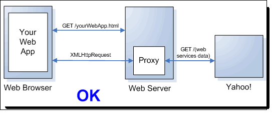

1. JavaScript. El lenguaje
Antes de comenzar con JavaScript, es necesario fijar una serie de conocimientos previos. A lo largo del módulo se van a utilizar páginas HTML, por lo que deberemos saber las etiquetas básicas, la estructura de una página web, uso de listas y capas. Junto a HTML, definiremos su estilo mediante CSS, por lo que es necesario conocer su uso básico, y cómo se aplica un estilo a una etiqueta, una clase o un identificador.
1.1. De JavaScript a ECMAScript
JavaScript es un lenguaje de script de amplio uso en la web, y con las nuevas tendencias de aplicaciones de cliente se está convirtiendo en el lenguaje de programación. En los últimos años el lenguaje se ha utilizado en otros contextos como el framework Node.js que permite escribir código de servidor.
Dentro del mundo de la programación, JavaScript tiene mala fama. Gran parte se debe a que se trata de un lenguaje débilmente tipado, que permite usar variables sin declarar y al tratarse de un lenguaje interpretado, no hay compilador que te diga que hay algo erróneo en tu programa. Realmente JavaScript ofrece mucha flexibilidad y las malas críticas vienen más por el desconocimiento del lenguaje que por defectos del mismo.
Contrario a lo que el nombre sugiere, JavaScript tiene poco que ver con Java. La similitud fue una decisión de marketing, allá por el año 1995 cuando Netscape introdujo el lenguaje en el navegador.
Relacionado con JavaScript tenemos ECMAScript (ES). Cuando el resto de navegadores empezaron a dar soporte a JavaScript, o lenguajes semejantes como JScript, se escribió un documento a modo de especificación de cómo un sistema JavaScript debería funcionar. El lenguaje descrito en este documento es ECMAScript, y lo que especifica es el lenguaje como lenguaje de propósito general, obviando su integración de éste con la web, es decir, nada de DOM ni BOM.
Existen varias versiones de JavaScript. La primera versión ampliamente soportada por diferentes navegadores es ECMAScript 3 (ES3) definida en el año 1999. La especificación 4 promovió varias iniciativas para evolucionar el lenguaje, pero, al menos en lo que implica a la programación web, estas extensiones sólo son útiles cuando son ampliamente soportadas por los navegadores, por lo que se deshechó y se pasó a la versión ECMAScript 5 (ES5), la cual se publicó en 2009. La versión 5 añade al lenguaje algunos objetos, métodos y propiedades, pero el elemento más importante es el modo estricto.
A grosso modo, los navegadores importantes ya soportan ECMAScript 5, e incluso algunos soportan algunas características especificas de ECMASCript 6 (también conocido como ECMAScript 2015) o incluso ES7: http://en.wikipedia.org/wiki/ECMAScript#Implementations
1.1.1. Strict mode
El modo estricto elimina características del lenguaje, lo que simplifica los programas y reduce la cantidad de errores que pueden contener. Por ejemplo, ES5 desaconseja el uso de la instrucción with, lo que provoca que se lance un error al encontrar dicha instrucción, aunque si el navegador no soporta ES5 funcionará correctamente. Otros ejemplos de errores con ES5 es usar variables que no hemos declarado previamente, declarar funciones donde algún parametro está repetido, un objeto donde dos propiedades tengan el mismo nombre, etc…
Para activar el modo estricto hay que introducir la cadena "use strict", lo que las implementaciones antiguas del lenguaje simplemente pasarán por alto, con lo que este modo es retrocompatible con los navegadores que no lo soporten.
Dependiendo del alcance, ya sea a nivel de función o global usaremos la cadena "use strict" al inicio del fichero o en la primera línea de la función. Por ejemplo, si sólo queremos activar el modo dentro de una función haremos:
function modoEstricto() {
"use strict";
// resto de la función
}Esto significa que el código interno de la función se ejecutará con el subconjunto estricto del lenguaje, mientras que otras funciones puede que hagan uso del conjunto completo.
El objetivo a medio plazo del lenguaje es que en el futuro sólo se soportará el modo estricto, con lo que ES5 es una versión transicional en la que se anima (pero no obliga) a escribir código en modo estricto.
1.2. Uso en el navegador
Para utilizar JavaScript dentro de una página web, usaremos la etiqueta <script>. Mediante esta etiqueta, podemos incluir el código:
-
en el propio documento HTML:
<script> // Instrucciones JavaScript </script> -
en un archivo externo (con extensión
.js), de modo que se pueda reutilizar entre varios documentos:<script src="ficheroJavaScript.js"></script>async y deferDesde HTML5, la etiqueta
scriptadmite los siguiente atributos que provocan que el script comience su descarga inmediatamente sin pausar el parser:-
async: ejecuta el script de manera asíncrona una vez descargado y antes del eventoloaddel objetowindow. Puede suceder que los scripts async no se ejecuten en el orden en el que aparecen en la página -
defer: garantiza que los scripts se ejecutarán en el orden en el que se encuentran en la página. Esta ejecución comienza una vez se ha parseado completamente el documento, pero antes del eventoDOMContentLoaded.
<script src="ficheroJavaScriptAsync.js" async></script>Ambos atributos soportan un segundo atributo
onloadpara indicar un manejador que se ejecutará una vez se haya cargado el script.Si no indicamos ninguno de estos atributos, el script se parsea y ejecuta inmediatamente de manera síncrona.
-
-
como parte de un manejador de eventos, como puede ser
onclickoonmouseover<button onclick="nombreFuncionJavaScript()" /> -
como parte de una URL mediante el pseudo-protocolo
javascript:<a href="javascript:nombreFuncionJavaScript()">Validar</a>
Normalmente, las referencias JS se incluyen mediante la etiqueta <script> en la cabecera del documento HTML. Pero si queremos que el código JS se ejecute al cargar la página, es conveniente ponerlo antes de cerrar la etiqueta </body> para asegurarnos que se ha cargado todo el DOM.
| Una de las consideraciones más importantes es que las páginas web que escribamos deben funcionar incluso si el navegador no soporta JavaScript. |
1.2.1. Hola ExpertoJavaUA
Por lo tanto, sabiendo que podemos incluir el código JavaScript dentro del código HTML, ya estamos listos para nuestro saludo:
<!DOCTYPE html>
<html lang="es">
<head>
<title>Hola ExpertoJavaUA</title>
<meta charset="utf-8" />
<script>
console.log("Hola ExpertoJavaUA desde la consola");
alert("Hola ExpertoJavaUA desde alert");
</script>
</head>
<body></body>
</html>Podéis observar que hemos utilizado la instrucción console.log para mostrar el saludo, pero que realmente, al probarlo en el navegador sólo aparece el mensaje con alert. Para visualizar los mensajes que pasamos por la consola necesitamos utilizar las DevTools que veremos a continuación.
1.3. Herramientas
En el curso vamos a utilizar Intellij IDEA (http://www.jetbrains.com/idea/) para editar nuestros archivos JavaScript, aunque cualquier IDE como Netbeans cumplen de sobra con su propósito.
El segundo elemento imprescindible a la hora de aprender un lenguaje es la referencia del mismo. Para ello, Mozilla mantiene la MDN (Mozilla Developer Network) con una extensa referencia de JavaScript llena de ejemplos, en https://developer.mozilla.org/en/docs/Web/JavaScript/Reference que también está traducida (aunque en muchas ocasiones sin tanto contenido) en https://developer.mozilla.org/es/docs/JavaScript/Referencia. A lo largo de los apuntes tendremos varios enlaces a la MDN para ampliar la información.
Para hacer pequeñas pruebas, el hecho de tener que crear un documento HTML que enlace a un documento JavaScript se puede hacer tedioso. Para ello, existen diferentes "parques" donde jugar con nuestro código. Dos de los más conocidos son JSBin (http://jsbin.com) y JSFiddle (http://jsfiddle.net).
Ambos nos permiten probar código en caliente, e interactuar con código HTML, CSS y usar librerías de terceros como jQuery.
Otro tipo de herramientas que podemos usar son los validadores de código o herramientas de control de calidad del código, que aconsejan una serie de pautas para minimizar los errores. En esta categoría podemos destacar tanto JSHint (http://www.jshint.com) como JSLint (http://www.jslint.com). En ambos casos, existen plugins para todos los IDEs del mercado, así como interfaces web para realizar pruebas básicas con nuestro código.
Finalmente, necesitamos un navegador web el cual incluya un interprete de JavaScript. En el módulo vamos a utilizar Google Chrome y Mozilla Firefox indistintamente. Cada navegador incluye un motor JavaScript diferente, el cual se encarga de interpretar las instrucciones y renderizar la página mediante la implementación de ECMAScript adecuada:
| Motor | Navegador | ECMAScript |
|---|---|---|
Chrome V8 |
Google Chrome |
ECMA-262, edition 5 |
SpiderMonkey 24 |
Mozilla Firefox |
ECMA-262, edition 5 |
Nitro |
Safari |
ECMA-262, edition 5.1 |
Chakra |
Internet Explorer |
ECMA-262, edition 5 |
1.3.1. Dev Tools
Y por último, aunque cada vez menos necesarias como herramientas de terceros, tenemos las herramientas de depuración de código. Los navegadores actuales incluyen las herramientas para el desarrollador que permiten interactuar con la página que se ha cargado permitiendo tanto la edición del código JavaScript como el estilo de la página, visualizar la consola con los mensajes y errores mostrados, evaluar y auditar su rendimiento, así como depurar el código que se ejecuta. Dentro de este apartado tenemos Firebug (http://getfirebug.com) como una extensión de Firefox, y las herramientas que integran los navegadores:
-
Google Chrome - Chrome Developers Tools (https://developer.chrome.com/devtools)
-
Mozilla Firefox: https://developer.mozilla.org/es/docs/Tools
-
Internet Explorer - F12: http://msdn.microsoft.com/es-ES/library/ie/bg182326
A continuación vamos a centrarnos en las Chrome Developer Tools. Nada más abrirlas, ya sea con el botón derecho e Inspeccionar Elemento, mediante el menú de o mediante F12, Ctrl+Shift+I o en Mac Command+Opt+I, aparece activa la pestaña de Elements.

Se puede observar que la pestaña Elements divide la pantalla en varios bloques:
-
Página web, en la parte superior, donde se muestra la representación de la misma
-
HTML, a la izquierda, con el código de la página (representación DOM), la cual, conforme pasemos el ratón por el código, se resaltará la presentación visual en el bloque anterior. En cualquier momento podremos editar el contenido de un nodo, añadir o eliminar atributos e incluso trasladar o eliminar nodos enteros.
-
CSS, a la derecha, con los estilos (styles) estáticos y los calculados, así como los eventos del elemento seleccionado en el bloque HTML. Además de poder ver qué reglas están activas, podemos habilitar o deshabilitar propiedades, editar las reglas de las pseudo-clases (
active,hover, etc…) y acceder al fuente de un determinado estilo. -
Consola, en la parte inferior, donde veremos los mensajes y errores de la página.
Si queremos visualizar que nodo se seleccionaría al utilizar un determinado selector, podemos hacer uso del método inspect(selector) dentro de la consola. Veremos el uso de selectores mediante las DevTools en la tercera sesión donde estudiaremos JavaScript y DOM.
|
Otra pestaña con la que vamos a trabajar es la de fuentes (Sources), desde la cual podemos editar el código fuente de nuestros archivos JS, CSS o HTML (desde la caché local de Chrome). Las DevTools almacenan un histórico de nuestros cambios (Local Modifications) desde donde podemos revertir un cambio a un punto anterior. Una vez tenemos la versión definitiva, podemos guardar los cambios en el fuente de nuestro proyecto mediante Save As.
Además, si queremos podemos depurar el código de nuestra aplicación haciendo uso de manera conjunta del código fuente y del panel derecho de Sources, donde podemos añadir breakpoints, pausar la ejecución del código al producirse una excepción, así como evaluar el contenido de las variables (pasando el ratón por encima del código) y la pila de ejecución.
| Un tutorial muy completo sobre las Dev-Tools, en vídeo pero con subtítulos en castellano y patrocinado por Google es http://discover-devtools.codeschool.com/ |
1.3.2. Console API
En los apuntes vamos a usar el objeto console para mostrar resultados (también podríamos usar alert pero es más molesto). Este objeto no es parte del lenguaje pero sí del entorno y está presente en la mayoría de los navegadores, ya sea en las herramientas del desarrollador o en el inspector web.
Así pues, dentro de la consola de las Dev-Tools podremos visualizar los mensajes que enviemos a la consola así como ejecutar comandos JavaScript sobre el código ejecutado.
Centrándonos en la Console API, los métodos que podemos usar son:
-
log(): muestra por la consola todos los parámetros recibidos, ya sean cadenas u objetos.-
info(),warn(),error(): muestran mensajes con diferentes niveles de log, normalmente representados con un color distinto.
-
-
dir(): enumera los objetos recibidos e imprime todas sus propiedades. -
assert(): permite comprobar si se cumple una aserción booleana. -
time()ytimeEnd(): calcula el tiempo empleado entre las dos instrucciones
Por ejemplo, si ejecutamos el siguiente código:
console.log("prueba", 1, {}, [1,2,3]);
console.dir({uno: 1, dos: {tres: 3}});Obtendremos:

Si queremos, podemos escribir en la consola sin necesidad de usar console.log(). Esto nos permite probar pequeños cambios o consultar valores de determinados campos, similar a un entorno de depuración que ofrezca un IDE, con completado de código automático (mediante TAB).
Más información del uso de Console API en https://developer.mozilla.org/en-US/docs/Web/API/console
1.4. Datos y variables
Como todo lenguaje de programación, JavaScript soporta tanto datos de texto como numéricos, los cuales se almacenan en variables.
1.4.1. Variables
Para declarar una variable, se utiliza la palabra clave var delante del nombre de variable.
var contador; // undefined
contador = 5;
Los comentarios siguen la misma sintaxis de Java mediante // y /* */
|
Los nombres de las variables pueden empezar por minúsculas, mayúsculas, subrayado e incluso con $, pero no pueden empezar con números. Además el nombrado es sensible al uso de las mayúsculas y minúsculas, por lo que no es lo mismo contador que Contador.
Se recomienda que las variables comiencen con minúsculas, sigan la notación camelCase, tengan un nombre auto-explicativo, y que se evite el uso de $ ya que se trata de un carácter muy utilizado por las librerías (en especial, por jQuery) y puede hacer el código menos legible.
|
El tipo de datos asociado a la variable se asigna de manera automática. Si al declarar la variable no le asignamos ningún valor, JavaScript le asigna el tipo undefined. Posteriormente podemos cambiar su tipo en cualquier momento asignándole un nuevo valor.
La diferencia entre undefined y null es académica y no muy significativa. En los programas en los cuales sea necesario comprobar si algo "tiene un valor", podemos usar la expresión algo == undefined, ya que aunque no sean el mismo valor, la expresión null == undefined producirá verdadero.
Otra característica de JavaScript es que podemos asignar valores a variables que no hemos declarado:
var a = 3;
b = 5;
c = a + b; // 8Al hacer esto, la variable pasa a tener un alcance global, y aunque sea posible, es mejor evitar su uso. Por ello, esta característica queda en desuso si usamos el modo estricto de ES5:
"use strict";
var a = 3;
b = 5; // Uncaught ReferenceError: b is not definedUn característica especial de JavaScript es la gestión que hace de las variables conocida como hoisting (elevación). Este concepto permite tener múltiples declaraciones con var a lo largo de un bloque, y todas ellas actuarán como si estuviesen declaradas al inicio del mismo:
var a = 3;
console.log(b); // undefined
var b = 5;Es decir, al referenciar a la variable b antes de su declaración no obtendremos el valor de la variable global b, sino undefined. Cuando estudiemos las funciones y el alcance de las variables volveremos a este concepto.
Por ello, una buena práctica que se considera como un patrón de diseño (Single Var) es declarar las variables con una única instrucción var en la primera línea de cada bloque (normalmente al inicio de cada función), lo que facilita su lectura:
var a = 3,
b = 5,
suma = a + b,
z;1.4.2. Texto
JavaScript almacena las cadenas mediante UTF-16. Podemos crear cadenas tanto con comillas dobles como simples. Podemos incluir comillas dobles dentro de una cadena creada con comillas simples, así como comillas simples dentro de una cadena creada con comillas dobles.
"" // cadena vacía
'probando'
"3.14"
'nombre="miFormulario"'
"comemos en el McDonald's"Para concatenar cadenas se utiliza el operador +. Otra propiedad muy utilizada es length para averiguar el tamaño de una cadena.
var msj = "Hola " + "Mundo";
var tam = msj.length;JavaScript soporta una serie de operaciones para tratar las cadenas, como charAt(indice) (0-index), substring(inicio [,fin]), indexOf(cadena)/lastIndexOf(cadena), trim(), replace() … Por ejemplo:
var nombre = "Bruce Wayne";
console.log(nombre);
console.log(typeof(nombre)); // "string"
console.log(nombre.toUpperCase());
console.log(nombre.toLowerCase());
console.log(nombre.length); // 11 -> es una propiedad
console.log(nombre.charAt(0)); // "B"
console.log(nombre.charAt(-1)); // ""
console.log(nombre.indexOf("u")); // 2
console.log(nombre.lastIndexOf("ce")); // 3
console.log(nombre.lastIndexOf("Super")); // -1
console.log(nombre.substring(6)); // "Wayne"
console.log(nombre.substring(6,9)); // "Way"
console.log(nombre.replace("e","i")); // "Bruci Wayne"; (1)| 1 | El método replace sólo sustituye la primera ocurrencia. Ampliaremos su explicación al estudiar las expresiones regulares |
Un método que conviene repasar es split(separador) que separa una cadena en un array de subcadenas divididas por el separador. Por ejemplo:
var frase = "En un lugar de la Mancha";
var trozos = frase.split(" "); // ["En", "un", "lugar", "de", "la", "Mancha"]
var truzus = frase.split("u"); // ["En ", "n l", "gar de la Mancha"]Más información en: https://developer.mozilla.org/en-US/docs/Web/JavaScript/Reference/Global_Objects/String
Desde ECMAScript 5, las cadenas se tratan como arrays de sólo lectura, por lo cual podemos acceder a los caracteres individuales mediante la notación de array:
s = "Hola Mundo";
s[0] // H
s[s.length-1] // o1.4.3. Números
Todos los números en JavaScript se almacenan como números de punto flotante de 64 bits. Para crear variables numéricas, le asignaremos el valor a la variable.
var diez = 10; // entero
var pi = 3.14; // realSi necesitamos redondear una cifra a un número determinado de decimales usaremos el método toFixed(dígitos), el cual devuelve la cifra original con tantos decimales como los indicados por el parámetro dígitos realizando los redondeos necesarios:
var pi = 3.14159265;
console.log(pi.toFixed(0)); // 3
console.log(pi.toFixed(2)); // 3.14
console.log(pi.toFixed(4)); // 3.1416Podemos utilizar los operadores aritméticos básicos como la suma +, la resta -, el producto * la división / y el resto %.
Para cualquier otra operación, podemos utilizar el objeto Math para operaciones como la potencia (Math.pow(base,exp)), raíz cuadrada (Math.sqrt(num)), redondear (Math.round(num), Math.ceil(num), Math.floor(num)), obtener el mayor (Math.max(num1, num2,…)), obtener el menor (Math.min(num1, num2, …)), un número aleatorio en 0 y 1 (Math.random()), el número pi (Math.PI), etc… Más información en https://developer.mozilla.org/en-US/docs/Web/JavaScript/Reference/Global_Objects/Math
Para pasar una cadena a un número, utilizaremos la función global parseInt(cadena [, base]), donde la base por defecto es 10, es decir, decimal. Igualmente, para pasar a un número real, usaremos la función global parseFloat(cadena [, base]).
var cadena = "3.14";
var pi = parseFloat(cadena, 10);
var tres = parseInt(pi, 10);JavaScript emplea el valor NaN (que significa NotANumber) para indicar un valor numérico no definido, por ejemplo, la división 0/0 o al parsear un texto que no coincide con ningún número.
var numero1 = 0;
var numero2 = 0;
console.log(numero1/numero2); // NaN
console.log(parseInt("tres")); // NaNSi en alguna ocasión queremos averiguar si una variable no es un número, usaremos la función isNaN(valor):
var miNumero = "tres";
if (isNaN(miNumero)) {
console.log("¡No es un número!");
}Finalmente, si necesitamos referenciar a un valor númerico infinito y positivo, usaremos la constante Infinity. También existe -Infinity para los infinitos negativos.
var numero1 = 10;
var numero2 = 0;
console.log(numero1/numero2); // Infinity1.4.4. Booleanos
Podemos guardar valores de true y false en las variables de tipo boolean.
var esBooleano = true;Los operadores que trabajan con booleanos son la conjunción &&, la disyunción || y la negación !. Además, tenemos el operador ternario (cond) ? valorVerdadero : valorFalso.
Si un valor es 0, -0, null, false, NaN, undefined, o una cadena vacía (""), entonces es falso. Cualquier otro valor en JavaScript a excepción de los valores comentados se convertirán en verdadero al usarlos dentro de un contexto booleano, (por ejemplo, if (true) {};).
Es decir, tanto los números distintos de cero, como los objetos y arrays devuelven verdadero. En cambio, el cero, null y el valor undefined son falsos.
|
Operador ===
Aparte de los operadores básicos de comparación ( La principal diferencia con el operador igualdad ( Por supuesto, también existe su operador negado ( La comunidad JavaScript recomienda usar siempre el operador identidad en contra del igualdad para evitar la conversión de tipos, es decir, mejor 3 iguales que 2. |
1.4.5. Coerción de tipos
Cuando a un operador se le aplica un valor con un tipo de datos incorrecto, JavaScript convertirá el valor al tipo que necesita, mediante un conjunto de reglas que puede que no sean las que nosotros esperamos. A este comportamiento se le conoce como coerción de tipos.
console.log(8 * null) // 0
console.log("5" - 1) // 4
console.log("5" + 1) // 51
console.log("five" * 2) // NaN
console.log(false == 0) // truePor ejemplo, el operador suma siempre intenta concatenar, con lo cual convierte de manera automáticas los números a textos. En cambio, la resta realiza la operación matemática, con lo que parsea el texto a número.
1.4.6. Fechas y horas
Para crear una fecha usaremos el objeto Date, ya sea con el constructor vacío de modo que obtengamos la fecha actual, pasándole un valor que representa el timestamp Epoch (desde el 1/1/70), o pasándole al constructor del día (1-31), mes (0-11) y año.
var fecha = new Date();
console.log(fecha); // Wed May 21 2014 21:03:59 GMT+0200 (Hora de verano romance)
var nochevieja = new Date(2014, 11, 31);
console.log(nochevieja); // Wed Dec 31 2014 00:00:00 GMT+0100 (Hora estándar romance)Si además queremos indicar la hora, lo podemos hacer mediante tres parámetros más:
var cenaNochevieja = new Date(2014, 11, 31, 22, 30, 0);
console.log(cenaNochevieja); // Wed Dec 31 2014 22:30:00 GMT+0100 (Hora estándar romance)Una vez tenemos un objeto Date, tenemos muchos métodos para realizar operaciones. Algunos de los métodos más importantes son:
-
getFullYear(): devuelve el año de la fecha con cuatro dígitos -
getMonth(): número del mes del año (de 0 a 11) -
getDate(): número de día del mes
|
Autoevaluación
A partir del siguiente código ¿Qué saldrá por la consola del navegador? [1] |
Más información en https://developer.mozilla.org/en-US/docs/Web/JavaScript/Reference/Global_Objects/Date
Para comparar fechas podemos usar los operadores < o > con el objeto Date, o la comparación de igualdad/identidad con el método getTime() que nos devuelve el timestamp.
var cenaPreNochevieja = new Date(2014, 11, 30, 22, 30, 0);
var cenaNochevieja = new Date(2014, 11, 31, 22, 30, 0);
var cenaNochevieja2 = new Date(2014, 11, 31, 22, 30, 0);
console.log( cenaPreNochevieja < cenaNochevieja ); // true
console.log( cenaNochevieja == cenaNochevieja2 ); // false
console.log( cenaNochevieja === cenaNochevieja2 ); // false
console.log( cenaNochevieja.getTime() == cenaNochevieja2.getTime() ); // true
console.log( cenaNochevieja.getTime() === cenaNochevieja2.getTime() ); // trueTrabajar con fechas siempre es problemático, dado que el propio lenguaje no ofrece métodos para realizar cálculos sobre fechas, o realizar consultas utilizando el lenguaje natural. Una librería muy completa es Datejs (http://www.datejs.com/).
1.4.7. typeof
El operador typeof devuelve una cadena que identifica el tipo del operando. Así pues,
typeof 94.8 // 'number'
typeof "Batman" // 'string'Los posibles valores de typeof son 'number','string','boolean','undefined','function' y 'object'. El problema viene cuando hacemos esto:
typeof null // 'object'y en vez de recibir 'null' nos dice que es un objeto. Es decir, si le pasamos un array o null el resultado es 'object', lo cual es incorrecto.
Con lo que para comprobar si es null es mejor usar el operador identidad:
valorNulo === null // true1.5. Instrucciones
De manera similar a Java, tenemos los siguientes tipos:
-
condicionales:
if,if/else(también podemos usar el operador ternario?:) yswitch -
iterativas:
while,do/while,for,for…in,breakycontinue -
tratamiento de excepciones:
try/catchythrow -
depuración:
debuggerylabel
A lo largo del curso usaremos las instrucciones tanto en los ejemplos como en los ejercicios que realizaremos.
Más información en https://developer.mozilla.org/en-US/docs/Web/JavaScript/Reference
|
Punto y coma
En ocasiones, JavaScript permite omitir el punto y coma al final de una sentencia, pero en otras no. Las reglas que definen cuando se puede omitir el punto y coma son complejas, por lo que se recomienda poner siempre el punto y coma. El siguiente artículo detalla la casuística de cuando podemos evitar poner el punto y coma: http://www.codecademy.com/blog/78-your-guide-to-semicolons-in-javascript |
1.6. Funciones
Las funciones en JavaScript son objetos, y como tales, se pueden usar como cualquier otro valor. Las funciones pueden almacenarse en variables, objetos y arrays. Se pueden pasar como argumentos a funciones, y una función a su vez puede devolver una función (ella misma u otra). Además, como objetos que son, pueden tener métodos.
Pero lo que hace especial a una función respecto a otros tipos de objetos es que las funciones pueden invocarse.
Las funciones se crean con la palabra clave function junto a los parámetros sin tipo rodeados por una pareja de paréntesis. El nombre de la función es opcional.
JavaScript no produce ningún error de ejecución si el número de argumentos y el de parámetros no coincide. Si hay demasiados valores de argumentos, los argumentos de sobra se ignoran. Por contra, si hay menos argumentos que parámetros, los parámetros que han quedado sin asignar tendrán el valor undefined. No se realiza ninguna comprobación de tipos, con lo que podemos pasar cualquier valor como parámetro.
Además, dentro de una función podemos invocar a otra función que definimos en el código a posteriori, con lo que no tenemos ninguna restricción de declarar las funciones antes de usarlas. Pese a no tener restricción, es una buena práctica de código que las funciones que dependen de otras se coloquen tras ellas.
Por último, para devolver cualquier valor dentro de una función usaremos la instrucción return, la cual es opcional. Si una función no hace return, el valor devuelto será undefined.
1.6.1. Función declaración
Si al crear una función le asignamos un nombre se conoce como una función declaración.
function miFuncion(param1, param2) {
// instrucciones
return variable;
}Las variables declaradas dentro de la función no serán visibles desde fuera de la función. Además, los parámetros se pasan por copia, y aquí vienen lo bueno, se pueden pasar funciones como parámetro de una función, y una función puede devolver otra función.
function suma(alfa, beta) {
return alfa + beta;
}
function calculando(gamma, delta, fn) {
return fn(gamma, delta);
}
var epsilon = calculando(3, 4, suma);|
Autoevaluación
A partir del código anterior, ¿Qué valor obtendríamos en la variables |
1.6.2. Función expresión
Otra característica de las funciones de JavaScript es que una función se considera un valor. De este modo, podemos declarar una función anónima la cual no tiene nombre, y asignarla a una variable (conocida como función expresión).
var miFuncionExpresion = function (param1, param2) {
// instrucciones
return variable;
}Así pues, el mismo código del ejemplo anterior quedaría así:
var suma = function (alfa, beta) {
return alfa + beta;
};
var calculando = function (gamma, delta, fn) {
return fn(gamma, delta);
};
var epsilon = calculando(3, 4, suma);Y por último, también podemos crear funciones anónimas al llamar a una función, lo que añade a JavaScript una gran flexibilidad:
var calculando = function (gamma, delta, fn) {
return fn(gamma, delta);
};
var epsilon = calculando(3, 4, function(alfa, beta) {
return alfa + beta;
});Como veremos en posteriores sesiones, gran parte de las librerías hacen uso de las funciones anónimas a la hora de invocar a las diferentes funciones que ofrecen.
Las funciones expresión se pueden invocar inmediatamente, lo que hace que sean muy útiles cuando tenemos un bloque que vamos a utilizar una única vez.
(function() {
// instrucciones
})(); // invoca la función inmediatamente1.6.3. Funciones declaración vs expresión
Cabe destacar una diferencia importante entre estos tipos de funciones, y es que las funciones declaración se cargan antes de cualquier código, con lo que el motor JavaScript permite ejecutar una llamada a esta función incluso si está antes de su declaración (debido al hoisting). En cambio, con las funciones expresión, se cargan conforme se carga el script, y no van a permitir realizar una llamada a la función hasta que sea declarada, por lo que debemos colocarlas antes del resto de código que quiera invocar dicha función.
cantar();
estribillo(); // TypeError: undefined
function cantar() {
console.log("¿Qué puedo hacer?");
}
var estribillo = function() {
console.log("He pasado por tu casa 20 veces");
};1.6.4. Callbacks
Se conoce como callback a una función que se le pasa a otra función para ofrecerle a esta segunda función un modo de volver a llamarnos más tarde.
Dicho de otro modo, al llamar a una función, le envío por parámetro otra función (un callback) esperando que la función llamada se encargue de ejecutar esa función callback. Resumiendo, los callbacks son funciones que contienen instrucciones que se invocarán cuando se complete un determinado proceso.
Por ejemplo, la función haceAlgo recibe un callback como argumento:
function haceAlgo(miCallback) {
// hago algo y llamo al callback avisando que terminé
miCallback();
}
// Invocamos al callback mediante una función inline
haceAlgo(function() {
console.log('he acabado de hacer algo');
});
function ejemploCallback() {
console.log('he realizado algo');
}
// Invocamos al callback con una función declarada con antelación
haceAlgo(ejemploCallback);Pero los callbacks no sólo se utilizan para llamar a algo cuando termina una acción. Simplemente podemos tener distintos callbacks que se van llamando en determinados casos, es decir, como puntos de control sobre una función para facilitar el seguimiento de un workflow. La idea es disparar eventos en las funciones que llamaron “avisando” sobre lo que esta sucendiendo:
function haceAlgo(callbackPaso1, callbackPaso2, callbackTermino) {
// instrucciones proceso 1
callbackPaso1('proceso 1');
// instrucciones proceso 2
callbackPaso2('proceso 2');
// instrucciones proceso Final
callbackTermino('fin');
}
function paso1(quePaso) {
console.log(quePaso);
}
function paso2(quePaso) {
console.log(quePaso);
}
function termino(queHizo) {
console.log(queHizo);
}
haceAlgo(paso1, paso2, termino);De esta forma creamos funciones nombradas fuera de la llamada y éstas a su vez podrían disparar otros eventos (con callbacks) también.
Por último y no menos importante, los callbacks no son asíncronos, es decir, tras dispararse el callback, se ejecuta todo el código contenido y el control vuelve a la línea que lo disparó. En el ejemplo anterior dispara el callbackPaso1() y cuando este termina, continúa la ejecución disparando el callbackPaso2().
Esta duda se debe a que al tratar con elementos asíncronos, los callbacks se emplean para gestionar el orden de ejecución de dichas tareas asíncronas.
1.6.5. arguments
Además de los parámetros declarados, cada función recibe dos parámetros adiciones: this y arguments.
El parámetro adicional arguments nos da acceso a todos los argumentos recibidos mediante la invocación de la función, incluso los argumentos que sobraron y no se asignaron a parámetros. Esto nos permite escribir funciones que tratan un número indeterminado de parámetros.
Estos datos se almacenan en una estructura similar a un array, aunque realmente no lo sea. Pese a ello, si que tiene una propiedad length para obtener el número de parámetros y podemos acceder a cada elemento mediante la notación arguments[x], pero carece del resto de métodos que si ofrecen los arrays (que veremos en la siguiente sesión).
Por ejemplo, podemos crear una función que sume un número indeterminado de parámetros:
var suma = function() {
var i, s=0;
for (i=0; i < arguments.length; i+=1) {
s += arguments[i];
}
return s;
};
console.log(suma(1, 2, 3, 4, 5)); // 151.7. Alcance
Recordemos que el alcance determina desde donde se puede acceder a una variable, es decir, donde nace y donde muere. Por un lado tenemos el alcance global, con el que cualquier variable o función global pueden ser invocada o accedida desde cualquier parte del código de la aplicación. En JavaScript, por defecto, todas las variables y funciones que definimos tienen alcance global.
Si definimos una variable dentro de una función, el alcance se conoce como de función, de modo que la variable vive mientras lo hace la función.
Aquella variable/función que definimos dentro de una función (padre) es local a la función pero global para las funciones anidadas (hijas) a la que hemos definido la función (padre). Por esto, más que alcance de función, se le conoce como alcance anidado.
Y así sucesivamente, podemos definir funciones dentro de funciones con alcance anidado en el hijo que serán accesibles por el nieto, pero no por el padre.
var varGlobal = "Esta es una variable global.";
var funcionGlobal = function(alfa) {
var varLocal = "Esta es una variable local con alcance anidado";
var funcionLocal = function() {
var varLocal = "¡Hola Mundo!";
console.log(varLocal);
console.log(alfa);
};
funcionLocal();
console.log(varLocal);
};
// console.log(varLocal)
funcionGlobal(2);|
Autoevaluación
|
Si queremos evitar tener colisiones con las variables locales, podemos usar una función expresión con invocación inmediata (IIFE). Para ello, tenemos que englobar el código a proteger dentro de una función, la cual se rodea con paréntesis y se invoca, es decir, del siguiente código:
(function() {
// código
})();De este modo, las variables que declaremos dentro serán locales a ésta función, y permitirá el uso de librería de terceros sin efectos colaterales con nuestras variables. Por lo tanto, si intentamos acceder a una variable local de una IIFE (también conocidos como closures anónimos) desde fuera obtendremos una excepción:
(function() {
var a = 1;
console.log(a); // 1
})();
console.log(a); // Uncaught ReferenceError: a is not defined|
Autoevaluación
A partir del siguiente fragmento: ¿Qué valor aparecerá por la consola? [5] |
Más información en: http://en.wikipedia.org/wiki/Immediately-invoked_function_expression
1.7.1. Hoisting
Al estudiar la declaración de variables, vimos el concepto de hoisting, el cual eleva las declaraciones encontradas en un bloque a la primera línea. Ahora que ya conocemos como funciona el alcance y las funciones lo estudiaremos en mayor profundidad.
En el ejemplo visto en Variables, teníamos el siguiente código:
"use strict";
var a = "global";
console.log(b); // undefined
var b = 5;La variable b era una variable que no se había declarado y pese a ello, aún usando el modo estricto, el intérprete no lanza ninguna excepción, porque la declaración se eleva al principio del bloque (no así la asignación, que permanece en su lugar).
Ahora veremos que dentro de una función, al referenciar a una variable nombrada de manera similar a una variable global, al hacer hoisting y declararla más tarde, la referencia apunta a la variable local.
"use strict";
var a = "global";
console.log(b); // undefined
var b = 5;
console.log(b); // 5
function hoisting() {
console.log(b); // undefined (1)
var b = 7;
console.log(b); // 7
}
hoisting();| 1 | Si no hubiese hoisting se mostraría 5, pero al elevarse la declaración de la función, la variable local todavía no tiene ningún valor, de ahí el valor undefined |
El siguiente fragmento es el equivalente, donde las declaraciones se elevan al principio del bloque pero las asignaciones e instrucciones se quedan en su sitio:
"use strict";
var a = "global";
var b;
function hoisting() {
var b;
console.log(b); // undefined
b = 7;
console.log(b); // 7
}
console.log(b); // undefined
b = 5;
console.log(b); // 5
hoisting();|
Autoevaluación
¿Cual es el resultado de ejecutar el siguiente fragmento y por qué?: [6] |
1.8. Timers
JavaScript permite la invocación de funciones tras un lapso de tiempo y con repeticiones infinitas.
Para ejecutar una acción tras una duración determinada indicada en milisegundos tenemos la función setTimeout(funcion, tiempoMS). La llamada a setTimeout no bloquea la ejecución del resto de código.
(function() {
var miFuncion = function() {
console.log("Batman vuelve");
};
setTimeout(miFuncion, 2000); (1)
}());| 1 | La función se ejecutará 2 segundos después de cargar la página |
Si queremos que una función se ejecute de manera ininterrumpida con un intervalo de tiempo, podemos hacer una llamada con setTimeOut dentro de la función ya llamada lo que provoca su invocación de manera recursiva.
(function() {
var velocidad = 2000,
miFuncion = function() {
console.log("Batman vuelve");
setTimeout(miFuncion, velocidad);
};
var timer = setTimeout(miFuncion, velocidad);
// cancelTimer(timer);
}());Al ejecutar el código, tras 2 segundos, saldrá el mensaje por consola, y con cada iteración que se repetirá cada 2 segundos, se incrementará el contador mostrado por las Developer Tools.

Aunque si lo que queremos es realizar una llamada a una función de manera repetida con un intervalo determinado, podemos hacer uso de la función setInterval(funcion, intervalo), la cual repetirá la ejecución de la función indicada.
Finalmente, si queremos detener un temporizador, mediante clearInterval(timer) cancelaremos la ejecución de la función.
Así pues, si reescribimos el ejemplo anterior haciendo uso de setInterval, tendremos:
(function() {
miFuncion = function() {
console.log("Batman vuelve");
};
var timer = setInterval(miFuncion, 2000);
}());1.9. Gestión de errores
Para controlar el comportamiento erróneo de una aplicación, podemos hacer uso de las excepciones.
1.9.1. Capturando excepciones
¿Qué sucede cuando utilizamos a una variable que no esta declarada?
var a = 4;
a = b + 2;
console.log("Después del error"); // No se ejecuta nuncaYa hemos visto que cuando se lanza un error, aparece por consola un mensaje informativo. Si queremos ver el código que ha provocado la excepción, en la consola podemos desplegar el mensaje de la excepción, y a su derecha podremos pulsar sobre el archivo:linea y nos mostrará la línea en cuestión que ha provocado el fallo en el panel de Sources:

Para evitar estos errores, JavaScript ofrece un mecanismo try / catch / finally similar al que ofrece Java. Al capturar una excepción, podemos acceder a la propiedad message de la excepción para averiguar el error.
Por ejemplo, si reescribimos el ejemplo anterior y capturamos la excepción tendremos:
try {
var a = 4;
a = b + 2;
console.log("Después del error");
} catch(err) {
console.error("Error en try/catch " + err.message);
} finally {
console.log("Pase lo que pase, llegamos al finally");
}La cuarta línea, que hace console.log("Después del error"), nunca se ejecutará porque al intentar sumarle 2 a una variable que no hemos declarado, se lanza una excepción que hemos capturado.

1.9.2. Lanzando excepciones
Si queremos que nuestro código lance una excepción, usaremos la instrucción throw, pudiendo bien lanzar una cadena de texto que será el mensaje de error, o bien crear un objeto Error.
function ecuacion2grado(a,b,c) {
var aux = b*b-4*a*c;
if (aux < 0) {
throw "Raíz Negativa";
// throw new Error("Raíz Negativa");
}
// resto del código
}1.9.3. Debug
Ya vimos en el apartado de las [_dev_tools] como podemos introducir breakpoints para depurar el código o parar la ejecución del código cuando se produce una excepción.
Una gran desconocida es la instrucción debugger, la cual funciona de manera similar a un breakpoint pero a nivel de código, de modo que paraliza la ejecución del código e invoca al debugger (si existe alguno, si no, no realiza nada) y pausa la ejecución de la aplicación.
function funcionQueDaProblemas() {
debugger;
// código que funciona de manera aleatoria
}1.9.4. Errores comunes
A la hora de escribir código JavaScript, los errores más comunes son:
-
No cerrar una cadena, olvidando las comillas de cierre.
-
Olvidar el punto y coma tras asignar una función anónima a una variable/propiedad.
-
Invocar a una función, método o variable que no existe.
-
Errores de sintaxis, por ejemplo,
document.getElementByID("miId"); -
Referenciar un elemento del DOM que todavía no se ha cargado.
-
En una condición, usar una asignación (
=) en vez de una comparación (==o===). Aunque la aplicación no se va a quejar, siempre será verdadera. -
Pasar a una función menos parámetros de los necesarios no provoca ningún error, pero podemos obtener resultados inesperados.
Muchos de estos errores se pueden evitar haciendo uso del modo estricto de ECMAScript 5.
1.10. Ejercicios
Todos los ejercicios del módulo deben estar en modo estricto ("use strict") y cumplir la nomeclatura de nombrado de archivos.
El repositorio a clonar es java_ua/ejercicios-js-expertojava.
1.10.1. (0.4 ptos) Ejercicio 11. toCani
Crear una función que reciba una cadena y la devuelva transformada en Cani. Por ejemplo, si le pasamos a la función la cadena "una cadena cani es como esta" obtendremos "UnA KaDeNa kAnI Es kOmO EsTaHHH".
Para ello, hay que alternar el uso de MAYÚSCULAS y minúsculas, sustituir la letra C por la K y añadir tres letras H al final.
La función se almacenará en una archivo denominado ej11.js, y tendrá la siguiente definición:
function toCani(cadena) {}1.10.2. (0.6 ptos) Ejercicio 12. Temporizador
Crear una función temporizador que reciba como parámetro los minutos y segundos de duración del mismo, de modo, que cada segundo mostrará por consola el tiempo que le queda al temporizador hasta llegar a 0.
La función recibirá dos parámetros, con los minutos y los segundos, pero en el caso que sólo le pasemos un parámetro, considerará que son los segundos desde donde comenzará la cuenta atrás.
Por ejemplo:
temporizador(77); // le pasamos 77 segundos
temporizador(2,50); // le pasamos 2 minutos y 50 segundosSi alguno de los valores que recibe como parámetros son negativos o de un tipo inesperado, la función debe lanzar una excepción informando del problema.
La función se almacenará en una archivo denominado ej12.js, y tendrá la siguiente definición:
function temporizador(minutos, segundos) {}2. JavaScript orientado a objetos
2.1. Trabajando con objetos
Todo en JavaScript es un objeto. El ejemplo más básico de un objeto en JavaScript es una cadena.
var cadena = "Yo soy tu padre",
long = cadena.length;
var minus = cadena.toUpperCase();
console.log(minus);
console.log(cadena);Podemos observar como la cadena tiene atributos (length) y métodos (toUpperCase()).
Los tipos de datos primitivos son tipos de datos Number, String o Boolean. Realmente no son objetos, y aunque tengan métodos y propiedades, son inmutables.
En cambio, los objetos en JavaScript son colecciones de claves mutables. En JavaScript, los arrays son objetos, las funciones son objetos (Function), las fechas son objetos (Date), las expresiones regulares son objetos (RegExp) y los objetos, objetos son (Object).
Para crear un objeto, podemos usar el tipo de datos Object.
var obj = new Object();
var str = new String();2.1.1. Propiedades
Un objeto es un contenedor de propiedades (cada propiedad tiene un nombre y un valor), y por tanto, son útiles para coleccionar y organizar datos. Los objetos pueden contener otros objetos, lo que permite estructuras de grafo o árbol.
Para añadir propiedades a un objeto no tenemos más que asignarle un valor utilizando el operador . para indicar que la propiedad forma parte del objeto.
var persona = new Object();
persona.nombre = "Aitor";
persona.apellido1 = "Medrano";Para averiguar si un objeto contiene un campo, podemos usar el operador in. Finalmente, si queremos eliminar una propiedad de un objeto, hemos de utilizar el operador delete:
console.log('nombre' in persona); // true
delete persona.nombre;
console.log('nombre' in persona); // false2.1.2. Métodos
Para crear un método, podemos asignar una función anónima a una propiedad, y al formar parte del objeto, la variable this referencia al objeto en cuestión (y no a la variable global como sucede con las funciones declaración/expresión).
persona.getNombreCompleto = function() {
return this.nombre + " " + this.apellido1;
}Y para invocar la función invocaremos el método de manera similar a Java:
console.log( persona.getNombreCompleto() );Realmente el código no se escribe así, es decir, no se crea un Object y posteriormente se le asocian propiedades y métodos, sino que se simplifica mediante objetos literales.
2.2. Objetos literales
Los objetos literales ofrecen una notación para crear nuevos objetos valor. Un objeto literal es un par de llaves que rodean 0 o más parejas de clave:valor separados por comas, donde cada clave se considera como un propiedad/método, de la siguiente manera:
var nadie = {};
var persona = {
nombre : "Aitor", (1)
apellido1 : "Medrano",
getNombreCompleto : function() { (2)
return this.nombre + " " + this.apellido1;
}
};| 1 | La propiedad y el valor se separan con dos puntos, y cada una de las propiedades con una coma, de forma similar a JSON. |
| 2 | un método es una propiedad de tipo function |
Todo objeto literal finaliza con un punto y coma (;)
|
Para recuperar un campo, además de la notación ., podemos acceder a cualquier propiedad usando la notación de corchetes []:
var nom = persona.nombre;
var ape1 = persona["apellido1"];
var nombreCompleto = persona.getNombreCompleto();
var nombreCompletoCorchete = persona["getNombreCompleto"]();La notación de corchetes es muy útil para acceder a una propiedades cuya clave está almacenada en una variable que contiene una cadena con el nombre de la misma.
2.2.1. Objetos anidados
Los objetos anidados son muy útiles para organizar la información y representar relaciones contiene con cardinalidades 1 a 1, o 1 a muchos:
var cliente = {
nombre: "Bruce Wayne",
email: "bruce@wayne.com",
direccion: {
calle: "Mountain Drive",
num: 1007,
ciudad: "Gotham"
}
};También podemos asignar objetos:
var cliente = {};
cliente.nombre = "Bruce Wayne";
cliente.email = "bruce@wayne.com";
cliente.direccion = {};
cliente.direccion.calle = "Mountain Drive";
cliente.direccion.num = 1007;
cliente.direccion.ciudad = "Gotham";Si accedemos a una propiedad que no existe, obtendremos undefined. Si queremos evitarlo, podemos usar el operador || (or).
var nada = cliente.formaPago; // undefined
var pagoPorDfecto = cliente.formaPago || "Efectivo";Un fallo muy común es acceder a un campo de una propiedad que no existe. El siguiente fragmento fallará, ya que el objeto direccion no está definido.
var cliente = {};
cliente.direccion.calle = "Mountain Drive";Si intentamos obtener un valor de una propiedad undefined, se lanzará un excepción TypeError. Para evitar la excepción, podemos usar el operación && (and).
var cliente = {};
cliente.direccion; // undefined
cliente.direccion.calle; // lanza TypeError
cliente.direccion && cliente.direccion.calle; // undefinedEn resumen, un objeto puede contener otros objetos como propiedades. Por ello, podemos ver código del tipo variable.objeto.objeto.objeto.propiedad o variable['objeto']['objeto']['objeto']['propiedad']. Esto se conoce como encadenado de objeto (object chaining).
2.3. Creando un tipo de datos
Si quisiéramos crear dos personas con los mismos atributos que en el ejemplo anterior, tendríamos que repetir mucho código.
2.3.1. Función factoría
Para evitarlo, y que los objetos compartan un interfaz común, podemos crear una función factoría que devuelva el objeto.
function creaPersona(nom, ape1) {
return {
nombre : nom,
apellido1 : ape1,
getNombreCompleto : function() {
return this.nombre + " " + this.apellido1;
}
};
}
var persona = creaPersona("Aitor", "Medrano"),
persona2 = creaPersona("Domingo", "Gallardo");Al tratarse de un lenguaje débilmente tipado, si queremos usar un objeto dentro de un método, es recomendable que comprobemos si existe el método que nos interesa del objeto. Por ejemplo, si queremos añadir un método dentro de una persona, que nos permita saludar a otra, tendríamos lo siguiente:
function creaPersona(nom, ape1) {
return {
nombre : nom,
apellido1 : ape1,
getNombreCompleto : function() {
return this.nombre + " " + this.apellido1;
},
saluda: function(persona) {
if (typeof persona.getNombreCompleto !== "undefined") { (1)
return "Hola " + persona.getNombreCompleto();
} else {
return "Hola colega";
}
}
};
}
var persona = creaPersona("Aitor", "Medrano"),
persona2 = creaPersona("Domingo", "Gallardo");
persona.saluda(persona2); // Hola Domingo Gallardo
persona.saluda({}); // Hola colega
persona.saluda({ getNombreCompleto: "Bruce Wayne" }); // TypeError, la propiedad getNombreCompleto no es una función| 1 | Comprobamos que el objeto contiene la propiedad que vamos a usar |
2.3.2. Función constructor
Otra manera más elegante y eficiente es utilizar es una función constructor haciendo uso de la instrucción new, del mismo modo que creamos una fecha con var fecha = new Date().
Para ello, dentro de la función constructor que nombraremos con la primera letra en mayúscula (convención de código), crearemos las propiedades y los métodos mediante funciones y los asignaremos (ya no usamos la notación JSON) a propiedades de la función, tal que así:
var Persona = function(nombre, apellido1) {
this.nombre = nombre;
this.apellido1 = apellido1;
this.getNombreCompleto = function() {
return this.nombre + " " + this.apellido1;
};
this.saluda = function(persona) {
if (persona instanceof Persona) { (1)
return "Hola " + persona.getNombreCompleto();
} else {
return "Hola colega";
}
};
};| 1 | Al tratarse de un objeto mediante función constructor, ya podemos consultar su tipo con instanceof |
|
instanceof
Mediante el operador Hay que tener en cuenta que devolverá En cambio, devolverá En resumen, |
Una vez creada la función, la invocaremos mediante la instrucción new, la cual crea una nueva instancia del objeto:
var persona = new Persona("Aitor", "Medrano"),
persona2 = new Persona("Domingo", "Gallardo");
persona.saluda(persona2); // Hola Domingo Gallardo
persona.saluda({}); // Hola colega
persona.saluda({ getNombreCompleto: "Bruce Wayne" }); // Hola colegaTambién podíamos haber comenzado con una sintaxis similar a Java, es decir, en vez de una función expresión, mediante una función declaración. Con lo que sustituiríamos la primera línea por:
function Persona(nombre, apellido1) {
this.nombre = nombre;
this.apellido1 = apellido1;
// ....
}
var batman = new Persona("Bruce", "Wayne");|
No olvides
newMucho cuidado con olvidar la palabra clave Una manera de evitar esta posibilidad, es añadir una comprobación nada más declarar la función: |
Los desarrolladores que vienen (¿venimos?) del mundo de Java preferimos el uso de funciones constructor, aunque realmente al usar una función constructor estamos consiguiendo lo mismo que una función factoría, pero con la variable this siempre referenciando al objeto y no con un comportamiento dinámico como veremos más adelante. Más información: http://ericleads.com/2013/01/javascript-constructor-functions-vs-factory-functions/
En ambos casos, cada vez que creamos un objeto, los métodos vuelven a crearse y ocupan memoria. Así al crear dos personas, los métodos de getNombreCompleto y saluda se crean dos veces cada uno. Para solucionar esto, tenemos que usar la propiedad prototype que veremos más adelante.
2.4. Invocación indirecta
Para poder reutilizar funciones de un objeto entre diferentes objetos, podemos hacer uso del método apply. Este tipo de invocación se conoce como invocación indirecta y permite redefinir el valor de la variable this:
Invocación Indirecta - http://jsbin.com/necohu/1/edit?js
var heroe = {
nombre: "Superheroe",
saludar: function() {
return "Hola " + this.nombre;
}
};
var batman = { nombre: "Batman" };
var spiderman = { nombre: "Spiderman" };
console.log(heroe.saludar()); // Hola Superheroe
console.log(heroe.saludar.apply(batman)); // Hola Batman
console.log(heroe.saludar.call(spiderman)); // Hola SpidermanLos métodos apply y call son similares, con la diferencia de que mientras apply además admite un segundo parámetro con un array de argumentos que pasar a la función invocada, call admite un número ilimitado de parámetros que se pasarán a la función.
var heroe = {
nombre: "Superheroe",
saludar: function() {
return "Hola " + this.nombre;
},
despedirse: function(enemigo1, enemigo2) {
var malos = enemigo2 ? (enemigo1 + " y " + enemigo2) : enemigo1;
return "Adios " + malos + ", firmado:" + this.nombre;
}
};
var batman = { nombre: "Batman" };
var spiderman = { nombre: "Spiderman" };
console.log(heroe.despedirse()); // Adios undefined, firmado:Superheroe
console.log(heroe.despedirse.apply(batman, ["Joker", "Dos caras"])); // Adios Joker y Dos caras, firmado:Batman
console.log(heroe.despedirse.call(spiderman, "Duende Verde", "Dr Octopus")); // Adios Duende Verde y Dr Octopus, firmado:SpidermanUna tercera aproximación es usar bind, que funciona de manera similar a las anteriores, pero en vez de realizar la llamada a la función, devuelve una función con el contexto modificado.
var funcionConBatman = heroe.despedirse.bind(batman);
console.log(funcionConBatman("Pingüino")); // Adios Pingüino, firmado:Batman
console.log(funcionConBatman("Mr Frio")); // Adios Mr Frio, firmado:BatmanAntes de enamorarse de bind, conviene destacar que forma parte de ECMAScript 5, por lo que los navegadores antiguos no lo soportan.
Se emplea sobre todo cuando usamos un callback y en vez de guardar una referencia a this en una variable auxiliar (normalmente nombrada como that), hacemos uso de bind para pasarle this al callback.
Por ejemplo, cuando se trabaja con AJAX suele suceder esto:
var that = this;
function callback(datos){
that.procesar(datos);
}
ajax(callback);Ahora con bind nos quedaría asi:
function callback(datos){
this.procesar(datos);
}
ajax(callback.bind(this));2.5. Descriptores de propiedades
Al definir las propiedades mediante un objeto literal, estas se pueden tanto leer como escribir, ya sea mediante la notación . o [].
Si queremos que nuestro objeto contenga propiedades privadas, sólo hay que declararlas como variables dentro del objeto:
function Persona(nombre, apellido1) {
var tipo = "Heroe";
this.nombre = nombre;
this.apellido1 = apellido1;
}
var batman = new Persona("Bruce", "Wayne");
console.log(batman.nombre); // Bruce
console.log(batman.tipo); // undefinedSi lo que necesitamos es restringir el estado de las propiedades, a partir de ECMAScript 5, podemos usar:
-
un descriptor de datos para las propiedades que tienen un valor, el cual puede ser de sólo lectura, mediante
Object.defineProperties -
o haciendo uso de los descriptores de acceso que definen dos funciones, para los métodos
getyset.
2.5.1. Definiendo propiedades
Vamos a recuperar el ejemplo de la función factoría que creaba una persona:
function creaPersona(nom, ape1) {
return {
nombre : nom,
apellido1 : ape1,
getNombreCompleto : function() {
return this.nombre + " " + this.apellido1;
}
};
}Para definir las propiedades, haremos uso de Object.defineProperty() rellenando las propiedades value con la variable de la cual tomará el valor, y writable con un booleano que indica si se puede modificar (si no la rellenamos, por defecto se considera que el atributo es de sólo lectura, es decir, false)
function creaPersona(nom, ape1) {
var persona = {};
Object.defineProperty(persona, "nombre", {
value: nom,
writable: true
});
Object.defineProperty(persona, "apellido1", {
value: ape1,
writable: false
});
return persona;
}De este modo, podemos crear personas, en las cuales podremos modificar el nombre pero no el apellido:
var batman = creaPersona("Bruce", "Wayne");
console.log(batman.nombre, batman.apellido1);
batman.nombre = "Bruno";
batman.apellido1 = "Díaz"; // No se lanza ningún error, pero no modifica
console.log(batman.nombre, batman.apellido1);En vez de tener que crear una instrucción Object.defineProperty() por propiedad, podemos agrupar y usar Object.defineProperties() y simplificar el código:
function creaPersona(nom, ape1) {
var persona = {};
Object.defineProperties(persona, {
nombre: {
value: nom,
writable: true
},
apellido1: {
value: ape1,
writable: false
}
});
return persona;
}Si en vez de utilizar una función factoría, queremos hacerlo mediante una función constructor, el funcionamiento es el mismo, sólo que el objeto que le pasaremos a Object.defineProperty() será this:
function Persona(nom, ape1) {
this.nombre = nom;
Object.defineProperties(this, {
apellido1: {
value: ape1,
writable: false
}
});
}Finalmente, si en algún momento queremos consultar un descriptor de una propiedad haremos uso de Object.getOwnPropertyDescriptor(objeto, propiedad):
var batman = creaPersona("Bruce", "Wayne");
console.log(Object.getOwnPropertyDescriptor(batman, "nombre"));
// [object Object] {
// configurable: false,
// enumerable: false,
// value: "Bruce",
// writable: true
// }2.5.2. Get y Set
Los descriptores de acceso sustituyen a los métodos que modifican las propiedades. Para ello, vamos a crear una propiedad nombreCompleto con sus respectivos métodos de acceso y modificación:
function creaPersona(nom, ape1) {
var persona = {};
Object.defineProperties(persona, {
nombre: {
value: nom,
writable: true
},
apellido1: {
value: ape1,
writable: false
},
nombreCompleto: {
get: function() { (1)
return this.nombre + " " + this.apellido1;
},
set: function(valor) { (2)
this.nombre = valor;
this.apellido1 = valor;
}
}
});
return persona;
}| 1 | Método de acceso |
| 2 | Método de modificación. Destacar que como hemos definido la propiedad 'apellido1' como de sólo lectura, no va a cambiar su valor |
De este modo podemos obtener la propiedad del descriptor de acceso como propiedad en vez de como método:
var batman = creaPersona("Bruce", "Wayne");
console.log(batman.nombreCompleto); // Bruce Wayne
batman.nombreCompleto = "Bruno Díaz";
console.log(batman.nombreCompleto); // Bruno Díaz Wayne
Una propiedad no puede contener al mismo tiempo el atributo value y get o set, es decir no puede ser descriptor de datos y de acceso al mismo tiempo.
|
2.5.3. Iterando sobre las propiedades
Si necesitamos acceder a todas las propiedades que contiene un objeto, podemos recorrerlas como si fueran una enumeración mediante un bucle for in:
for (var prop in batman) {
console.log(batman[prop]);
}O hacer uso del método Object.keys(objeto), el cual nos devuelve las propiedades del objeto en forma de array:
var propiedades = Object.keys(batman);Por defecto las propiedades definidas mediante descriptores no se visualizan al recorrerlas. Para poder visualizarlas, tenemos que configurar la propiedad enumerable para cada propiedad que queramos obtener:
function creaPersona(nom, ape1) {
var persona = {};
Object.defineProperties(persona, {
nombre: {
value: nom,
enumerable: true (1)
},
apellido1: {
value: ape1,
enumerable: true
},
nombreCompleto: {
get: function() {
return this.nombre + " " + this.apellido1;
},
enumerable: false (2)
}
});
return persona;
}
var batman = creaPersona("Bruce", "Wayne");
console.log(Object.keys(batman)); (3)| 1 | Marcamos la propiedad como enumerable |
| 2 | La marcamos para que no aparezca |
| 3 | Obtenemos un array con ["nombre", "apellido1"] |
2.5.4. Modificando una propiedad
Si por defecto intentamos redefinir una propiedad que ya existe, obtendremos un error. Para poder hacer esto, necesitamos configurar la propiedad configurable a true, ya que por defecto, si no la configuramos es false.
Así pues, si ahora queremos que la propiedad de nombreCompleto devuelva el apellido y luego el nombre separado por una coma, necesitaríamos lo siguiente:
function creaPersona(nom, ape1) {
var persona = {};
Object.defineProperties(persona, {
nombre: {
value: nom,
},
apellido1: {
value: ape1,
},
nombreCompleto: {
get: function() {
return this.nombre + " " + this.apellido1;
},
configurable: true (1)
}
});
return persona;
}
Object.defineProperty(persona, "nombreCompleto", { (2)
get: function() {
return this.apellido1 + ", " + this.nombre;
}
});| 1 | Permitimos modificar la propiedad una vez definido el objeto |
| 2 | Redefinimos la propiedad |
2.6. Prototipos
Los prototipos son una forma adecuada de definir tipos de objetos que permiten definir propiedades y funcionalidades que se aplicarán a todas las instancias del objeto. Es decir, es un objeto que se usa como fuente secundaria de las propiedades. Así pues, cuando un objeto recibe un petición de una propiedad que no contiene, buscará la propiedad en su prototipo. Si no lo encuentra, en el prototipo del prototipo, y así sucesivamente.
A nivel de código, todos los objetos contienen una propiedad prototype que inicialmente referencia a un objeto vacío. Esta propiedad no sirve de mucho hasta que la función se usa como un constructor.
Por defecto todos los objetos tienen como prototipo raíz Object.prototype, el cual ofrece algunos métodos que comparten todos los métodos, como toString. Si queremos averiguar el prototipo de un objeto podemos usar la función Object.getPrototypeOf(objeto).
console.log(Object.getPrototypeOf({}) == Object.prototype); // true
console.log(Object.getPrototypeOf(Object.prototype)); // null2.6.1. Constructores y prototype
Al llamar a una función mediante la instrucción new provoca que se invoque como un constructor. El constructor asocia la variable this al objeto creado, y a menos que se indique, la llamada devolverá este objeto.
Este objeto se conoce como una instancia de su constructor. Todos los constructores (de hecho todas las funciones) automáticamente contienen la propiedad prototype que por defecto referencia a un objeto vacío que deriva de Object.prototype.
Cada instancia creada con este constructor tendrá este objeto como su prototipo. Con lo que para añadir nuevos métodos al constructor, hemos de añadirlos como propiedades del prototipo.
var Persona = function(nombre, apellido1) {
this.nombre = nombre;
this.apellido1 = apellido1;
}
Persona.prototype.getNombreCompleto = function() {
return this.nombre + " " + this.apellido1;
};
Persona.prototype.saluda = function(persona) {
if (persona instanceof Persona) {
return "Hola " + persona.getNombreCompleto();
} else {
return "Hola colega";
}
};
var persona = new Persona("Aitor", "Medrano"),
persona2 = new Persona("Domingo", "Gallardo");
persona.saluda(persona2); // Hola Domingo Gallardo
persona.saluda({}); // Hola colega
persona.saluda({ getNombreCompleto: "Bruce Wayne" }); // Hola colegaUna vez definido el prototipo de un objeto, las propiedades del prototipo se convierten en propiedades de los objetos instanciados. Su propósito es similar al uso de clases dentro de un lenguaje clásico orientado a objeto. De hecho, el uso de prototipos en JavaScript se plantea para poder compartir código de manera similar al paradigma orientado a objetos.
Ya hemos comentado que todo lo que colocamos en la propiedad prototype se comparte entre todas las instancias del objeto, por lo que las funciones que coloquemos dentro compartirán una única instancia entre todas ellas.
Si queremos compartir el prototipo entre diferentes objetos, podemos usar Object.create para crear un objeto con un prototipo específico, aunque es mejor usar una función constructor.
2.6.2. prototype y __proto__
Supongamos el siguiente objeto vacío:
var objeto = {};
console.dir(objeto);Si inspeccionamos la consola, podemos observar la propiedad __proto__ con todas sus propiedades:
Así pues tenemos que todo objeto contiene una propiedad __proto__ que incluye todas las propiedades que hereda nuestro objeto. Es algo así como el padre del objeto. Para recuperar este prototipo podemos usar el método Object.getPrototypeOf() o directamente navegar por la propiedad __proto__, es decir, son intercambiables.
Es importante destacar la diferencia entre el modo que un prototipo se asocia con un constructor (a través de la propiedad prototype) y el modo en que los objetos tienen un prototipo (el cual se puede obtener mediante Object.getPrototypeOf). El prototipo real de un constructor es Function.prototype ya que todos los constructores son funciones. Su propiedad prototype será el prototipo de las instancias creadas mediante su constructor, pero no su propio prototipo.
Los prototipos en JavaScript son especiales por lo siguiente: cuando le pedimos a JavaScript que queremos invocar el método push de un objeto, o leer la propiedad x de otro objeto, el motor primero buscará dentro de las propiedades del propio objeto. Si el motor JS no encuentra lo que nosotros queremos, seguirá la referencia __proto__ y buscará el miembro en el prototipo del objeto.
Veamos un ejemplo mediante código:
function Heroe(){
this.malvado = false;
this.getTipo = function() {
return this.malvado ? "Malo" : "Bueno";
};
}
Heroe.prototype.atacar = function() {
return this.malvado ? "Ataque con Joker" : "Ataque con Batman";
}
var robin = new Heroe();
console.log(robin.getTipo()); // Bueno
console.log(robin.atacar()); // Ataque con Batman
var lexLuthor = new Heroe();
lexLuthor.malvado = true;
console.log(lexLuthor.getTipo()); // Malo
console.log(lexLuthor.atacar()); // Ataque con Joker
var policia = Object.create(robin);
console.log(policia.getTipo()); // Bueno
console.log(policia.__proto__.atacar()); // Ataque con BatmanYa hemos visto que cada objeto en JavaScript tiene una propiedad prototype. No hay que confundir esta propiedad prototype con la propiedad __proto__, ya que ni tienen el mismo propósito ni apuntan al mismo objeto:
-
Array.__proto__nos da el prototipo deArray, es decir, el objeto del que hereda la funciónArray. -
Array.prototype, en cambio, es el objeto prototipo de todos los arrays, que contiene los métodos que heredarán todos los arrays.
Para finalizar, relacionado con estos conceptos tenemos la instrucción new en JavaScript, la cual realiza tres pasos:
-
Primero crea un objeto vacío.
-
A continuación, asigna la propiedad
__proto__del nuevo objeto a la propiedadprototypede la función invocada -
Finalmente, el operador invoca la función y pasa el nuevo objeto como la referencia
this.
| Un artículo muy gráfico que explica la diferencia entre estas dos propiedades es Prototypes and Inheritance in JavaScript de Scott Allen : http://msdn.microsoft.com/en-us/magazine/ff852808.aspx |
2.7. Herencia
JavaScript es un lenguaje de herencia prototipada, lo que significa que un objeto puede heredar directamente propiedades de otro objeto a partir de su prototipo, sin necesidad de crear clases.
Ya hemos visto que mediante la propiedad prototype podemos asociar atributos y métodos al prototipo de nuestras funciones constructor.
Retomemos el ejemplo del objeto Persona mediante la función constructor:
var Persona = function(nombre, apellido1) {
this.nombre = nombre;
this.apellido1 = apellido1;
this.nombreCompleto = function() {
return this.nombre + " " + this.apellido1;
};
this.saluda = function(persona) {
if (persona instanceof Persona) {
return "Hola " + persona.getNombreCompleto();
} else {
return "Hola colega";
}
};
};Para mejorar el uso de la memoria y reducir la duplicidad de los métodos, hemos de llevar los métodos al prototipo. Para ello, crearemos descriptores de acceso para las propiedades y llevaremos los métodos al prototipo de la función constructor:
var Persona = function(nombre, apellido1) {
this.nombre = nombre;
this.apellido1 = apellido1;
};
Object.defineProperties(Persona.prototype, { (1)
nombreCompleto: {
get: function() { (2)
return this.nombre + " " + this.apellido1;
},
enumerable: true
}
});
Persona.prototype.saluda = function(persona) { (3)
if (persona instanceof Persona) {
return "Hola " + persona.nombreCompleto;
} else {
return "Hola colega";
}
};
var batman = new Persona("Bruce", "Wayne");
console.log(batman.nombreCompleto); // Bruce Wayne
console.log(batman.saluda()); // Hola colega
var superman = new Persona("Clark", "Kent");
console.log(batman.saluda(superman)); // Hola Clark Kent| 1 | Fijamos la definición de propiedades en el prototipo de la función constructor |
| 2 | Añadimos una propiedad de acceso por cada propiedad |
| 3 | Añadimos los métodos al prototipo |
Si queremos incluir los métodos como dentro de los descriptores de propiedades, podemos añadiros como valores:
Object.defineProperties(Persona.prototype, {
nombreCompleto: {
get: function() {
return this.nombre + " " + this.apellido1;
},
enumerable: true
},
saluda: {
value: function(persona) { (1)
if (persona instanceof Persona) {
return "Hola " + persona.nombreCompleto;
} else {
return "Hola colega";
}
},
enumerable: true
}
});| 1 | El método saluda ahora es una propiedad cuyo valor es una función |
Para crear un objeto que utilice el prototipo de otro hemos de hacer uso del método Object.create(objetoPrototipo). De este modo, el objetoPrototipo se convierte en el prototipo del objeto devuelto, y así podemos acceder al objeto padre mediante Object.getPrototypeOf(objetoPrototipo) o la propiedad __proto__ (deprecated):
var Empleado = Object.create(Persona);
console.log(Empleado.hasOwnProperty('nombreCompleto')); // false
console.log(Empleado.__proto__ === Persona); // true
console.log(Object.getPrototypeOf(Empleado) === Persona); // trueSi queremos realizar herencia entre objetos, el proceso se realiza en dos pasos:
-
Heredar el constructor
-
Heredar el prototipo
2.7.1. Herencia de constructor
Si usamos funciones constructor, podemos realizar herencia de constructor para que el hijo comparta las mismas propiedades que el padre. Para ello, el hijo debe realizar una llamada al padre y definir sus propios atributos.
Por ejemplo, supongamos que queremos crear un objeto Empleado que se base en Persona, pero añadiendo el campo cargo con el puesto laboral del empleado:
var Empleado = function(nombre, apellido1, cargo) {
Persona.call(this, nombre, apellido1); (1)
this.cargo = cargo;
};| 1 | Llamamos al constructor del padre mediante call para que this tome el valor del hijo. |
2.7.2. Herencia de prototipo
Una vez heredado el constructor, necesitamos heredar el prototipo para compartir los métodos y si fuese el caso, sobrescribirlos.
Para ello, mediante Object.create(prototipo, propiedades) vamos a definir los métodos del hijo y si quisiéramos sobrescribir los métodos que queramos del padre:
Empleado.prototype = Object.create(Persona.prototype, { (1)
saluda: { // sobreescribimos los métodos que queremos
value: function(persona) {
if (persona instanceof Persona) {
return Persona.prototype.saluda.call(this) + " (desde un empleado)"; (2)
} else {
return "Hola trabajador";
}
},
writable: false, (3)
enumerable: true
},
nombreCompleto: {
get: function() { (4)
var desc = Object.getOwnPropertyDescriptor(Persona.prototype, "nombreCompleto"); (5)
return desc.get.call(this) + ", " + this.cargo; (6)
},
enumerable: true
}
});| 1 | Redefinimos el prototipo de Empleado con el de Persona |
| 2 | Dentro del método que sobreescribimos, podemos realizar una llamada al mismo método pero del padre, haciendo uso de call para redefinir el objeto this |
| 3 | Podemos marcar el método como no modificable para evitar que se pueda sobreescribir |
| 4 | Si queremos, también podemos sobreescribir los descritores de propiedades |
| 5 | Para acceder a una propiedad del padre hemos de hacerlo mediante Object.getOwnPropertyDescriptor |
| 6 | Igual que en punto 2, accedemos al descriptor pero asociándole el objeto this del hijo al padre. |
| Un artículo interesante sobre la OO y la herencia en JavaScript es OOP in JavaScript: What you NEED to know: http://javascriptissexy.com/oop-in-javascript-what-you-need-to-know/ |
2.8. this y el patrón invocación
Una de las cosas que diferencia JavaScript de otros lenguajes de programación es que la variable this toma diferentes valores dependiendo de cómo se invoque la función o fragmento donde se encuentra.
A la hora de invocar una función lo podemos hacer de cuatro maneras, las cuales se conocen como el patrón invocación:
-
El patrón de invocación como método
-
El patrón de invocación como función
-
El patrón de invocación como constructor
-
El patrón de invocación con apply y call
Este patrón define como se inicializa this en cada caso.
2.8.1. Invocación como método
Se conoce como método a aquella función que se almacena como una propiedad de un objeto. En este caso this se inicializa con el objeto al que pertenece la función.
var obj = {
valor : 0,
incrementar: function(inc){
this.valor += inc;
}
};
obj.incrementar(3);
console.log(obj.valor); // 3Al asociarse el valor de this en tiempo de invocación (y no de compilación), fomenta que el código sea altamente reutilizable.
Los métodos que hacen uso de this para obtener el contexto del objeto se conocen como métodos públicos.
2.8.2. Invocación como Función
Cuando una función no es una propiedad de un objeto, se invoca como función, y this se inicializa con el objeto global (al trabajar con un navegador, el objeto window).
function suma(a,b) {
console.log(a+b);
console.log(this);
}
suma(3,5);Y por la consola aparece tanto el resultado como todo el objeto window:
8
Window {top: Window, window: Window, location: Location, ... }Esto puede ser un problema, ya que cuando llamamos a una función dentro de otra, this sigue referenciando al objeto global y si queremos acceder al this de la función padre tenemos que almacenarlo previamente en una variable:
var obj = {
valor: 0,
incrementar: function(inc) { (1)
var that = this;
function otraFuncion(unValor) { (2)
that.valor += unValor;
}
otraFuncion(inc);
}
};
obj.incrementar(3);
console.log(obj.valor); // 3| 1 | Se invoca como método y this referencia al propio objeto |
| 2 | Se invoca como función y this referencia al objeto global |
Y si hacemos uso de call podemos conseguir lo mismo pero sin necesidad de almacenar this en una variable auxiliar:
var objBind = {
valor: 0,
incrementar: function(inc) {
function otraFuncion(unValor) {
this.valor += unValor;
}
otraFuncion.call(this, inc); (1)
}
}| 1 | Al invocar a una función, le indicamos que toma la referencia this del objeto en vez del global |
2.8.3. Invocación como constructor
Ya hemos visto que JavaScript ofrece una sintaxis similar a la creación de objetos en Java. Dicho esto, cuando invocamos una función mediante new se creará un objeto con una referencia al valor de la propiedad prototype de la función (también llamado constructor) y this tendrá una referencia a este nuevo objeto.
var Persona = function() { // constructor
this.nombre = 'Aitor';
this.apellido1 = "Medrano";
}
Persona.prototype.getNombreCompleto = function(){
return this.nombre + " " + this.apellido1;
}
var p = new Persona();
console.log(p.getNombreCompleto()); // Aitor Medrano2.8.4. Invocación con apply
Como JavaScript es un lenguaje orientado a objetos funcional, las funciones pueden contener métodos.
El método apply nos permite, además de construir un array de argumentos que usaremos al invocar una función, elegir el valor que tendrá this, lo cual permite reescribir el valor de this en tiempo de ejecución.
Para ello, apply recibe 2 parámetros, el primero es el valor para this y el segundo es un array de parámetros.
Usando el ejemplo anterior de prototipado, vamos a cambiar el this utilizando apply.
var Persona = function() { // constructor
this.nombre = "Aitor";
this.apellido1 = "Medrano";
}
Persona.prototype.getNombreCompleto = function(){
return this.nombre + " " + this.apellido1;
}
var otraPersona = {
nombre: "Rubén",
apellido1: "Inoto"
}
var p = new Persona();
console.log(p.getNombreCompleto()); // Aitor Medrano
console.log(p.getNombreCompleto().apply(otraPersona)); // Rubén InotoAsí pues, el método apply realiza una llamada a una función pasándole tanto el objeto que va a tomar el papel de this como un array con los parámetros que va a utilizar la función.
|
Autoevaluación -
this¿Cual es el resultado del siguiente fragmento de código? [7] |
2.9. Arrays
Se trata de un tipo predefinido que, a diferencia de otros lenguajes, es un objeto. Del mismo modo que los tipos básicos, lo podemos crear de la siguiente manera:
var cosas = new Array();
var tresTipos = new Array(11, "hola", true);
var longitud = tresTipos.length; // 3
var once = tresTipos[0];Podemos observar que en JavaScript los arrays pueden contener tipos diferentes, que el primer elemento es el 0 y que podemos obtener su longitud mediante la propiedad length.
Igual que antes, aunque se pueden crear los arrays de este modo, realmente se crean e inicializan con la notación de corchetes de JSON:
var tresTipos = [11, "hola", true];
var once = tresTipos[0];Podemos añadir elementos sobre la marcha y en la posiciones que queramos (aunque se recomienda añadir los elementos en posiciones secuenciales).
tresTipos[3] = 15;
tresTipos[tresTipos.length] = "Bruce";
var longitud2 = tresTipos.length; // 5
tresTipos[8] = "Wayne";
var longitud3 = tresTipos.length; // 9
var nada = tresTipos[7]; // undefinedCabe destacar que si accedemos a un elemento que no contiene ningún dato obtendremos undefined.
|
Autoevaluación
¿Sabes cual es el contenido del array |
Por lo tanto, si añadimos elementos en posiciones mayores al tamaño del array, éste crecerá con valores undefined hasta el elemento que añadamos.
Si en algún momento quisiéramos eliminar un elemento del array, hemos de usar el operador delete sobre el elemento en cuestión.
delete tresTipos[1];El problema es que delete deja el hueco, y por tanto, la longitud del array no se ve reducida, asignándole undefined al elemento en cuestión.
2.9.1. Manipulación
Los arrays soportan los siguientes métodos para trabajar con elementos individuales:
| Métodos | Propósito |
|---|---|
pop() |
Extrae y devuelve el último elemento del array |
push(elemento) |
Añade el elemento en la última posición |
shift() |
Extrae y devuelve el primer elemento del array |
unshift(elemento) |
Añade el elemento en la primera posición |
var notas = ['Suspenso', 'Aprobado', 'Bien', 'Notable', 'Sobresaliente'];
notas.push('Matrícula de Honor');
var matricula = notas.pop(); // "Matrícula de Honor"
var suspenso = notas.shift(); // "Suspenso"
notas.unshift('Suspendido');
console.log(notas);Además, podemos usar los siguiente métodos que modifican los arrays en su conjunto:
| Métodos | Propósito |
|---|---|
concat(array2[,…, arrayN]) |
Une dos o más arrays |
join(separador) |
Concatena las partes de un array en una cadena, indicándole como parámetro el separador a utilizar |
reverse() |
Invierte el orden de los elementos del array, mutando el array |
sort() |
Ordena los elementos del array alfabéticamente, mutando el array |
sort(fcomparacion) |
Ordena los elementos del array mediante la función fcomparacion |
slice(inicio, fin) |
Devuelve un nuevo array con una copia con los elementos comprendidos entre inicio y fin (con índice |
splice(índice, cantidad, elem1[, …, elemN]) |
Modifica el contenido del array, añadiendo nuevos elementos mientras elimina los antiguos seleccionando a partir de índice la cantidad de elementos indicados. Si cantidad es 0, sólo inserta los nuevos elementos. |
Hay que tener en cuenta que los métodos mutables modifican el array sobre el que se realiza la operación:
var notas = ['Suspenso', 'Aprobado', 'Bien', 'Notable', 'Sobresaliente'];
notas.reverse();
console.log(notas); // ["Sobresaliente", "Notable", "Bien", "Aprobado", "Suspenso"]
notas.sort();
console.log(notas); // ["Aprobado", "Bien", "Notable", "Sobresaliente", "Suspenso"]
notas.splice(0, 4, "Apto"); (1)
console.log(notas); // ["Apto", "Suspenso"]| 1 | A partir de la posición 0, borra 4 elementos y añade "Apto". |
|
Autoevaluación
¿Cual es el valor de la variables Arrays Autoevaluación - http://jsbin.com/gawaju/1/edit?js
|
Una operación muy usual es querer ordenar un array de objetos por un determinado campo del objeto. Supongamos que tenemos los siguientes datos:
var personas = [
{nombre:"Aitor", apellido1:"Medrano"},
{nombre:"Domingo", apellido1:"Gallardo"},
{nombre:"Alejandro", apellido1:"Such"}
];
personas.sort(function(a,b) {
if (a.nombre < b.nombre)
return -1;
if (a.nombre > b.nombre)
return 1;
return 0;
});Por lo tanto, la función de comparación siempre tendrá la siguiente forma:
function compare(a, b) {
if (a es menor que b según criterio de ordenamiento) {
return -1;
}
if (a es mayor que b según criterio de ordenamiento) {
return 1;
}
// a debe ser igual b
return 0;
}Finalmente, vamos a estudiar los métodos slice y splice que son menos comunes.
var frutas = ["naranja", "pera", "manzana", "uva", "fresa", "naranja"];
var arrayUvaFresa = frutas.slice(3, 5); (1)
var uvaFresa = frutas.splice(3, 2, "piña"); (2)| 1 | Crea un nuevo array con los elementos comprendidos entre el tercero y el quinto, quedando ["uva", "fresa"] |
| 2 | Tras borrar dos elementos a partir de la posición tres, añade piña. En uvaFresa se almacena un array con los elementos eliminados (["uva", "fresa"]), mientras que frutas se queda con ["naranja", "pera", "manzana", "piña", "naranja"]. |
Si lo que queremos es buscar un determinado elemento dentro de un array:
| Método | Propósito |
|---|---|
indexOf(elem[, inicio]) |
Devuelve la primera posición (0..n-1) del elemento comenzando desde el principio o desde inicio |
lastIndexOf(elem[, inicio]) |
Igual que |
En ambos casos, si no encuentra el elemento, devuelve -1.
|
Autoevaluación
¿Cual es el valor de la variable |
2.9.2. Iteración
Los siguiente métodos aceptan una función callback como primer argumento e invocan dicha función para cada elemento del array. La función que le pasamos a los métodos reciben tres parámetros:
-
El valor del elemento del array
-
El índice del elemento
-
El propio array
La mayoría de las veces sólo necesitamos utilizar el valor.
Los métodos que podemos utilizar son:
| Método | Propósito |
|---|---|
forEach(función) |
Ejecuta la función para cada elemento del array |
map(función) |
Ejecuta la función para cada elemento del array, y el nuevo valor se inserta como un elemento del nuevo array que devuelve. |
every(función) |
Verdadero si la función se cumple para todos los valores. Falso en caso contrario (Similar a una conjunción → Y) |
some(función) |
Verdadero si la función se cumple para al menos un valor. Falso si no se cumple para ninguno de los elementos (Similar a un disyunción → O) |
filter(función) |
Devuelve un nuevo array con los elementos que cumplen la función |
reduce(función) |
Ejecuta la función para un acumulador y cada valor del array (de inicio a fin) se reduce a un único valor |
A continuación vamos a estudiar algunos de estos métodos mediante ejemplos.
Si queremos pasar a mayúsculas todos los elementos del array, podemos usar la función map(), la cual se ejecuta para cada elemento del array:
var heroes = ["Batman", "Superman", "Ironman", "Thor"];
function mayus(valor, indice, array) {
return valor.toUpperCase();
}
var heroesMayus = heroes.map(mayus);
console.log(heroesMayus); // ["BATMAN", "SUPERMAN", "IRONMAN", "THOR"]O si queremos mostrar todos los elementos del array, podemos hacer uso del método forEach:
var heroes = ["Batman", "Superman", "Ironman", "Thor"];
heroes.forEach(function(valor, indice) {
console.log("[", indice, "]=", valor);
});O si tenemos un array con números también podemos sumarlos mediante forEach:
var numeros = [1, 3, 5, 7, 9];
var suma = 0;
numeros.forEach(function(valor) {
suma += valor
});Si queremos comprobar si todos los elementos de un array son cadenas, podemos utilizar el método every(). Para ello, crearemos una función esCadena:
function esCadena(valor, indice, array) {
return typeof valor === "string";
}
console.log(frutas.every(esCadena)); // trueSi tenemos un array con datos mezclados con textos y números, podemos quedarnos con los elementos que son cadenas mediante la función filter().
var mezcladillo = [1, "dos", 3, "cuatro", 5, "seis"];
console.log(mezcladillo.filter(esCadena)); // ["dos", "cuatro", "seis"]Finalmente, mediante la función reduce podemos realizar un cálculo sobre los elementos del array, por ejemplo, podemos contar cuantas veces aparece una ocurrencia dentro de un array o sumar sus elementos. Para ello, la función recibe dos parámetros con el valor anterior y el actual:
var numeros = [1, 3, 5, 7, 9];
var suma = numeros.reduce(function(anterior, actual) {
return anterior + actual
});En el primer paso, como no hay valor anterior, se pasan el primer y el segundo elemento del array (los valores 1 y 3). En siguientes iteraciones, el valor anterior es lo que devuelve el código, y el actual es el siguiente elemento del array. De este modo, estamos cogiendo el valor actual y sumándoselo al valor anterior (el total acumulado)
arguments a arraySi queremos convertir el pseudo-array |
2.10. Destructurar
Una novedad que ofrece ES6 es la posibilidad de destructurar tanto arrays como objetos para transformar una estructura de datos compuesta, tales como objetos y arrays, en diferentes datos individuales. Así pues, en vez de asignar una a una las asignaciones para cada variable mediante múltiples sentencias, al destructurar podemos asignar los valores a múltiples variables en una única sentencia.
En el caso de los arrays, hemos de asignar un array a las variables entre corchetes ([]):
var numeros = [10, 20];
var [n1, n2] = numeros; // destructurando
console.log(n1); // 10
console.log(n2);De la misma manera, si queremos extraer los datos de un objeto, lo haremos mediante llaves ({}):
var posicion = {x: 50, y: 100};
var {x, y} = posicion; // destructurando
console.log(x); // 50
console.log(y); // 100La sintaxis de destructurar también permite emplear su uso como parámetros de las funciones declaración, ya sea un objeto o un array.
persona.saluda(persona2); (1)
persona.saluda({nombre, apellido1}); (2)| 1 | Recibe un objeto como parámetro, y por tanto dentro de la función saluda accederá a los elementos mediante persona2.nombre y persona2.apellido1 |
| 2 | Recibe un objeto destructurado como parámetro, y por tanto dentro de la función saluda accederá a los elementos mediante nombre y apellido1 directamente |
2.11. Ejercicios
2.11.1. (0.4 ptos) Ejercicio 21. Objeto Usuario
A partir del siguiente objeto el cual se crea mediante una función factoría:
function crearUsuario(usu, pas) {
return {
login: usu,
password: pas,
autenticar: function(usu, pas) {
return this.login === usu && this.password == pas;
}
};
}Refactoriza el código utilizando una función constructor que haga uso de descriptores de datos y acceso, de manera que no permita consultar el password una vez creado el objeto Usuario.
Un ejemplo de ejecución sería:
var usuario = new Usuario("l1", "p1");
console.log("login: " + usuario.login); // l1
console.log("password: " + usuario.password); // undefined
usuario.password = "p2";
console.log("password: " + usuario.password); // undefined
console.log("auth? " + usuario.autenticar("l1", "l1")); // false
console.log("auth? " + usuario.autenticar("l1", "p1")); // trueEl método autenticar quedará como un método el objeto, es decir, no como una propiedad get/set.
El objeto se almacenará en una archivo denominado ej21.js.
2.11.2. (0.4 ptos) Ejercicio 22. Herencia
Crea un objeto Persona que herede de Usuario, pero que añada atributos para almacenar el nombre y el email.
Al recuperar el nombre de una persona, si no tiene ninguno, debe devolver el login del usuario.
Tanto el objeto Usuario como el objeto Persona se almacenarán en un archivo denominado ej22.js.
2.11.3. (0.3 ptos) Ejercicio 23. String.repetir()
Define una función repetir dentro del objeto String para que, haciendo uso del prototipo, acepte un entero con el número de ocasiones que tiene que repetir la cadena. Por ejemplo:
console.log("Viva JavaScript ".repetir(3));En el caso de recibir un tipo inesperado o negativo, deberá lanzar un error informativo.
La función se almacenará en una archivo denominado ej23.js.
2.11.4. (0.4 ptos) Ejercicio 24. Arrays
Sin utilizar las instrucciones for ni while, realiza las siguientes funciones:
-
Función
reverseCopia(array)que a partir de un array, devuelva una copia del mismo pero en orden inverso (no se puede utilizar el métodoreverse) -
Función
union(array1, array2 [,…arrayN])que a partir de un número variable de arrays, devuelva un array con la unión de sus elementos.. Cada elemento sólo debe aparecer una única vez.
Por ejemplo:
var frutas = ["naranja", "pera", "manzana", "uva", "fresa", "kiwi"];
var saturf = miReverse(frutas);
console.log(frutas); // ["naranja", "pera", "manzana", "uva", "fresa", "kiwi"]
console.log(saturf); // ["kiwi", "fresa", "uva", "manzana", "pera", "naranja"]
var zumos = ["piña", "melocotón", "manzana", "naranja"];
var batidos = ["fresa", "coco", "chocolate"];
var sabores = union(frutas, zumos, batidos);
console.log(sabores); // ["naranja", "pera", "manzana", "uva", "fresa", "kiwi", "piña", "melocotón", "coco", "chocolate"]La funciones se almacenarán en una archivo denominado ej24.js.
3. JavaScript y DOM
JavaScript funciona de la mano de las páginas web, y éstas se basan en el DOM y trabajan sobre un navegador que interactúa con el BOM.
3.1. BOM
El BOM (Browser Object Model) define una serie de objetos que nos permiten interactuar con el navegador, como son window, navigator y location.
3.1.1. Objeto window
El objeto window es el objeto raíz (global) del navegador.
Mediante el objeto window podemos:
-
abrir una nueva ventana del navegador mediante
window.open()En los navegadores actuales, si intentamos abrir más de una ventana mediante
window.openel propio navegador bloqueará su apertura, tal como sucede con las ventanas emergentes de publicidad.Tras abrir una ventana mediante
window.open()el método devolverá un nuevo objetowindow, el cual será el objeto global para el script que corre sobre dicha ventana, conteniendo todas las propiedades comunes a los objetos como el constructorObjecto el objetoMath. Pero si intentamos mirar sus propiedades, la mayoría de los navegadores no lo permitirán, ya que funciona a modo de sandbox.Este modo de trabajo implica que el navegador sólo nos mostrará la información relativa al mismo dominio, y si abrimos una página de un dominio diferente al nuestro no tendremos control sobre las propiedades privadas del objeto
window. Este caso lo estudiaremos en la siguiente unidad y aprenderemos como solucionarlo. -
cerrar una ventana mediante
window.close() -
mostrar mensajes de alerta, confirmación y consulta mediante
window.alert(mensaje),window.confirm(mensaje)ywindow.prompt(mensaje [,valorPorDefecto]).Por ejemplo, si ejecutamos el siguiente fragmento:
alert("uno"); confirm("dos"); var resp = prompt("tres");Podemos observar las diferencias entre los tres diálogos:
 Figure 9. Mensajes del objeto window
Figure 9. Mensajes del objeto window
3.1.2. Objeto navigator
Mediante el objeto navigator podemos acceder a propiedades de información del navegador, tales como su nombre y versión. Para ello, podemos acceder a las propiedades navigator.appName o navigator.appVersion.

3.1.3. Objeto document
Cada objeto window contiene la propiedad document, el cual contiene un objeto que representa el documento mostrado. Este objeto, a su vez, contiene la propiedad location que nos permite obtener información sobre la URL con las propiedades:
-
href: cadena que representa la URL completa -
protocol: protocolo de la URL -
host: nombre del host -
pathname: trayectoria del recurso -
search: parte que contiene los parámetros, incluido el símbolo?
Suponiendo que accedemos a la URL http://localhost:63342/Pruebas/bom/location.html?alfa=beta&gama=delta:
console.log("href:" + location.href); // http://localhost:63342/Pruebas/bom/location.html?alfa=beta&gama=delta
console.log("protocol:" + location.protocol); // http:
console.log("host:" + location.host); // localhost:63342
console.log("pathname:" + location.pathname); // /Pruebas/bom/location.html
console.log("search:" + location.search); // ?alfa=beta&gama=deltaSi a location.href le asignamos una nueva URL, el navegador realizará una petición a dicha URL y el navegador cargará el nuevo documento.
Una operación a destacar dentro del objeto document es document.write(texto), que permite escribir contenido HTML en el documento. Si le pasamos como texto un documento HTML entero, sustituirá por completo el documento existente por el recibido por el método write. Así pues, mediante este método podemos añadir contenido dinámico al documento.
Por ejemplo, si queremos generar la hora actual, podemos usar el objeto Date y mediante document.write() escribirla:
<html>
<head><title>La hora</title></head>
<body>
<p>Son las
<script type="text/javascript">
var time = new Date();
document.write(time.getHours() + ":" + time.getMinutes());
</script>
</p>
</body>
</html>3.2. Trabajando con el DOM
El 99% de las aplicaciones JavaScript están orientadas a la web, y de ahí su integración con el DOM de las páginas web.
El API DOM permite interactuar con el documento HTML y cambiar el contenido y la estructura del mismo, los estilos CSS y gestionar los eventos mediante listeners.
Se trata de un modelo que representa un documento mediante una jerarquía de objetos en árbol y que facilita su programación mediante métodos y propiedades.
DOM ha ido evolucionando en diferentes versiones:
-
DOM Level 0 (Legacy DOM): define las colecciones
forms,linkseimages. -
DOM Level 1 (1998): introduce el objeto
Nodey a partir de él, los nodosDocument,Element,AttryText. Además, las operacionesgetElemensByTagName,getAttribute,removeAtributeysetAttribute -
DOM Level 2: facilita el trabajo con XHTML y añade los métodos
getElementById,hasAttributesyhasAttribute -
DOM Level 3: añade atributos al modelo, entre ellos
textContenty el métodoisEqualNode. -
DOM Level 4 (2004): supone el abandono de HTML por XML e introduce los métodos
getElementsByClassName,prepend,append,before,after,replaceyremove.
3.2.1. El objeto window
Tal como vimos en la primera sesión, al declarar una variable tiene un alcance global. Realmente, todas las variable globales forman parte del objeto window, ya que éste objeto es el padre de la jerarquía de objetos del navegador (DOM, Document Object Model).
var batman = "Bruce Wayne";
console.log(window.batman);Por lo general, casi nunca vamos a referenciar directamente al objeto window. Una de las excepciones es cuando desde una función declaramos una variable local a la función (con alcance anidado) que tiene el mismo nombre que una variable global y queremos referenciar a la global de manera únivoca, utilizaremos el objeto window.
var superheroe = "Batman";
var mejorSuperheroe = function () {
var superheroe = "Superman";
if (window.superheroe != superheroe) {
superheroe = window.superheroe;
}
}Queda claro que sería más conveniente utilizar otro nombre para la variable local, pero ahí queda un ejemplo de su uso.
3.2.2. El objeto document
El objeto document nos da acceso al DOM (Modelo de objetos de documento) de una página web, y a partir de él, acceder a los elementos que forman la página mediante una estructura jerárquica.
| Podemos cargar los scripts JS al final de un documento HTML para acelerar la carga de una página web y asegurarnos que el DOM ya está cargado. |
Al objeto que hace de raíz del árbol, el nodo html, se puede acceder mediante la propiedad document.documentElement. Sin embargo, la mayoría de ocasiones necesitaremos acceder al elemento body más que a la raíz, con lo que usaremos document.body.
3.2.3. Elementos del DOM
Cada elemento exceptuando el elemento <html> forma parte de otro elemento, que se le conoce como padre (parent). Un elemento a su vez puede contener elementos hijos (child) y/o hermanos (sibling).
Supongamos el siguiente fragmento de código HTML:
<p><strong>Hello</strong> how are you doing?</p>Cada porción de este fragmento se convierte en un nodo DOM con punteros a otros nodos que apuntan sus nodos relativos (padres, hijos, hermanos, …), del siguiente modo:

Vamos a estudiar estos enlaces en detalle.
Enlaces de nodos
Podemos acceder a los enlaces existentes entre los nodos mediante las propiedades que poseen los nodos. Cada objeto DOM contiene un conjunto de propiedades para acceder a los nodos con lo que mantiene alguna relación. Por ejemplo, cada nodo tiene una propiedad parentNode que referencia a su padre (si tiene). Estos padres, a su vez, contienen enlaces que devuelven la referencia a sus hijos, pero como puede tener más de un hijo, se almacenan en un pseudoarray denominado childNodes.
En el documento anterior, document.body.childNodes contiene 5 elementos: el encabezado h1, los dos párrafos, la capa y la referencia al script.
| Si el documento HTML contiene saltos de línea, tabuladores, etc… DOM interpreta estos como nodos de texto, con lo que el número de hijos de un nodo puede no ser el que nosotros esperemos. |
Los otros enlaces que ofrece un nodo son:
-
firstChild: primer hijo de un nodo, onullsi no tiene hijos. -
lastChild: último hijo de un nodo, onullsi no tiene hijos. -
nextSibling: siguiente hermano de un nodo, onullsi no tiene un hermano a continuación (es el último). -
previousSibling: anterior hermano de un nodo, onullsi no tiene un hermano previo (es el primero).
Por ejemplo:
var encabezado = document.body.firstChild;
var scriptJS = document.body.lastChild;
var parrafo1 = encabezado.nextSibling;
var capa = scriptJS.previousSibling;En resumen, los punteros que ofrece un nodo DOM son:
Tipos de nodos
Cada uno de los elementos se conoce como nodo, que pueden ser de los siguientes tipos:
-
Element: nodo que contiene una etiqueta HTML
-
Attr: nodo que forma parte de un elemento HTML
-
Text: nodo que contiene texto y que no puede tener hijos
Si nos centramos en el código de la capa:
<div> (1)
<p id="tres"> (2)
Tercer párrafo dentro de un div (3)
</p>
</div>| 1 | La capa es un nodo de tipo elemento |
| 2 | El atributo id es un nodo de tipo atributo |
| 3 | El contenido del párrafo es un nodo de tipo texto |
Si queremos averiguar si un nodo representa un texto o un elemento, usaremos la propiedad nodeType, que devolverá un número, por ejemplo: 1 si es un elemento (nodo HTML), 3 si es de texto. Estos números están asociados a constantes del objeto document: document.ELEMENT_NODE, document.TEXT_NODE, etc…
Así pues, si quisiéramos crear una función que averiguase si es un nodo de texto:
function esNodoTexto(nodo) {
return nodo.nodeType == document.TEXT_NODE; // 3
}
esNodoTexto(document.body); // false
esNodoTexto(document.body.firstChild.firstChild); // true
Realmente existen 12 tipos, pero estos tres son los más importantes. Por ejemplo, el objeto document es el tipo 9.
|
Los elementos contienen la propiedad nodeName que indica el tipo de etiqueta HTML que representa (siempre en mayúsculas). Los nodos de texto, en cambio, contienen nodeValue que obtiene el texto contenido.
document.body.firstChild.nodeName; // H1
document.body.firstChild.firstChild.nodeValue; // Encabezado uno3.2.4. Recorriendo el DOM
Si queremos recorrer todos los nodos de un árbol, lo mejor es realizar un recorrido recursivo. Por ejemplo, si queremos crear una función que indique si un nodo (o sus hijos) contiene una determinada cadena:
function buscarTexto(nodo, cadena) {
if (nodo.nodeType == document.ELEMENT_NODE) {
for (var i=0, len=nodo.childNodes.length; i<len; i++) {
if (buscarTexto(nodo.childNodes[i], cadena)) {
return true;
}
}
return false;
} else if (nodo.nodeType == document.TEXT_NODE) {
return nodo.nodeValue.indexOf(cadena) > -1;
}
}3.2.5. Seleccionando elementos
Mediante el DOM, podemos usar dos métodos para seleccionar un determinado elemento.
Si queremos seleccionar un conjunto de elementos, por ejemplo, todos los párrafos del documento, necesitamos utilizar el método document.getElementsByTagName(nombreDeTag). En cambio, si queremos acceder a un elemento por su id (que debería ser único), usaremos el método document.getElementById(nombreDeId).
(function() {
var pElements = document.getElementsByTagName("p"); // NodeList
console.log(pElements.length); // 3
console.log(pElements[0]); // Primer párrafo
var divpElement = document.getElementById("tres");
console.log(divpElement); // "<p id="tres">Tercer párrafo dentro de un div</p>"
}());
En vez de usarlos sobre el objeto document, podemos utilizarlos sobre un elemento en concreto para refinar la búsqueda
|
Destacar que si estamos interesados en un único elemento, lo haremos mediante su id, mientras que si queremos más de un elemento, lo haremos mediante tu tag, ya que obtendremos un NodeList, el cual es similar a un array, y es una representación viva de los elementos, de modo que si se produce algún cambio en el DOM se verá trasladado al navegador.
querySelector
El método de getElementsByTagName es antiguo y no se suele utilizar. En el año 2013 se definió el Selector API, que define los métodos querySelectorAll y querySelector, los cuales permiten obtener elementos mediantes consultas CSS, las cuales ofrecen mayor flexibilidad:
var pElements = document.querySelectorAll("p");
var divpElement = document.querySelector("div p");
var tresElement = document.querySelector("#tres");Esta manera de acceder a los elementos es la misma que usa jQuery, por lo que la estudiaremos en la sesión correspondiente.
Conviene citar que getElementById es casi 5 veces más rápido que querySelector. Más información en: http://jsperf.com/getelementbyid-vs-queryselector
3.2.6. Añadiendo contenido al DOM
Si queremos añadir un párrafo al documento que teníamos previamente, primero tenemos que crear el contenido y luego decidir donde colocarlo. Para ello, usaremos el método createElement para crear el elemento y posteriormente, decidir donde colocarlo y añadir el contenido (por ejemplo, mediante appendChild).
(function() {
var elem = document.createElement("p"),
texto = "<strong>Nuevo párrafo creado dinámicamente</strong>",
contenido = document.createTextNode(texto);
elem.appendChild(contenido);
elem.id = "conAppendChild";
document.body.appendChild(elem);
// lo añade como el último nodo detrás de script
}());Si probamos el código veremos que las etiquetas <strong> se han parseado y en vez de mostrar el texto en negrita se muestra el código de la etiqueta. Además, si intentamos ver el código fuente de la página no veremos el contenido creado dinámicamente, y necesitaremos utilizar las herramientas de desarrollador que ofrecen los navegadores web.

Los métodos que podemos utilizar para añadir contenidos son:
-
appendChild(nuevoElemento): el nuevo nodo se incluye inmediatamente después de los hijos ya existentes (si hay alguno) y el nodo padre cuenta con una nueva rama. -
insertBefore(nuevoElemento, elementoExistente): permiten elegir un nodo existente del documento e incluir otro antes que él.
|
insertAfter
Aunque parezca mentira, no existe ningún método para añadir después, pero podríamos crearlo fácilmente de la siguiente manera: |
-
replaceChild(nuevoElemento, elementoExistente): reemplazar un nodo por otro -
removeChild(nodoABorrar): elimina un nodo -
cloneNode(): permite clonar un nodo, permitiendo tanto el elemento como el elemento con su contenido
Así pues, si queremos añadir el párrafo dentro de la capa que tenemos definida en vez de al final del documento, podemos obtener el nodo que contiene el párrafo de la capa, y añadir el nuevo nodo a su padre en la posición que deseemos (al final, antes del nodo o sustituirlo).
(function() {
var doc = document, (1)
elem = doc.createElement("p"),
contenido = doc.createTextNode("<strong>Nuevo párrafo creado dinámicamente</strong>"),
pTres = doc.getElementById("tres"); (2)
elem.appendChild(contenido);
elem.id = "conAppendChild";
pTres.parentNode.appendChild(elem); (3)
}());| 1 | Guardamos en una variable la referencia a document para evitar tener que salir del alcance y subir al alcance global con cada referencia. Se trata de una pequeño mejora que aumenta la eficiencia del código. |
| 2 | Obtenemos una referencia al Node que contiene el párrafo de dentro del div |
| 3 | Insertamos un hijo al padre de #tres, lo que lo convierte en su hermano.
Si hubiesemos querido que se hubiese colocado delante, tendríamos que haber utilizado pTres.parentNode.insertBefore(elem, pTres).
En cambio, para sustituir un párrafo por el nuevo necesitaríamos hacer pTres.parentNode.replaceChild(elem, pTres); |
Otra forma de añadir contenido es mediante la propiedad innerHTML, el cual sí que va a parsear el código incluido. Para ello, en vez de crear un elemento y añadirle contenido, el contenido se lo podemos añadir como una propiedad del elemento.
(function() {
var
doc = document,
elem = doc.createElement("p"),
pTres = doc.getElementById("tres");
elem.innerHTML = "<strong>Nuevo párrafo reemplazado dinámicamente</strong>";
elem.id = "conInner";
pTres.parentNode.replaceChild(elem, pTres);
}());|
innerHTML vs nodeValue
Mientras que |
|
document.write()
Pese a que el método |
getElementsBy vs querySelector
Una diferencia importante es que las referencias con getElementsBy* están vivas y siempre contienen el estado actual del documento, mientras que con querySelector* obtenemos las referencias existentes en el momento de ejecución, sin que cambios posteriores en el DOM afecten a las referencias obtenidas.
(function() {
var
getElements = document.getElementsByTagName("p"),
queryElements = document.querySelectorAll("p");
console.log("Antes con getElements:" + getElements.length); // 3
console.log("Antes con querySelector:" + queryElements.length); // 3
var elem = document.createElement("p");
elem.innerHTML = "getElements vs querySelector";
document.body.appendChild(elem);
console.log("Después con getElements:" + getElements.length); // 4
console.log("Después con querySelector:" + queryElements.length); // 3
}());Si ejecutamos la página y visualizamos el contenido de la consola tendremos:

Gestionando atributos
Una vez hemos recuperado un nodo, podemos acceder a sus atributos mediante el método getAttribute(nombreAtributo) y modificarlo mediante setAttribute(nombreAtributo, valorAtributo).
(function() {
var pTres = document.getElementById("tres");
pTres.setAttribute("align","right");
}());También podemos acceder a los atributos como propiedades de los elementos, con lo que podemos hacer lo mismo del siguiente modo:
(function() {
var pTres = document.getElementById("tres");
pTres.align = "right";
}());La gestión de los atributos están en desuso en favor de las hojas de estilo para dotar a las páginas de un comportamiento predefinido y desacoplado en su archivo correspondiente.
Cuando veamos el impacto de HTML 5 en JavaScript estudiaremos el uso de los atributos data y el conjunto dataset.
3.3. Trabajando con CSS
En este apartado vamos a ver como modificar el estilos de los elementos, cambiando sus propiedades CSS mediante el uso de Javascript.
| Se supone que el alumno ya tiene unos conocimientos básicos de CSS |
Para ello, vamos a basarnos en el siguiente código HTML.
<!DOCTYPE html>
<html lang="es">
<head>
<meta charset="utf-8" />
<title></title>
<style>
#batman { }
.css-class {
color: blue;
border : 1px solid black;
}
</style>
</head>
<body>
<div style="font-size:xx-large" id="batman">Batman siempre gana.</div>
<script src="css.js"></script>
</body>
</html>La propiedad style de los elementos nos permiten obtener/modificar los estilos. Por ejemplo, si queremos cambiar mediante JavaScript el color del texto del párrafo a azul y añadirle un borde negro, haríamos lo siguiente:
(function() {
var divBatman = document.getElementById("batman");
divBatman.style.color = "blue";
divBatman.style.border = "1px solid black";
}());
Si la propiedad CSS contiene un guión, para usarla mediante JavaScript, se usa la notación camelCase. Así pues, background-color pasará a usarse como backgroundColor.
|
3.3.1. Trabajando con clases
Si vamos a modificar más de un estilo, es conveniente usar una clase CSS para evitar los múltiples accesos, a la cual accederemos mediante mediante JavaScript con la propiedad className.
No se utiliza class por que se trata de una palabra reservada.
|
(function() {
var divBatman = document.getElementById("batman");
divBatman.className = "css-class";
// divBatman.className = ""; -> elimina la clase CSS
}());Si queremos añadir más de una clase, podemos separarlas con espacios o utilizar la propiedad classList (en navegadores actuales - http://caniuse.com/classlist ) que permite añadir clases mediante el método add.
(function() {
var divBatman = document.getElementById("batman");
divBatman.classList.add("css-class");
divBatman.classList.add("css-class2");
}());Otros métodos útiles de classList son remove para eliminar una clase, toggle para cambiar una clase por otra, length para averiguar la longitud de la lista de clases y contains para averiguar si una clase existe dentro de la lista.
Si en algún momento queremos averiguar el estilo de una determinada propiedad, podemos acceder a la propiedad de window.getComputedStyle(elem, null).getPropertyValue(cssProperty). En el caso de que el navegador no lo soporte (sólo IE antiguos), hay que usar el array currentStyle.
(function() {
var divBatman = document.getElementById("batman");
var color = window.getComputedStyle(divBatman, null).getPropertyValue("color");
var colorIE = divBatman.currentStyle["color"];
}());3.3.2. Mostrando y ocultando contenido
Una acción muy común es mostrar y ocultar contenido de manera dinámica. Esto se puede conseguir ocultando un nodo, y posteriormente volverlo a mostrar.
Para ello, tenemos la propiedad style.display. Cuando toma el valor de "none", no se mostrará el elemento, aunque el mismo exista. Más adelante, para volver a mostrarlo, le asignaremos una cadena vacía a la propiedad style.display, y el elemento reaparecerá.
(function() {
var divBatman = document.getElementById("batman");
divBatman.style.display = "none"; // oculta
divBatman.style.display = ""; // visible
}());3.4. Animaciones
Uno de las acciones más usadas en las web actual es el movimiento y la manipulación de contenidos, de modo que hay texto que aparece/desaparece o cambia de lugar de manera dinámica.
Por ejemplo, si lo que queremos es crear una animación, haremos llamadas sucesivas a una función, pero con un límite de ejecuciones mediante el uso de [Timers].
(function() {
var velocidad = 2000,
i = 0;
miFuncion = function() {
console.log("Batman vuelve " + i);
i = i + 1;
if (i < 10) {
setTimeout(miFuncion, velocidad); (2)
}
};
setTimeout(miFuncion, velocidad); (1)
}());| 1 | Hacemos una llamada a miFuncion |
| 2 | Con los valores de i de 0 a 9 se ejecutará miFuncion con una separación de velocidad milisegundos |
Otra manera de hacerlo es utilizar la función setInterval(funcion, intervalo):
(function() {
var velocidad = 2000,
i = 0;
miFuncion = function() {
console.log("Batman vuelve " + i);
i = i + 1;
if (i > 9) {
clearInterval(timer);
}
};
var timer = setTimeout(miFuncion, velocidad);
}());Para ver un ejemplo de animación en movimiento, a partir de una capa con un cuadrado azul, vamos a moverla horizontalmente de manera ininterrumpida.
<!DOCTYPE html>
<html lang="es">
<head>
<meta charset="utf-8" />
<title>Caja</title>
<style>
#caja {
position: absolute;
left: 50px;
top: 50px;
background-color: blue;
height: 100px;
width: 100px;
}
</style>
</head>
<body>
<div id="caja"></div>
<script src="caja.js"></script>
</body>
</html>Y en script, de forma similar al ejemplo anterior:
(function() {
var velocidad = 10,
mueveCaja = function(pasos) {
var el = document.getElementById("caja"),
izq = el.offsetLeft; (1)
if ((pasos > 0 && izq > 399) || (pasos < 0 && izq < 51)) {
clearTimeout(timer); (2)
timer = setInterval(function() {
mueveCaja(pasos * -1); (3)
}, velocidad);
}
el.style.left = izq + pasos + "px"; (4)
};
var timer = setInterval(function () {
mueveCaja(3);
}, velocidad);
}());| 1 | Obtenemos su posición respecto al margen izquierdo |
| 2 | Si llegamos a uno de los límites horizontales (de 0 a 400, paramos la función) |
| 3 | Y volvemos a llamarla pero en sentido contrario |
| 4 | Fija la posición del cuadrado con la que tenía más el número de pasos definidos (de 3 en 3, o de -3 en -3) |
3.5. Eventos
Los eventos nos van a permitir asociar funciones a acciones que ocurren en el navegador tras la interacción con el usuario, ya sea mediante el teclado o el ratón.
3.5.1. Gestionando eventos
Para comenzar con un ejemplo muy sencillo, vamos a basarnos en la página web que dibujaba un cuadrado. A partir del evento de hacer click sobre el mismo, cambiaremos su color a rojo. Para ello:
(function() {
var el = document.getElementById("caja");
el.onclick = function() { (1)
this.style.backgroundColor = "red";
}; (2)
}());| 1 | Definimos una función que se ejecutará cada vez que se haga click sobre el elemento |
| 2 | Un error muy común es olvidar el ; tras la definición de la función |
Podemos observar como hemos asociado una función a la propiedad onclick de un elemento, mediante la técnica de elemento.evento. De este modo, cada vez que hagamos click sobre el elemento caja se ejecutará dicha función anónima. Otros eventos que podemos usar son onload, onmouseover, onblur, onfocus, etc…
Otra formar de asociar una acción al evento, aunque no se recomienda, es incrustar el código JavaScript como parte de un atributo de etiqueta HTML, con el nombre del evento:
<button onclick="this.style.backgroundColor='red';">Incrustado</button>Y la tercera forma es utilizar la función addEventListener(evento, función, flujoEvento) que veremos más adelante.
Ejemplo botones y click
Vamos a hacer un ejemplo un poco más completo. Para ello, vamos a definir una página de web que va a cambiar el estilo con los colores de fondo/frente conforme pulsemos un botón u otro.
<!DOCTYPE html>
<html lang="es">
<head>
<meta charset="utf-8" />
<title>Hola Eventos</title>
<style>
.normal {
background-color: white;
color: black;
}
.contrario {
background-color: black;
color: white;
}
</style>
</head>
<body class="normal">
<h1>Hola Eventos</h1>
<p><a href="http://es.wikipedia.org/wiki/Batman">Batman</a> Forever</p>
<button>Normal</button>
<button>Contrario</button>
<script src="eventos.js"></script>
</body>
</html>Y el código JavaScript sería el siguiente:
(function() {
var botones = document.getElementsByTagName("button");
for (var i=0, len=botones.length; i<len; i=i+1) {
botones[i].onclick = function() {
var className = this.innerHTML.toLowerCase();
document.body.className = className;
};
// botones[i].onclick = function() {};
}
}());Para cada uno de los botones, le añadimos una función anónima al evento onclick para que le asigne al body la clase que coincide con el nombre del botón (en minúsculas).
| Mucho cuidado con añadir una segunda función al mismo evento tal cual está en la línea 9, ya que realmente estaremos sobreescribiendo (y borrando) la función anterior. |
Ante el mismo evento, un objeto puede tener solo un manejador, pero varios listeners.
3.5.2. Flujo de eventos
A la hora de propagarse un evento, existen dos posibilidades al definir el flujo de eventos para saber cual es el elemento que va a responder al mismo:
-
Con la captura de eventos, al pulsar sobre un elemento, se produce una evento de arriba a abajo, desde el elemento
window, pasando por<body>hasta llegar al elemento que lo captura. -
En cambio, mediante el burbujeo de eventos (event bubbling), el evento se produce en el elemento de más abajo y va subiendo hasta llegar al
window.
Por ejemplo, si tuviéramos el siguiente fragmento HTML:
<html onclick="procesaEvento()">
<head><title>Ejemplo de flujo de eventos</title></head>
<body onclick="procesaEvento()">
<div onclick="procesaEvento()">Pincha aqui</div>
</body>
</html>Cuando se pulsa sobre el texto "Pincha aquí" que se encuentra dentro del <div>, si el navegador sigue el modelo de event bubbling, se ejecutan los siguientes eventos en el orden que muestra el siguiente esquema:

En cambio mediante la captura de eventos tendríamos:
El flujo de eventos definido en la especificación DOM soporta tanto el burbujeo como la captura, pero la captura de eventos se ejecuta en primer lugar. Los dos flujos de eventos recorren todos los objetos DOM desde el objeto document hasta el elemento más específico o viceversa.
3.5.3. El modelo estándar
También conocido como eventos de DOM nivel 0, consisten en asignar una función al evento de un elemento.
Este modelo se puede hacer utilizando el atributo on* de las etiquetas HTML, o de manera programativa mediante el uso del método addEventListener(evento, función, flujoEvento).
Vamos a obviar a IE8 y versiones anteriores que no gestionan los eventos de esta manera. Si estás interesado en dicho navegador, emplean la función attachEvent con el mismo propósito. La gestión de código cross-browser la solucionaremos mediante el uso de jQuery.
|
El parámetro flujoEvento puede tomar los valores true para aplicar el modelo de captura de eventos, o false para event bubbling (recomendado).
(function() {
var botonClick = function() { (1)
var className = this.innerHTML.toLowerCase();
document.body.className = className;
}
var botones = document.getElementsByTagName("button");
for (var i=0, len=botones.length; i<len; i=i+1) {
botones[i].addEventListener("click", botonClick, false); (2)
// botones[i].removeEventListener("click", botonClick, false);
}
}());| 1 | Función que cambia la clase del body al valor del elemento con el que se invoque (en nuestro caso, el nombre del botón) |
| 2 | A cada botón, se le registra al evento click el manejador de eventos de la función del paso 1, y con flujo de event bubbling. |
Al añadir eventos mediante addEventListener sí que podemos añadir más de una función con el mismo evento a un mismo elemento.
|
Para borrar un evento podemos usar su antónimo removeEventListener(evento, función, flujoEvento). Cabe destacar que la función a eliminar debe ser la misma que la utilizada al añadir el evento, por lo que no podemos usar funciones anónimas.
Si en algún momento necesitamos obtener información sobre el evento, podemos recoger en la función manejadora del evento un parámetro que se asociará de manera automática al evento. Este parámetro contiene las propiedad type que índica el evento del que proviene (en el ejemplo, sería click), y target con el elemento sobre el cual esta registrado (en el ejemplo sería HTMLButtonElement).
var botonClick = function(evt) {
var className = this.innerHTML.toLowerCase();
document.body.className = className;
console.log(evt.type + " - " + evt.target); // click - HTMLButtonElement
}Por último, sobre el evento podemos llamar al método preventDefault() para cancelar el comportamiento por defecto que tenía asociado el elemento sobre el cual se ha registrado el evento. Por ejemplo, si quisiéramos evitar que al pulsar sobre el enlace nos llevase a su destino:
var enlaceClick = function(evt) {
evt.preventDefault();
}3.5.4. Delegación de eventos
Se basa en el flujo de eventos ofrecidos por event bubbling para delegar un evento desde un elemento inferior en el DOM que va a subir como una burbuja hasta el exterior.
(function() {
document.addEventListener("click", function(evt) {
var tag = evt.target.tagName;
console.log("Click en " + tag);
if ("A" == tag) {
evt.preventDefault();
}
}, false);
})();3.5.5. Tipos de eventos
Podemos dividir, a grosso modo, los eventos en los siguientes tipos:
-
Evento de carga.
-
Eventos de foco.
-
Eventos de ratón.
-
Eventos de teclado.
Evento de carga
Para poder asignar un listener a un elemento del DOM, éste debe haberse cargado, y de ahí la conveniencia de incluir el código JavaScript al final de la página HTML, justo antes de cerrar el body.
Para asegurarnos que el documento ha cargado completamente, podemos usar el evento window.onload. De este modo podríamos enlazar el código JavaScript al inicio de la página:
function preparandoManejadores() {
var miLogo = document.getElementById("logo");
miLogo.onclick() {
alert("Has venido al sitio adecuado.");
}
}
window.onload = function() {
preparandoManejadores();
}Un fallo recurrente es incluir más de un manejador para el mismo evento onload. Si incluimos diferentes archivos .js, únicamente se cargará el último manejador, lo que puede provocar comportamientos no deseados.
Una característica a destacar es que el evento se lanzará una vez todo el contenido se ha descargado, lo que incluye las imágenes de la página.
Eventos de foco
Cuando trabajamos con formularios, al clickar o acceder a un campo mediante el uso del tabulador, éste obtiene el foco, lo que lanza el evento onfocus. Al cambiar a otro campo, el elemento que tiene el foco lo pierde, y se lanza el evento onblur.
Supongamos el siguiente fragmento de un formulario:
<form name="miForm">
Nombre: <input type="text" name="nombre" id="nom" tabindex="10" />
Apellidos: <input type="text" name="apellidos" id="ape" tabindex="20" />
</form>Vamos a simular el comportamiento del atributo placeHolder de HTML5, que escribe un texto de ayuda al campo que desaparece al tener el foco. Tal como veremos más adelante, para acceder al valor de un campo de texto hemos de utilizar la propiedad value:
var campoNombre = document.getElementById("nom");
campoNombre.value = "Escribe tu nombre";
campoNombre.onfocus = function() {
if ( campoNombre.value == "Escribe tu nombre") {
campoNombre.value = "";
}
};
campoNombre.onblur = function() {
if ( campoNombre.value == "") {
campoNombre.value = "Escribe tu nombre";
}
};Eventos de ratón
Cuando el usuario hace click con el ratón, se generan tres eventos. Primero se genera mousedown en el momento que se presiona el botón. Luego, mouseup cuando se suelta el botón. Finalmente, se genera click para indicar que se ha clickado sobre un elemento. Cuando esto sucede dos veces de manera consecutiva, se genera un evento dblclick (doble click).
Cuando asociamos un manejador de eventos a un botón, lo normal es que sólo nos interese si ha hecho click. En cambio, si asociamos el manejador a un nodo que tiene hijos, al hacer click sobre los hijos el evento "burbujea" hacia arriba, por lo que nos interesará averiguar que hijo ha sido el responsable, utilizando la propiedad target del evento.
Si nos interesa las coordenadas exactas del click, el objeto evento contiene la propiedades clientX y clientY con los valores en pixeles del cursor en la pantalla. Como los documentos pueden usar el scroll, en ocasiones, estas coordenadas no nos indica en que parte del documento se encuentra el ratón. Algunos navegadores ofrecen las propiedades pageX y pageY para este propósito, aunque otros no. Por suerte, la información respecto a la cantidad de píxeles que el documento ha sido scrollado puede encontrarse en document.body.scrollLeft y document.body.scrollTop.
Aunque también es posible averiguar que botón del ratón hemos pulsado mediante las propiedades which y button del evento, es muy dependiente del navegador, por lo que dejaremos su gestión a jQuery.
Si además de los clicks nos interesa el movimiento del ratón, el evento mousemove salta cada vez que el ratón se mueve sobre un elemento. Además, los evento mouseover y mouseout se lanzan al entrar o salir del elemento. Para estos dos eventos, la propiedad target referencia el nodo que ha lanzado el evento, mientras que relatedTarget nos indica el nodo de donde viene el ratón (para mouseover) o adonde va (para mouseout)
Si el nodo tiene hijos, los eventos mouseover y mouseout pueden dar lugar a malinterpretaciones. Los evento lanzado desde los hijos nodos burbujean hasta el elemento padre, con lo que tendremos un evento mouseover cuando el ratón entre en uno de los hijos. Para detectar (e ignorar) estos eventos, podemos usar la propiedad target:
miParrafo.addEventListener("mouseover", function(event) {
if (event.target == miParrafo)
console.log("El ratón ha entrado en mi párrafo");
}, false);Eventos de teclado
Si queremos que nuestra aplicación reaccione a la pulsación de las teclas, tenemos de nuevo 3 eventos:
-
keydown: al pulsar una tecla; también se lanza si se mantiene pulsada -
keyup: al soltar una tecla -
keypress: tras soltar la tecla, pero sin las teclas de modificación; también se lanza si se mantiene pulsada
Cuando se pulsa una tecla correspondiente a un carácter alfanumérico, se produce la siguiente secuencia de eventos: keydown, keypress, keyup. Cuando se pulsa otro tipo de tecla, se produce la siguiente secuencia de eventos: keydown, keyup. Si se mantiene pulsada la tecla, en el primer caso se repiten de forma continua los eventos keydown y keypress y en el segundo caso, se repite el evento keydown de forma continua.
Normalmente, usaremos keydown y keyup para averiguar que tecla se ha pulsado, por ejemplo los cursores. Si estamos interesado en el carácter pulsado, entonces usaremos keypress.
Para probar estos eventos, nos vamos a basar en el siguiente código:
<!DOCTYPE html>
<html lang="es">
<head>
<title>Eventos Teclado</title>
<meta charset="utf-8" />
</head>
<body>
<input type="text" name="cajaTexto" id="cajaTexto" />
<script src="eventos.js"></script>
</body>
</html>Por ejemplo, si nos basamos en el evento keypress, si queremos que sólo se permitan escribir letras en mayúsculas, mediante evt.charCode podemos obtener el código ASCII de la tecla pulsada:
(function() {
var caja = document.getElementById("cajaTexto");
document.addEventListener("keypress", function(evt) {
var ascii = evt.charCode;
if (ascii >= 65 && ascii <=90) { (1)
// solo dejamos mayúsculas
// las minúsculas van del 97 al 122
} else {
evt.preventDefault();
}
}, false);
}());| 1 | Letras en Mayúsculas. Mediante String.fromCharCode podemos obtener una cadena de una letra con la representación del caracter. |
En cambio, si usamos los eventos keydown y keyup, podemos consultar a partir del evento las propiedades:
-
keyCode: obtiene el código ASCII del elemento pulsado -
altKey: devuelvetrue/falsesi ha pulsado la tecla ALT -
ctrlKey: devuelvetrue/falsesi ha pulsado la tecla CTRL -
shiftKey: devuelvetrue/falsesi ha pulsado la tecla SHIFT
Si usamos un sistema OSX (Apple) al tener un combinación de teclas diferente, la tecla de opción se asocia a la propiedad altKey y la tecla command tienen su propia propiedad metaKey.
|
Por ejemplo, si queremos capturar cuando el usuario pulsa CTRL + B dentro de la caja de texto, haremos:
document.addEventListener("keydown", function(evt) {
var code = evt.keyCode;
var ctrlKey = evt.ctrlKey;
if (ctrlKey && code === 66) {
console.log("Ctrl+B");
}
}, false);
Cuidado con confundir charCode para un evento keypress con keyCode en un evento keydown/keyup
|
3.5.6. Eventos y closures
Una manera de asociar una función a un evento que responda a determinados elementos es mediante Closures. Vamos a crear un ejemplo muy sencillo para demostrar su uso.
Supongamos que queremos añadir algunos botones a una página para ajustar el tamaño del texto. Una manera de hacer esto es especificar el tamaño de fuente del elemento body en píxeles y, a continuación, ajustar el tamaño de los demás elementos de la página (como los encabezados) utilizando la unidad relativa em:
body {
font-family: Helvetica, Arial, sans-serif;
font-size: 12px;
}
h1 {
font-size: 1.5em;
}
h2 {
font-size: 1.2em;
}Nuestros botones interactivos de tamaño de texto pueden cambiar la propiedad font-size del elemento body, y los ajustes serán aplicados por los otros elementos de la página gracias a las unidades relativas.
Aquí está el código JavaScript:
function cambiarTamanyo(tamanyo) { (1)
return function() {
document.body.style.fontSize = tamanyo + 'px';
};
}
var tam12 = cambiarTamanyo(12); (2)
var tam14 = cambiarTamanyo(14);
var tam16 = cambiarTamanyo(16);| 1 | Closure que cambia el tamaño de texto del body |
| 2 | tam12, tam14 y tam16 ahora son funciones que cambian el tamaño del texto de body a 12, 14 y 16 píxeles respectivamente |
Suponiendo que tenemos tres botones con los diferentes tamaños, tal que así:
<button id="tam-12">12</button>
<button id="tam-14">14</button>
<button id="tam-16">16</button>Podemos conectar los closures a los botones de la siguiente forma:
document.getElementById('tam-12').onclick = tam12;
document.getElementById('tam-14').onclick = tam14;
document.getElementById('tam-16').onclick = tam16;3.6. Trabajando con formularios
Previo a HTML5, gran parte del código JavaScript se centraba en la validación de formularios.
Para poder interactuar con un formulario y poder capturar cuando se envía la información, lo mejor es crear un id al formulario y acceder al formulario mediante dicho id tal como hemos visto anteriormente con getElementById.
Si el formulario no tiene atributo id pero si name, podremos acceder mediante la propiedad document.forms.nombreDelFormulario.
Del mismo modo, para acceder a un campo del formulario, bien lo haremos a través de su id o mediante la propiedad document.forms.nombreDelFormulario.nombreDelCampo.
Supongamos que tenemos el siguiente formulario:
<form name="formCliente" id="frmClnt">
<fieldset id="infoPersonal">
<legend>Datos Personales</legend>
<p><label for="nom">Nombre</label>
<input type="text" name="nombre" id="nom" /></p>
<p><label for="email">Email</label>
<input type="email" name="correo" id="email" /></p>
</fieldset>
<!-- ...Dirección ... -->
</fieldset>
</form>Para acceder al formulario y al nombre del cliente usaríamos:
// Mediante el atributo name
var formulario = document.forms.formCliente;
var correo = formulario.correo;
// Mediante el atributo id
var formuId = document.getElementById("frmClnt");
var correoId = document.getElementById("email");Al enviarse un formulario se lanza el evento onsubmit. Si queremos interrumpir el envío, sólo tenemos que devolver false desde el manejador de eventos:
function preparandoManejadores() {
document.getElementById("frmClnt").onsubmit = function() {
var ok = false;
// validamos el formulario
if (ok) {
return true; // se realiza el envío
} else {
return false;
}
};
}
window.onload = function() {
preparandoManejadores();
};3.6.1. Campos de texto
Si nos centramos en los campos de texto (type="text") (también válido para los campos de tipo password o hidden), para obtener el valor del campo usaremos la propiedad value, tal como vimos en el apartado de Eventos de foco. Cabe recordar que los eventos que puede lanzar un campo de texto son: focus, blur, change, keypress, keydown y keyup.
var correoId = document.getElementById("email");
if (correoId.value == "") {
alert("Por favor, introduce el correo");
}3.6.2. Desplegables
Para un desplegable creado con select, mediante la propiedad type podemos averiguar si se trata de una lista de selección única (select-one) o selección múltiple (select-multiple).
Al seleccionar un elemento, se lanza el evento change. En el caso de tener una selección única, para acceder al elemento seleccionado, usaremos la propiedad selectedIndex (de 0 a n-1). En el caso de selección múltiple, tendremos que recorrer el array de options y consultar la propiedad selected, es decir, options[i].selected.
Cada uno de los elementos de la lista es un objeto Option. Si queremos obtener el valor de una opción usaremos la propiedad value, y para su texto text.
Supongamos el siguiente código con una lista:
<form name="formCliente" id="frmClnt">
<!-- ... Datos Personales ... -->
<fielset id="direccion">
<legend>Dirección</legend>
<p><label for="tipoVia">Tipo de Via</label>
<select name="tipoVia" id="tipoViaId">
<option value="calle">Calle</option>
<option value="avda">Avenida</option>
<option value="pza">Plaza</option>
</select>
</p>
<p><label for="domicilio">Domicilio</label>
<input type="text" name="domicilio" id="domi" /></p>
</fieldset>
</form>Para obtener que tipo de vía ha seleccionado el usuario haríamos:
var tipoViaId = document.getElementById("tipoViaId");
tipoViaId.onchange = function() {
var indice = tipoViaId.selectedIndex; // 1
var valor = tipoViaId.options[indice].value; // avda
var texto = tipoViaId.options[indice].text; // Avenida
};Si en algún momento queremos añadir o eliminar un elemento a la lista de manera dinámica, usaremos los métodos add(option, lugarAntesDe) (si no se indica el lugar se insertará al final de la lista) o remove(indice) respectivamente:
var op = new Option("Camino Rural", "rural");
tipoViaId.add(op, tipoViaId.options[3]);Más información en: https://developer.mozilla.org/en-US/docs/Web/API/HTMLSelectElement
3.6.3. Opciones
Tanto los radio como los checkboxes tienen la propiedad checked que nos dice si hay algún elemento seleccionado (true o false). Para averiguar cual es el elemento marcado, tenemos que recorrer el array de elementos que lo forman.
color.checked = true;
var colorElegido = "";
for (var i = 0, l = color.length; i < l; i = i + 1) {
if (color[i].checked) {
colorElegido = color[i].value;
}
}Respecto a los eventos, se lanzan tanto el evento click como el change.
3.7. Ejercicios
3.7.1. (0.4 ptos) Ejercicio 31. Contenido bloqueado
Crear una función que recorra el DOM desde la etiqueta <body> y si encuentra la palabra "sexo", elimine el elemento y lo sustituya por "Contenido Bloqueado", con el texto en negrita.
La función se almacenará en una archivo denominado ej31.js, y tendrá la siguiente definición:
function bloquearContenido() {}3.7.2. (0.3 ptos) Ejercicio 32. Temporizador DOM
Siguiendo la misma idea que el ejercicio 12 del Temporizador, crear dos elementos de formulario que indiquen los minutos y segundos de un temporizador, de modo que al darle a comenzar, se muestre el temporizador por pantalla.
El código para mostrar el temporizador será el siguiente:
<h2>Temporizador</h2>
<form id="formTemporizador">
Min: <input type="number" name="min" id="formMin"> <br />
Seg: <input type="number" name="seg" id="formSeg"> <br />
<input type="submit">
</form>
<br />
<div id="temporizador">
<span id="min">_</span>:<span id="seg">_</span>
</div>La apariencia será similar a la siguiente:
El contenido HTML y el código JavaScript se almacenarán en una archivo denominado ej32.html.
3.7.3. (0.5 ptos) Ejercicio 33. Tabla dinámica
A partir de una tabla con la siguiente estructura:
<input type="text" id="texto" />
<button onclick="anyadirFila()">Añadir fila</button>
<br />
<table>
<thead>
<tr><th>Contenido</th><th>Operación</th></tr>
</thead>
<tbody id="bodyTabla">
<tr>
<td id="fila1">Ejemplo de contenido</td>
<td><button onclick="toCani('fila1')">Caniar</button></td>
</tr>
</tbody>
</tr>
</table>Añade el código necesarios para que la pulsar sobre los botones realice las siguientes acciones:
-
Añadir fila: Añade el contenido del campo como última fila de la tabla
-
Caniar: Transformar el texto de la celda mediante la función
toCanide la primera sesión -
Al pasar el ratón por encima de una celda, cambiará el color de fondo de la misma.
El contenido HTML y el código JavaScript se almacenarán en una archivo denominado ej33.html.
3.7.4. (0.3 ptos) Ejercicio 34. Carrusel
A partir de un array de imágenes:
var imagenes = ["img/agua.jpg", "img/hieba.jpg", "img/hoja.jpg", "img/primavera.jpg"];Escribir el código necesario para que tras dos segundos, se muestre la siguiente imagen. Una vez mostrada la última imagen, el carrusel volverá a comenzar por la primera.
El contenido HTML y el código JavaScript se almacenarán en una archivo denominado ej34.html.
4. JavaScript avanzado
4.1. Closures
Ya vimos en la primera sesión que JavaScript permite definir funciones dentro de otras funciones.
Una función interna tiene acceso a sus parámetros y variables, y también puede acceder a los parámetros y variables de la función a la que está anidada (la externa). La función interna contiene un enlace al contexto exterior, el cual se conoce como closure, y es la fuente de un enorme poder expresivo.
Los closures son funciones que manejan variables independientes. En otras palabras, la función definida en el closure "recuerda" el entorno en el que se ha creado.
Veamos con un ejemplo un closure en acción:
function inicia() {
var nombre = "Batman"; (1)
function muestraNombre() { (2)
console.log(nombre); (3)
}
muestraNombre();
}
inicia();| 1 | nombre es una variable local |
| 2 | muestraNombre() es una función interna (closure) |
| 3 | dentro del closure usamos una variable de la función externa |
La función interna muestraNombre() sólo está disponible en el cuerpo de la función inicia(), y en vez de tener una variable propia, lo que hace es reutilizar la variable nombre declarada en la función externa. Tal como vimos en Alcance, el ámbito de una variable se define por su ubicación dentro del código fuente y las funciones anidadas tienen acceso a las variables declaradas en su ámbito externo.
El siguiente paso es refactorizar el ejemplo para darle una vuelta de tuerca:
function creaFunc() {
var nombre = "Batman";
function muestraNombre() {
console.log(nombre);
}
return muestraNombre;
}
var miFunc = creaFunc();
miFunc();El ejemplo sigue haciendo lo mismo, aunque ahora la función externa nos ha devuelto la función interna muestraNombre() antes de ejecutarla.
En principio, podemos dudar de que este código funcionase. Normalmente, las variables locales dentro de una función sólo existen mientras dura la ejecución de dicha función. Una vez que creaFunc() haya terminado de ejecutarse, es razonable suponer que no se pueda ya acceder a la variable nombre. La solución a este rompecabezas es que miFunc se ha convertido en un closure que incorpora tanto la función muestraNombre como la cadena "Batman" que existían cuando se creó el closure. Así pues, hemos creado un closure haciendo que la función padre devuelva una función interna.
Un closure es un tipo especial de objeto que combina dos cosas: una función, y el entorno en que se creó esa función. El entorno está formado por las variables locales que estaban dentro del alcance en el momento que se creó el closure.
Veamos otro ejemplo donde la función externa devuelve una función interna que recibe parámetros. Para ello, mediante una factoría de función, crearemos una función que permite sumar un valor específico a su argumento:
function creaSumador(x) { (1)
return function(y) { (2)
return x + y;
};
}
var suma5 = creaSumador(5);
var suma10 = creaSumador(10);
console.log(suma5(2)); // 7
console.log(suma10(2)); // 12| 1 | función creaSumador(x) que toma un argumento único x y devuelve una nueva función. |
| 2 | La función devuelta recibe un único argumento y devuelve la suma del argumento y y el valor de x de la función externa. |
Tanto suma5 como suma10 son closures: comparten la misma definición de cuerpo de función, pero almacenan diferentes entornos. En el entorno de suma5, x vale 5, mientras que para suma10, x vale 10.
4.1.1. Alcance en closures
Para entender mejor los closures, veamos como funciona el alcance. Ya hemos visto que las funciones internas puede tener sus propias variables, cuyo alcance se restringe a la propia función:
function funcExterna() {
function funcInterna() {
var varInterna = 0;
varInterna++;
console.log('varInterna = ' + varInterna);
}
return funcInterna;
}
var ref = funcExterna();
ref();
ref();
var ref2 = funcExterna();
ref2();
ref2();Cada vez que se llama a la función interna, ya sea mediante una referencia o de cualquier otro modo, se crea una nueva variable varInterna, la cual se incremente y se muestra:
varInterna = 1
varInterna = 1
varInterna = 1
varInterna = 1Las funciones internas pueden referenciar a las variables globales del mismo modo que cualquier otro tipo de función:
var varGlobal = 0;
function funcExterna() {
function funcInterna() {
varGlobal++;
console.log('varGlobal = ' + varGlobal);
}
return funcInterna;
}
var ref = funcExterna();
ref();
ref();
var ref2 = funcExterna();
ref2();
ref2();Ahora nuestra función incrementará de manera consistente la variable global con cada llamada:
varGlobal = 1
varGlobal = 2
varGlobal = 3
varGlobal = 4Pero ¿qué ocurre si la variable es local a la función externa? Como la función interna hereda el alcance del padre, también podemos referenciar a dicha variable:
function funcExterna() {
var varExterna = 0;
function funcInterna() {
varExterna++;
console.log('varExterna = ' + varExterna);
}
return funcInterna;
}
var ref = funcExterna();
ref();
ref();
var ref2 = funcExterna();
ref2();
ref2();Ahora nuestra función tiene un comportamiento más interesante:
varExterna = 1
varExterna = 2
varExterna = 1
varExterna = 2Ahora hemos mezclado los dos efectos anteriores. Las llamadas a funcInterna() mediante referencias distintas incrementan varExterna de manera independiente. Podemos observar como la segunda llamada a funcExterna() no limpia el valor de varExterna, sino que ha creado una nueva instancia de varExterna asociada al alcance de la segunda llamada. Si volviesemos a llamar a ref() imprimiría el valor 3, y si posteriormente llamamos a ref2() también imprimiría 3, ya que los dos contadores están separados.
En resumen, cuando una referencia a una función interna utiliza un elemento que se encuentra fuera del alcance en el que se definió la función, se crea un closure en dicha función. Estos elementos externos que no son parámetros ni variables locales a la función interna las encierra el entorno de la función externa, lo que hace que esta variable externa permanezca atada a la función interna. Cuando la función interna finaliza, la memoria no se libera, ya que todavía la necesita el closure.
4.1.2. Interacciones entre closures
Cuando tenemos más de una función interna, los closures pueden tener comportamientos inesperados. Supongamos que tenemos dos funciones para incrementar el contador:
function funcExterna() {
var varExterna = 0;
function funcInterna1() {
varExterna++;
console.log('(1) varExterna = ' + varExterna);
}
function funcInterna2() {
varExterna += 2;
console.log('(2) varExterna = ' + varExterna);
}
return {'func1': funcInterna1, 'func2': funcInterna2};
}
var ref = funcExterna();
ref.func1();
ref.func2();
ref.func1();
var ref2 = funcExterna();
ref2.func1();
ref2.func2();
ref2.func1();Devolvemos referencias a ambas funciones mediante un objeto (de manera similar al ejemplo del Sumador) para poder llamar a dichas funciones:
(1) varExterna = 1
(2) varExterna = 3
(1) varExterna = 4
(1) varExterna = 1
(2) varExterna = 3
(1) varExterna = 4Las dos funciones internas referencian a la misma variable local, con lo que comparten el mismo entorno de closure. Cuando funcInterna1() incrementa varExterna en 1, la llamada posterior a funcInterna2() parte de dicho valor con lo que el resultado de incrementar en dos unidades es 3. De manera similar a antes, al crear una nueva instancia de funcExterna() se crea un nuevo closure con su respectivo nuevo entorno.
4.1.3. Uso de closures
¿Son los closures realmente útiles? Vamos a considerar sus implicaciones prácticas. Un closure permite asociar algunos datos (el entorno) con una función que opera sobre esos datos. Esto tiene evidentes paralelismos con la programación orientada a objetos, en la que los objetos nos permiten asociar algunos datos (las propiedades del objeto) con uno o más métodos.
Por lo tanto, podemos utilizar un closure en cualquier lugar en el que normalmente usaríamos un objeto con sólo un método.
En la web hay situaciones habituales en las que aplicarlos. Gran parte del código JavaScript para web está basado en eventos: definimos un comportamiento y lo conectamos a un evento que se activa con una acción del usuario (como un click o pulsación de una tecla). Nuestro código generalmente se adjunta como un callback.
Cuando veamos como podemos trabajar con las hojas de estilo mediante JavaScript haremos uso de un closure.
4.1.4. Métodos privados mediante closures
Java permite declarar métodos privados (solamente accesibles por otros métodos en la misma clase). En cambio, JavaScript no proporciona una forma nativa de hacer esto, pero es posible emularlos utilizando closures.
Los métodos privados no sólo son útiles para restringir el acceso al código, también proporcionan una poderosa manera de administrar el espacio de nombres global, evitando que los métodos auxiliares ensucien la interfaz pública del código.
A continuación vamos a mostrar un ejemplo de cómo definir algunas funciones públicas que pueden acceder a variables y funciones privadas utilizando closures, también conocido como patrón Módulo:
var Contador = (function() {
var contadorPriv = 0;
function cambiar(val) {
contadorPriv += val;
}
return {
incrementar: function() {
cambiar(1);
},
decrementar: function() {
cambiar(-1);
},
valor: function() {
return contadorPriv;
}
}
})();
console.log(Contador.valor()); // 0
Contador.incrementar();
Contador.incrementar();
console.log(Contador.valor()); // 2
Contador.decrementar();
console.log(Contador.valor()); // 1Hasta ahora cada closure ha tenido su propio entorno. En cambio, aquí creamos un único entorno compartido por tres funciones: Contador.incrementar, Contador.decrementar y Contador.valor.
El entorno compartido se crea en el cuerpo de una función anónima, que se ejecuta en el momento que se define. El entorno contiene dos elementos privados: una variable llamada contadorPriv y una función llamada cambiar. No se puede acceder a ninguno de estos elementos privados directamente desde fuera de la función anónima. Se accede a ellos por las tres funciones públicas que se devuelven desde el contenedor anónimo.
Esas tres funciones públicas son closures que comparten el mismo entorno. Gracias al ámbito léxico de JavaScript, cada uno de ellas tienen acceso a la variable contadorPriv y a la función cambiar.
En este caso hemos definido una función anónima que crea un contador, y luego la llamamos inmediatamente y asignamos el resultado a la variable Contador. Pero podríamos almacenar esta función en una variable independiente y utilizarlo para crear varios contadores:
var crearContador = function() {
var contadorPriv = 0;
function cambiar(val) {
contadorPriv += val;
}
return {
incrementar: function() {
cambiar(1);
},
decrementar: function() {
cambiar(-1);
},
valor: function() {
return contadorPriv;
}
}
};
var Contador1 = crearContador();
var Contador2 = crearContador();
alert(Contador1.valor()); // 0
Contador1.incrementar();
Contador1.incrementar();
console.log(Contador1.valor()); // 2
Contador1.decrementar();
console.log(Contador1.valor()); // 1
console.log(Contador2.valor()); // 0Ten en cuenta que cada uno de los dos contadores mantiene su independencia respecto al otro. Su entorno durante la llamada de la función crearContador() es diferente cada vez. La variable del closure contadorPriv contiene una instancia diferente cada vez.
Utilizar closures de este modo proporciona una serie de beneficios que se asocian normalmente con la programación orientada a objectos, en particular la encapsulación y la ocultación de datos que vimos en la unidad anterior.
4.1.5. Closures dentro de bucles
Antes de la introducción de la palabra clave let en JavaScript 1.7, un problema común con closures ocurría cuando se creaban dentro de un bucle loop. Veamos el siguiente ejemplo:
<p id="ayuda">La ayuda aparecerá aquí</p>
<p>Correo electrónico: <input type="email" id="email" name="email"></p>
<p>Nombre: <input type="text" id="nombre" name="nombre"></p>
<p>Edad: <input type="number" id="edad" name="edad"></p>function muestraAyuda(textoAyuda) {
document.getElementById('ayuda').innerHTML = textoAyuda;
}
function setupAyuda() {
var textosAyuda = [
{'id': 'email', 'ayuda': 'Dirección de correo electrónico'},
{'id': 'nombre', 'ayuda': 'Nombre completo'},
{'id': 'edad', 'ayuda': 'Edad (debes tener más de 16 años)'}
];
for (var i = 0; i < textosAyuda.length; i++) {
var elem = textosAyuda[i];
document.getElementById(elem.id).onfocus = function() {
muestraAyuda(elem.ayuda);
}
}
}
setupAyuda();El array textosAyuda define tres avisos de ayuda, cada uno asociado con el id de un campo de entrada en el documento. El bucle recorre estas definiciones, enlazando un evento onfocus a cada uno que muestra el método de ayuda asociada.
Si probamos el código, no funciona como esperamos, ya que independientemente del campo en el que se haga foco, siempre se mostrará el mensaje de ayuda de la edad.
Esto se debe a que las funciones asignadas a onfocus son closures: constan de la definición de la función y del entorno abarcado desde el ámbito de la función setupAyuda. Pese a haber creado tres closures, todos comparten el mismo entorno. En el momento en que se ejecutan las funciones callback de onfocus, el bucle ya ha finalizado y la variable elem (compartida por los tres closures) referencia a la última entrada del array textosAyuda.
Para solucionarlo, podemos utilizar más closures, añadiendo una factoría de función como se ha descrito anteriormente:
function muestraAyuda(textoAyuda) {
document.getElementById('ayuda').innerHTML = textoAyuda;
}
function crearCallbackAyuda(ayuda) {
return function() {
muestraAyuda(ayuda);
};
}
function setupAyuda() {
var textosAyuda = [
{'id': 'email', 'ayuda': 'Dirección de correo electrónico'},
{'id': 'nombre', 'ayuda': 'Nombre completo'},
{'id': 'edad', 'ayuda': 'Edad (debes tener más de 16 años)'}
];
for (var i = 0; i < textosAyuda.length; i++) {
var elem = textosAyuda[i];
document.getElementById(elem.id).onfocus = crearCallbackAyuda(elem.ayuda);
}
}
setupAyuda();Ahora ya funciona correctamente, ya que en lugar de los tres callbacks compartiendo el mismo entorno, la función crearCallbackAyuda crea un nuevo entorno para cada uno en el que ayuda se refiere a la cadena correspondiente del array textosAyuda.
|
Autoevaluación
A partir del siguiente código: ¿Qué saldrá por consola si el usuario clicka en el primer y cuarto botón? ¿Por qué? [10] |
4.1.6. Consideraciones de rendimiento
No es aconsejable crear innecesariamente funciones dentro de otras funciones si no se necesitan los closures para una tarea particular ya que afectará negativamente el rendimiento del script tanto en consumo de memoria como en velocidad de procesamiento.
Por ejemplo, cuando se crea un nuevo objeto/clase, los métodos normalmente deberían asociarse al prototipo del objeto en vez de definirse en el constructor del objeto. La razón es que con este último sistema, cada vez que se llama al constructor (cada vez que se crea un objeto) se tienen que reasignar los métodos.
Veamos el siguiente caso, que no es práctico pero sí demostrativo:
function MiObjeto(nombre, mensaje) {
this.nombre = nombre.toString();
this.mensaje = mensaje.toString();
this.getNombre = function() {
return this.nombre;
};
this.getMensaje = function() {
return this.mensaje;
};
}El código anterior no aprovecha los beneficios de los closures. Podríamos modificarlo de la siguiente manera:
function MiObjeto(nombre, mensaje) {
this.nombre = nombre.toString();
this.mensaje = mensaje.toString();
}
MiObjeto.prototype = {
getNombre: function() {
return this.nombre;
},
getMensaje: function() {
return this.mensaje;
}
};Sin embargo, no se recomienda redefinir el prototipo. Para ello, es mejor añadir funcionalidad al prototipo existente en vez de sustituirlo:
function MiObjeto(nombre, mensaje) {
this.nombre = nombre.toString();
this.mensaje = mensaje.toString();
}
MiObjeto.prototype.getNombre = function() {
return this.nombre;
};
MiObjeto.prototype.getMensaje = function() {
return this.mensaje;
};En los dos ejemplos anteriores, todos los objetos comparten el prototipo heredado y no se van a definir los métodos cada vez que se crean objetos.
Mas información en https://developer.mozilla.org/es/docs/Web/JavaScript/Guide/Closures
4.2. Módulos
Los módulos permiten reutilizar código entre diferentes aplicaciones. Antes de entrar en detalle con el uso de módulos para organizar el código, es conveniente crear un espacio de nombres (namespace).
Todos sabemos que hay que reservar las variables globales para los objetos que tienen relevancia a nivel de sistema y que tienen que nombrarse de tal manera que no sean ambiguos y que minimicen el riesgo de colisión con otros objetos. En resumen, hay que evitar la creación de objetos globales, a no ser que sea estrictamente necesarios.
Aun así, vamos a hacer uso de las variables globales para crear un pequeño conjunto de objetos globales que harán de espacios de nombre para los módulos y subsistemas existentes.
4.2.1. Espacio de nombres estático
Este tipo fija el nombre del espacio de nombre de manera hard coded.
Una posibilidad de hacerlo mediante una asignación directa. Es el enfoque más sencillo, pero también el que conlleva más código y si queremos renombre el namespace, tenemos muchas referencias. Sin embargo, es seguro y nada ambiguo.
var miApp = {};
miApp.id = 0;
miApp.siguiente = function() {
miApp.id++;
console.log(miApp.id);
return miApp.id;
};
miApp.reset = function() {
miApp.id = 0;
};
miApp.siguiente(); // 1
miApp.siguiente(); // 2
miApp.reset();
miApp.siguiente(); // 1Pese a que pensemos que haciendo uso de this, podemos evitar repetir tanto el nombre del espacio de nombre, hay que tener cuidado ya no podemos evitar que se asignen las funciones a variables y por tanto, cambie el comportamiento de this:
this - https://jsbin.com/kafokol/edit?js,consolevar miApp = {};
miApp.id = 0;
miApp.siguiente = function() {
this.id++;
console.log(this.id);
return this.id;
};
miApp.reset = function() {
this.id = 0;
};
miApp.siguiente(); // 1
miApp.siguiente(); // 2
var getNextId = miApp.siguiente;
getNextId(); // NaNLa segunda opción es utilizar la notación de objetos literales, de manera que solo se referencia al namespace una sola vez, con lo que cambiar su nombre es trivial.
Sigue existiendo el riesgo de obtener un valor inesperado si se asigna un método a una variable, pero es asumible que los objetos definidos dentro de un objeto literal no se van a reasignar:
var miApp = {
id: 0,
siguiente: function() {
this.id++;
console.log(this.id);
return this.id;
},
reset: function() {
this.id = 0;
}
};
miApp.siguiente(); // 1
miApp.siguiente(); // 2
miApp.reset();
miApp.siguiente(); // 14.2.2. El patrón módulo
La lógica se protege del alcance global mediante un función envoltorio, normalmente una IIFE, la cual devuelve un objeto que representa el interfaz público del módulo. Al invocar inmediatamente la función y asignar el resultado a una variable que define el espacio de nombre, el API del módulo se restringe a dicho namespace.
var miModulo = (function() {
var privado; (1)
return {
// interfaz público
}
})();| 1 | Las variables que no estén incluidas dentro del objeto devuelto, permacenerán privadas, solamente visitblaes por las funciones incluidas dentro del interfaz público |
Así pues, si reescribimos el ejemplo anterior mediante un módulo, tendremos:
var miApp = (function() {
var id = 0;
return { (1)
siguiente: function() {
id++;
console.log(id);
return id;
},
reset: function() {
id = 0;
}
};
})();
miApp.siguiente(); // 1
miApp.siguiente(); // 2
miApp.reset();
miApp.siguiente(); // 1| 1 | Para que el módulo se comunique con el exterior, mediante return devolvemos un objeto cuyas propiedades son los métodos del módulo. |
Paso de parámetros
Si necesitamos pasarle parámetros a un método de un módulo es mejor pasar un objeto literal:
miApp.siguiente({incremento: 5});Y en el módulo podemos comprobar si viene algun parámetro como método mediante el operador ||:
siguiente: function() {
var misArgs = arguments[0] || ''; (1)
var miIncremento = misArgs.incremento || 1; (2)
id = id + miIncremento;
console.log(id);
return id;
}| 1 | Comprobamos si recibimos un parámetro |
| 2 | Comprobamos si el parámetro recibido contiene la propiedad incremento. Si no, le asignamos 1 como valor por defecto |
Valores de configuración
Si nuestro módulo va a tener muchas variables para almacenar valores por defecto, es mejor centralizarlas y agruparlas dentro de un objeto privado del módulo:
var miApp = (function() {
var id = 0;
var CONF = { (1)
incremento: 1,
decremento: 1
};
return {
siguiente: function() {
var misArgs = arguments[0] || '';
var miIncremento = misArgs.incremento || CONF.incremento; (2)
id = id + miIncremento;
console.log(id);
return id;
},
reset: function() {
id = 0;
}
};
})();
miApp.siguiente(); // 1
miApp.siguiente({incremento: 5}); // 6
miApp.reset();
miApp.siguiente(); // 1| 1 | Objeto de configuración con los valores por defecto para configurar el módulo |
| 2 | Si el parámetro no contiene la propiedad incremento, le asignamos el valor que tenemos en nuestro objeto de configuración. |
Encadenando llamadas
Si queremos encadenar la salida de un método como la entrada de otro, acción que realiza mucho jQuery, sólo tenemos que devolver this como resultado de cada método, y así devolver como resultado del método el propio módulo:
var miApp = (function() {
var id = 0;
var CONF = {
incremento: 1,
decremento: 1
};
return {
siguiente: function() {
var misArgs = arguments[0] || '';
var miIncremento = misArgs.incremento || CONF.incremento;
id = id + miIncremento;
console.log(id);
return this; (1)
},
anterior: function() { (2)
var misArgs = arguments[0] || '';
var miDecremento = misArgs.decremento || CONF.decremento;
id = id - miDecremento;
console.log(id);
return this;
},
reset: function() {
id = 0;
},
};
})();
miApp.siguiente(); // 1
miApp.siguiente({incremento: 5}); // 6
miApp.anterior(); // 5
miApp.reset();
miApp.siguiente().siguiente().anterior({decremento: 3}); // 1 2 -1 (3)| 1 | Devolvemos el módulo para poder encadenar el método |
| 2 | Creamos un segundo método que también soporta method chaining |
| 3 | Encadenamos una llamada con otra |
4.2.3. Espacio de nombres dinámico
También conocido como inyección de espacio de nombres, al definir el namespace de esta manera el código es más flexible y facilita tener múltiples instancias independientes de un mismo módulo en namespaces separador.
Para ello, se emplea un proxy referenciado directamente dentro de la función envoltorio, con lo cual no necesitamos devolver un valor para asignarlo al espacio de nombres. Para ello, simplemente le pasamos el objeto namespace como argumento a la IIFE:
var miApp = {};
(function(contexto) {
var id = 0;
contexto.siguiente = function() {
id++;
console.log(id);
return id;
};
contexto.reset = function() {
id = 0;
};
})(miApp);
miApp.siguiente(); // 1
miApp.siguiente(); // 2
miApp.reset();
miApp.siguiente(); // 1
En el caso de querer que el módulo se asocie al objeto global, tendremos que pasarle como argumento a la IIFE this.
|
Otra manera es utilizar como proxy del namespace el objeto this, haciendo uso del método apply:
this - https://jsbin.com/fuyowi/edit?js,consolevar miApp = {};
(function() {
var id = 0;
this.siguiente = function() {
id++;
console.log(id);
return id;
};
this.reset = function() {
id = 0;
};
}).apply(miApp);
miApp.siguiente(); // 1
miApp.siguiente(); // 2
miApp.reset();
miApp.siguiente(); // 1|
Consejos
|
Más información y ejemplos en https://www.kenneth-truyers.net/2013/04/27/javascript-namespaces-and-modules/
4.3. Expresiones regulares
JavaScript permite trabajar con expresiones regulares, las cuales son un modo de describir un patrón en una cadena de datos, y nos servirán para comprobar si un campo contiene un cierto número de dígitos, o si un email está bien formado.
Para crear una expresión regular, primero hemos de describir la expresión a crear, ya sea mediante un objeto RegExp o incluyéndola entre barras /. A continuación la hemos de asociar al elemento que queremos aplicarla.
Para trabar con expresiones regulares usaremos los métodos test() y search():
var exReBatman = /Batman/; (1)
var exReBatman2 = new RegExp("Batman"); (2)
var cadena = "¿Sabías que Batman es mejor que Joker, y el mejor amigo de Batman es Robin?";
if (exReBatman.test(cadena)) { (3)
console.log("la cadena contiene a Batman");
var pos = cadena.search(exReBatman); (4)
console.log("en la posición " + pos);
}| 1 | Creamos una expresión regular para la cadena Batman. Se crean de forma similar a las cadenas pero en vez de " se usa / |
| 2 | Otra manera de hacer lo mismo que en la linea anterior |
| 3 | Mediante el método test(cadena) comprueba si la expresión regular se encuentra en la cadena |
| 4 | Si nos interesa la posición donde se encuentra la expresión, mediante cadena.search(regexp) obtendremos -1 si no la encuentra, o la posición comenzando por 0. |
Si en alguna expresión queremos incluir la barra / como parte de la misma, la tendremos que escapar mediante la barra invertida \, es decir, si quisiéramos crear una expresión que buscase barras haríamos esto: /\//
|
La sintaxis de las expresiones regulares en JavaScript es muy similar a la original del Bell Labs con alguna reinterpretación y extensión de Perl. Las reglas de interpretación pueden ser muy complejas ya que interpretan los caracteres de algunas posiciones como operadores y en otras como literales. Y aunque crear patrones mediante expresiones regular es complicado, todavía lo es más leerlos y modificarlos. Por lo tanto, antes de modificar una expresión regular existente, debes estar seguro de tener el conocimiento y destreza adecuada. |
4.3.1. Creando un patrón
Para crear un patrón tenemos diferentes caracteres para fijar el número de ocurrencias y/o colocación del patrón.
Si nos centramos en los patrones para indicar un conjunto de caracteres tenemos:
| Elemento | Uso | RegExp | Ejemplo |
|---|---|---|---|
|
Comienza por |
|
Batman es el mejor |
|
Acaba por |
|
El mejor es Batman |
|
dentro del rango (a, b o c) |
|
Batman, Betman, Bitman |
|
fuera del rango |
|
Botman, Bbtman, … |
|
entre un rango (de a a z) |
|
Batman, Bbtman, Bctman, … Betman |
|
cualquier caracter |
|
Batman, Bbtman, B-tman, B(tman, … |
|
dígito |
|
B1tman, B2tman, … |
|
alfanumérico o |
|
Batman, B_tman, B1tman, … |
|
espacio (tab, nueva línea) |
|
Batman , |
|
límite de palabra |
|
Batman con espacio delante o tras un salto de línea |
Con estos conjuntos podemos crear las siguientes expresiones regulares que serán verdaderas:
/[0123456789]/.test("en 2015");
/[0-9]/.test("en 2015");
/\d\d-\d\d-\d\d\d\d/.test("31-01-2015");
/[01]/.test("111101111");
/[^01]/.test("2015");Los patrones se suelen repetir y en ocasiones necesitamos indicar un patron en base a un número de ocurrencias de un determinado patrón. Para ello, tenemos los siguientes patrones:
| Elemento | Uso | RegExp | Ejemplo |
|---|---|---|---|
|
cero o uno de a |
|
Btman, Batman |
|
cero o más de a |
|
Btman, Batman, Baatman, … |
|
uno o más de a |
|
Batman, Baatman, Baaatman, … |
|
exactamente num unidades de a |
|
Baaatman |
|
num o más unidades de a |
|
Baaatman, Baaaaatman, … |
|
hasta num unidades de a |
|
Batman, Baatman, Baaatman |
|
de num1 a num2 unidades de a |
|
Baatman, Baaatman, Baaaatman |
Con estos conjuntos podemos crear las siguientes expresiones regulares que serán verdaderas:
/\d+/.test("2015"); // falso para ""
/\d*/.test("2015");
/\d*/.test("");
/selfie?/.test("selfie");
/selfie?/.test("selfi");
/\d{1,2}-\d{1,2}-\d{4}/.test("31-01-2015");Para agrupar expresiones se utilizan los paréntesis (). De este modo podemos utilizar un patrón de repetición sobre una expresión:
var bebeLlorando = /buu+(juu+)+/; (1)
bebeLlorando.test("buujuuuujuujuuu");| 1 | El primer y el segundo + se aplican a la segunda u de buu y juu respectivamente. El tercero se aplica al grupo juu+, permitiendo una o más secuencias. |
Finalmente, si lo que queremos es saber si un fragmento de texto contiene un patrón entre un conjunto de posibles patrones, hemos de utilizar el caracter |, el cual denota una elección entre el patrón de su izquierda y el de su derecha.
var periodoTemporal = /\b\d+ ((dia|semana|año)s?|mes(es)?)\b/;
console.log("periodoTemporal".test("3 semanas"));
console.log("periodoTemporal".test("43 meses"));A partir de estos elementos se pueden crear patrones muy complejos:
var patronDNI = /[0-9]{8}([-]?)[A-Za-z]/;
var patronFecha = /(0[1-9]|[12][0-9]|3[01])[- /.](0[1-9]|1[012])[- /.](19|20)\d\d/;
var patronEmail = /[-0-9a-zA-Z.+_]+@[-0-9a-zA-Z.+_]+\.[a-zA-Z]{2,4}/;
var patronURL = /^(?:([A-Za-z]+):)?(\/{0,3})([0-9.\-A-Za-z]+)(?::(\d+))?(?:\/([^?#]*))?(?:\?([^#]*))?(?:#(.*))?$/;
var url = "http://server.jtech.com:8080/apuntes-js?regexp#ejemplos";Las expresiones regulares en JavaScript son difíciles de leer en gran parte porque no permiten ni comentarios ni espacios en blanco. Lo bueno es que la mayoría de expresiones regulares que necesitaremos en el día a día ya están creadas, sólo hay que buscar en Internet.
| Una herramienta muy útil es http://www.regexper.com/, que nos permite obtener una representación visual de cualquier expresión regular |
4.3.2. Flags
Las expresiones regulares permiten las siguientes opciones que se incluyen tras cerrar la expresión y que modifican las restricciones que se aplican para encontrar las ocurrencias:
-
g: emparejamiento global, con lo que realiza la búsqueda en la cadena completa, en vez de pararse en la primera ocurrencia -
i: ignora las mayúsculas, con lo cual la expresión deja de ser sensible las mayúsculas -
m: múltiples líneas, de modo que aplica los caracteres de inicio y fin de linea (^y$respectivamente) a cada línea de una cadena que contiene varias lineas.
Por ejemplo:
var casaCASA = /casa/i;4.3.3. Ocurrencias
Además del método test(), podemos utilizar el método exec() el cual devolverá un objeto con información de las ocurrencias encontradas o null en caso contrario.
var ocurrencia = /\d+/.exec("uno dos 100");
console.log(ocurrencia); // ["100"]
console.log(ocurrencia.index); // 8El objeto devuelto por exec tiene una propiedad index con la posiciones dentro de la cadena donde se encuentra la ocurrencia. Además, el objeto en sí es un array de cadenas, cuyo primer elemento es la ocurrencia encontrada.
String.match(regexp)Las cadenas también tienen un método |
Cuando una expresión regular contiene subexpresiones agrupadas mediante paréntesis, la ocurrencia que cumple esos grupos aparecerá en el array. La ocurrencia completa siempre es el primer elemento. El siguiente elemento es la parte que cumple el primer grupo (aquel cuyo paréntesis de apertura venga primero), después el segundo grupo, etc..
var patronDNI = /([0-9]{8})([-]?)([A-Za-z])/;
var ocurrencia = patronDNI.exec("12345678A"); // ["12345678A", "12345678", "", "A"]
var numero = ocurrencia[1];
var letra = ocurrencia[3];
var txtEntreComillasSimples = /'([^']*)'/;
console.log(txtEntreComillasSimples.exec("Yo soy 'Batman'")); // ["'Batman'","Batman"]Cuando un grupo se cumple en múltiples ocasiones, sólo la última ocurrencia se añade al array:
console.log(/(\d)+/.exec("2015")); // ["2015","5"];|
Trabajando con Fechas
Mediante expresiones regulares podemos parsear una cadena que contiene una fecha y construir un objeto |
4.3.4. Sustituyendo
Ya vimos en la primera sesión que podemos utilizar el método replace con una cadena para sustituir una parte por otra:
console.log("papa".replace("p","m")); // "mapa"El primer parámetro también puede ser una expresión regular, de modo que la primera ocurrencia de la expresión regular se reemplazará. Si a la expresión le añadimos la opción g (de *g*lobal), se sustituirán todas las ocurrencias, no sólo la primera:
console.log("papa".replace(/p/g,"m")); // "mama"La gran ventaja de utilizar expresiones regulares para sustituir texto es que podemos volver a las ocurrencias y trabajar con ellas. Supongamos que tenemos un listado de personas ordenado mediante "Apellido, Nombre", y queremos cambiarlo para poner delante el nombre y quitar la coma:
var personas = "Medrano, Aitor\nGallardo, Domingo\nSuch, Alejandro";
console.log(personas.replace(/([\w]+), ([\w]+)/g, "$2 $1")); (1)| 1 | Los elementos $1 y $2 referencian a los grupos de paréntesis del patrón. |
Hemos visto que en la cadena de sustitución hemos utilizado $n para referenciar al bloque n de la expresión regular. De este modo, $1 referencia al primer patrón, $2 para el segundo, … hasta $9. La ocurrencia completa se referencia mediante $&.
También podemos pasar una función en vez de una cadena de sustitución, la cual se llamará para todas las ocurrencias (y para la ocurrencia completa también).
Por ejemplo:
var cadena = "Los mejores lenguajes son Java y JavaScript";
console.log(cadena.replace(/\b(java|javascript)\b/ig, function(str) {
return str.toUpperCase();
}))4.4. Librerías en JavaScript
Existen multitud de librerías y frameworks en JavaScript. Algunas realizan tareas específicas mientras que otras son más genéricas. Respecto a las de propósito general las más conocidas son:
-
jQuery (http://jquery.com): Estándar de facto dentro del mundo JS. La estudiaremos en detalle en posteriores sesiones.
-
Prototype (http://www.prototypejs.org/) fue una de las primeras librerías JavaScript. Normalmente se usaba de manera conjunta a la librería de efectos visuales scriptaculous (http://script.aculo.us/), la cual añade animaciones y controles de interfaz de usuario.
-
Mootools (http://mootools.net/): Framework completo que requiere un nivel medio-avanzado de JavaScript con buena documentación, y menos orientada al DOM que otras librerías, pero con soporte de herencia.
-
Yahoo User Interface Library (YUI) (http://developer.yahoo.com/yui/): librería que nace como un proyecto de Yahoo y es la que usa en los proyectos internos. En Agosto de 2014, el equipo de ingenieros han anunciado que van a reducir el apoyo a la librería.
-
Dojo Toolkit (http://dojotoolkit.org/): Muy completa con una gran colección de ficheros JS que resuelven cualquier tarea. Se trata de una librería con un núcleo muy ligero (4KB)
-
Closure Library (http://developers.google.com/closure/library) es la librería que usa Google para sus aplicaciones web, es decir, GMail, Google Maps, Calendar, etc…
-
Underscore (http://underscorejs.org) librería que agrupa múltiples funciones de manipulación de objetos, funciones y colecciones, que completan a aquellos navegadores que no implementan HTML5.
El siguiente gráfico muestra el grado de implantación de las librerías, tanto a nivel global como entre las páginas que utilizan JavaScript:
Si cruzamos esos datos con el tráfico de los sites que utilizan las librerías tenemos la posición de mercado:

| Podemos consultar más datos estadísticos con actualización diaria en http://w3techs.com/technologies/overview/javascript_library/all |
Otras librerías más específicas son:
-
Bootstrap (http://getbootstrap.com): generador de websites adaptables (responsive)
-
Handlebars (http://handlebarsjs.com/) o Mustache.js (https://github.com/janl/mustache.js): uso de plantillas
-
YepNope (http://yepnopejs.com): carga condicional de scripts
-
Lightbox (http://lokeshdhakar.com/projects/lightbox2/) : carrusel de fotos
-
ShadowBox (http://www.shadowbox-js.com): permite mostrar contenido multimedia en ventanas emergentes, ya sean fotos, vídeos o archivos flash.
-
Parsley (http://parsleyjs.org): para validaciones de formularios
-
Datejs (http://www.datejs.com) o Moment.js: gestión de fechas con lenguaje natural
4.4.1. Inclusión de librerías
Para incluir una librería, tal como vimos en Uso en el navegador, usaremos la etiqueta <script> para referenciar una archivo externo con el código de la librería.
Cuando incluimos varias librerías, el orden es importante. Las librerías que dependen de otras deben incluirse después. Por ejemplo, si tenemos una librería que hace uso de jQuery, las librerías dependientes deben colocarse a continuación:
...
<script src="jquery.js" />
<script src="libQueUsaJQuery.js" />
</body>4.4.2. CDN
Cuando trabajamos con librerías de terceros es muy útil y eficiente trabajan con librerías hospedas en Internet mediante CDNs (Content Delivery Network / Red de entrega de contenidos). Estos servidores guardan copias de las librerías de manera transparente al desarrollador y redirigen la petición al servidor más cercano.
Por ejemplo, Google ofrece enlaces a la gran mayoría de librerías existentes en https://developers.google.com/speed/libraries/ o http://code.google.com/apis/libraries o buscar Google CDN
Así pues, para incluir una librería mediante CDN haríamos:
...
<script src="http://ajax.googleapis.com/ajax/libs/jquery/1.6.1/jquery.min.js"></script>
</body>
</html>La gran ventaja es que al usarse por múltiples desarrolladores, lo más seguro que el navegador ya la tenga cacheada, y si no, que se encuentre hospedado en un servidor más cercano que el hosting de nuestra aplicación.
Si falla el CDN, y queremos hacer una carga de otro servidor CDN o de la copia de nuestro servidor, podemos hacerlo de la siguiente manera: http://www.etnassoft.com/2011/06/29/cargar-jquery-desde-un-cdn-o-desde-servidor/ )
4.5. Testing
Todos sabemos que las pruebas son importantes, pero no le damos la importancia que merecen.
Al hacer una aplicación testable nos aseguramos que la cantidad de errores que haya en nuestra aplicación se reduzca, lo que también incrementa la mantenibilidad de la aplicación y promueve que el código esté bien estructurado.
Las pruebas de unidad en el lado del cliente presentan una problemática distinta a las del servidor. Al trabajar con código de cliente nos pelearemos muchas veces con la separación de la lógica de la aplicación respecto a la lógica DOM, así como la propia estructura del código JavaScript.
Ya vimos en la primera sesión que el Console API ofrece el método console.assert(bool, mensaje) para comprobar si se cumple una determinada condición booleana. Una aserción es una sentencia que predice el resultado del código con el valor esperado. Si la predicción no se cumple, la aserción falla, y de este modo sabemos que algo ha ido mal. Por ejemplo:
console.assert(1 == "1", "Conversión de tipos");
console.assert(1 === "1", "Sin conversión de tipos"); // Assertion failed: Sin conversión de tiposMediante este tipo de aserciones podemos hacer pruebas sencillas pero sin automatizar, ya que requieren que el desarrollador comprueba la consola para analizar los mensajes visualizadas.
Por suerte, existen muchas librerías de pruebas que nos ayudan a probar nuestro código, crear métricas sobre la cobertura y analizar la complejidad del mismo.
4.5.1. QUnit
QUnit (http://qunitjs.com) es un framework de pruebas unitarias que facilita depurar el código. Desarrollado por miembros del equipo de jQuery, es el framework utilizado para probar jQuery. Esto no quiere decir que sea exclusivo de jQuery, sino que permite probar cualquier código JavaScript.
Antes de empezar a codificar las pruebas, necesitamos enlazar mediante un CDN a la librería o descargarla desde http://qunitjs.com. También necesitamos enlazar la hoja de estilo para formatear el resultado de las pruebas.
Lanzador QUnit
Para escribir nuestra primera prueba necesitamos preparar el entorno con un documento que hace de lanzador:
<!DOCTYPE html>
<html lang="es">
<head>
<title>QUnit Test Suite</title>
<meta charset="utf-8" />
<link rel="stylesheet" href="//code.jquery.com/qunit/qunit-1.22.0.css" type="text/css" media="screen">
</head>
<body>
<div id="qunit"></div> (1)
<div id="qunit-fixture"></div> (2)
<script type="text/javascript" src="miProyecto.js"></script> (3)
<script src="//code.jquery.com/qunit/qunit-1.22.0.js"></script>
<script src="misPruebas.js"></script> (4)
</body>
</html>| 1 | En esta capa se mostrarán los resultados de la prueba |
| 2 | Aquí podemos colocar código que añade, modifica o elimina elementos del DOM. El código aquí colocado será reseteado con cada prueba. |
| 3 | El código a probar lo colocaremos de manera similar a miProyecto.js |
| 4 | En misPruebas.js colocaremos el código de las pruebas. De este modo tendremos las pruebas desacopladas del código de aplicación. |
En este ejemplo hemos usado el CDN para referenciar a la librería y hoja de estilo necesarias. Para un entorno de desarrollo e integración continua es mejor descargarla y tener ambos archivos en local.
Si lanzamos el archivo sin código ni pruebas, al abrir el documento HTML veremos el interfaz que ofrece:
|
Checkboxes de QUnit
La opción "Hide passed tests" permite ocultar las pruebas exitosas y mostrar sólo los fallos. Esto es realmente útil cuando tenemos un montón de pruebas y sólo unos pocos fallos. Si marcamos "Check for Globals" QUnit crea una lista de todas las propiedades del objeto El checkbox "No try-catch" provoca que QUnit ejecute la prueba fuera de un bloque |
Vamos a probar la siguiente función, que colocamos en miProyecto.js, la cual obtiene si un número es par:
function esPar(num) {
return num % 2 === 0;
}Caso de prueba
Como hemos comentado antes, vamos a colocar las pruebas de manera desacoplada del código, en el archivo misPruebas.js.
Todas las pruebas comienzan con la función QUnit.test() (o QUnit.asyncTest() si son asíncronas, las cuales veremos en la siguiente sesión).
Esta función recibe un parámetro con una cadena que sirve para identificar el caso de prueba, y una función que contiene las aserciones que el framework ejecutará. QUnit le pasa a esta función un argumento que expone todos los métodos de aserción de QUnit.
De modo, que nuestro código quedará así:
QUnit.test('Hola QUnit', function(assert) {
// Aserciones con las pruebas
});Aserciones
El bloque principal de las pruebas son las aserciones. Las aserciones que ofrece QUnit son ok, equal, notEqual, strictEqual, notStrictEqual, deepEqual, notDeepEqual y throws.
Para ejecutar aserciones, hay que colocarlas dentro de un caso de prueba (el cual hemos colocado en misPruebas.js). El siguiente ejemplo demuestra el uso de la aserción booleana ok:
QUnit.test('esPar()', function(assert) { (1)
assert.ok(esPar(0), 'Cero es par'); (2)
assert.ok(esPar(2), 'Y dos');
assert.ok(esPar(-4), 'Los negativos pares');
assert.ok(!esPar(1), 'Uno no es par');
assert.ok(!esPar(-7), 'Ni un 7 negativo');
});| 1 | Al llamar a QUnit.test() se construye un caso de prueba. El primer parámetro es la cadena que se mostrará en el resultado de la prueba, y el segundo es la función callback que contiene nuestras aserciones y se invocará una vez que ejecutemos QUnit. |
| 2 | Escribimos cinco aserciones, todas siendo booleanas mediante ok(expresionVerdadera, mensaje). Una aserción booleana espera que el primer parámetro sea verdadero. El segundo parámetro, el cual es opcional, es el mensaje que se muestra en el resultado si la aserción se cumple. |
Una vez lanzada la prueba, obtendremos que ha cumplido todas las aserciones:

Como todas las aserciones han pasado, podemos asegurar que la función esPar() funciona correctamente, o al menos, de la manera esperada.
Veamos que sucede si la aserción falla:
QUnit.test('esPar()', function(assert) {
assert.ok(esPar(0), 'Cero es par');
assert.ok(esPar(2), 'Y dos');
assert.ok(esPar(-4), 'Los negativos pares');
assert.ok(!esPar(1), 'Uno no es par');
assert.ok(!esPar(-7), 'Ni un 7 negativo');
assert.ok(esPar(3), '3 es par'); (1)
});| 1 | Provocamos el error con una aserción errónea |
Como podemos esperar, el resultado muestra que la aserción falla:
Ya sabemos que ok() no es la única aserción que ofrece QUnit. A continuación vamos a ver otras aserciones que permiten una granularidad más fina en las aserciones.
Comparación
Si vamos a comparar valores es mejor utilizar la aserción equal(valorReal, valorEsperado, mensaje), la cual requiere dos parámetros con los valores reales y esperados y el mensaje opcional.
Al mostrar el resultado de la prueba, aparecerá tanto el valor real como el esperado, lo cual facilita la depuración del código.
Por lo tanto, en vez de hacer la prueba mediante una aserciones booleana:
QUnit.test('comparaciones', function(assert) {
assert.ok( 1 == 1, 'uno es igual que uno');
});es mejor hacerla mediante un aserción de comparación:
QUnit.test('comparaciones', function(assert) {
assert.equal( 1, 1, 'uno es igual que uno');
assert.equal( 1, true, 'pasa porque 1 == true');
});Si queremos probar una aserción que falla podemos hacer:
QUnit.test('comparaciones', function(assert) {
assert.equal( 2, 1, 'falla porque 2 != 1');
});Ahora podemos observar como el mensaje de error es más completo que con la aserción booleana:
Si queremos negar el comportamiento, QUnit ofrece la aserción notEqual para comprobar un valor que no esperamos.
Si queremos que se realice una comparación estricta, hemos de usar la aserción strictEqual(). Como podemos suponer, la aserción strictEqual() utiliza el operador === para realizar las comparaciones, lo que conviene tener en cuenta al comparar ciertos valores:
QUnit.test('comparacionesEstrictas', function(assert) {
assert.equal( 0, false, 'pasa la prueba');
assert.strictEqual( 0, false, 'falla');
assert.equal( null, undefined, 'pasa la prueba');
assert.strictEqual( null, undefined, 'falla');
});Ambas aserciones, estrictas o no, al utilizar los operadores == o === para comparar sus parámetros, no se puede utilizar con arrays u objetos:
QUnit.test('comparacionesArrays', function(assert) {
assert.equal( {}, {}, 'falla, estos objetos son diferentes');
assert.equal( {a: 1}, {a: 1} , 'falla');
assert.equal( [], [], 'falla, son diferentes arrays');
assert.equal( [1], [1], 'falla');
});Para que estas pruebas de igualdad se cumplan, QUnit ofrece otro tipo de aserción, la aserción identidad.
Identidad
La aserción identidad deepEqual(valorReal, valorEsperado, mensaje) espera los mismos parámetros que equal, pero realiza una comparación recursiva que funciona tanto con tipos primitivos como con arrays, objetos y expresiones regulares. Si reescribimos el ejemplo anterior ahora si que pasará las pruebas:
QUnit.test('comparacionesArraysRecursiva', function(assert) {
assert.deepEqual( {}, {}, 'correcto, los objetos tienen el mismo contenido');
assert.deepEqual( {a: 1}, {a: 1} , 'correcto');
assert.deepEqual( [], [], 'correcto, los arrays tienen el mismo contenido');
assert.deepEqual( [1], [1], 'correcto');
})Si queremos negar la identidad podemos hacer uso de su antónimo notDeepEqual().
Además, si estamos interesados en comparar las propiedades y valores de un objeto podemos usar la aserción propEqual(), la cual será existosa si las propiedades son idénticas, con lo cual podemos reescribir las mismas pruebas:
QUnit.test('comparacionesPropiedades', function(assert) {
assert.propEqual( {}, {}, 'correcto, los objetos tienen el mismo contenido');
assert.propEqual( {a: 1}, {a: 1} , 'correcto');
assert.propEqual( [], [], 'correcto, los arrays tienen el mismo contenido');
assert.propEqual( [1], [1], 'correcto');
});Excepciones
Para comprobar si nuestro código lanza Error, haremos uso de la aserción throws(función [, excepcionEsperada] [,mensaje]), la cual también puede comprobar que función lanza la excepcionEsperada.
throws - http://jsbin.com/bineto/7/edit?html,js,outputQUnit.test('excepciones', function(assert) {
assert.throws( function() { throw Error("Hola, soy un Error"); },
'pasa al lanzar el Error');
assert.throws( function() { x; }, // ReferenceError
'pasa al no definir x, ');
assert.throws( function() { esPar(2); },
'falla porque no se lanza ningun Error');
});Podemos observar como la tercera aserción falla:

Módulos
Colocar todas las aserciones en un único caso de prueba no es buena idea, ya que dificulta su mantenibilidad y no devuelve un resultado claro.
Es mucho mejor colocarlos en diferentes casos de pruebas donde cada caso se centra en una única funcionalidad.
Incluso, podemos organizar los casos de pruebas en diferentes módulos, lo cual nos ofrece un nivel mayor de abstracción. Para ello, hemos de llamar a la función module():
QUnit.module('Módulo A');
QUnit.test('una prueba', function(assert) { assert.ok(true, "ok"); });
QUnit.test('otra prueba', function(assert) { assert.ok(true, "ok"); });
QUnit.module('Módulo B');
QUnit.test('una prueba', function(assert) { assert.ok(true, "ok"); });
QUnit.test('otra prueba', function(assert) { assert.ok(true, "ok"); });Podemos observar como las pruebas se agrupan en los dos módulos definidos, y en la cabecera nos aparece un desplegable donde podemos filtrar las pruebas realizadas por los módulos disponibles:
Además de agrupar pruebas, podemos usar QUnit.module() para refactorizar las pruebas y extraer código común dentro del módulo. Para ello, le añadirmos un segundo parámetro (el cual es opcional) que define las funciones que se ejecutan antes (setup) o después (teardown) de cada pruebas:
QUnit.module("Módulo C", {
setup: function( assert ) {
assert.ok( true, "una aserción extra antes de cada test" );
}, teardown: function( assert ) {
assert.ok( true, "y otra más después de cada prueba" );
}
});
QUnit.test("Prueba con setup y teardown", function(assert) {
assert.ok( esPar(2), "dos es par");
});
QUnit.test("Prueba con setup y teardown", function(assert) {
assert.ok( esPar(4), "cuatro es par");
});Podemos especificar las dos propiedades setup como teardown a la vez, o definir únicamente la que nos interese.
Al llamar a QUnit.module() de nuevo sin ningún argumento adicional, las funciones de setup y teardown que haya definido algún otro modulo serán reseteadas.
Expectativas
Al crear una prueba, es una buena práctica indicar el número de aserciones que esperamos que se ejecuten. Al hacerlo, la prueba fallará si una o más aserciones no se ejecutan.
QUnit ofrece el método expect(numeroAserciones) para este propósito, sobre todo cuando tratamos con código asíncrono, aunque también es útil en funciones síncronas.
Por ejemplo, si queremos probar las comparaciones de nuevo, podemos añadir:
QUnit.test('comparacionesPropiedades', function(assert) {
expect(4);
// aserciones
}Pruebas asíncronas
Ya veremos en la siguiente sesión como realizar llamadas asíncronas a servicios REST mediante AJAX. Casi cualquier proyecto real que contiene JavaScript accede o utiliza funciones asíncronas.
Para realizar un caso de prueba asíncrona usaremos QUnit.asyncTest(nombre, funcionPrueba) de manera similar a las pruebas síncronas. Pero aunque la firma sea semejante, su funcionamiento varía.
Dentro de la prueba usaremos los métodos QUnit.start() y QUnit.stop(). Cuando QUnit ejecuta un caso de prueba asíncrona, automáticamente detiene el testrunner. Este permanecerá parado hasta que el caso de prueba que contiene las aserciones invoque a QUnit.start(), el cual inicia o continúa la ejecución de la prueba. Este método acepta un entero como argumento opcional para fusionar múltiples llamadas QUnit.start() en una sola.
Para paralizar una prueba usaremos QUnit.stop(). Al hacerlo se incrementa el número de llamadas necesarias a QUnit.start() para que el testrunner vuelva a funcionar. QUnit.stop() también acepta un argumento opcional con un entero que especifica el número de llamadas adicionales a QUnit.start() que el framework tiene que esperar. Por defecto, su valor es 1.
Para probar estos métodos vamos a centrarnos en la siguiente función que recorre todos los parámetros y obtiene el mayor de ellos, la cual queremos probar que funciona correctamente:
function mayor() {
var max=-Infinity;
for (var i=0, len=arguments.length; i<len; i++) {
if (arguments[i] > max) {
max = arguments[i];
}
}
return max;
}Si imaginamos que esta función trabaja con un conjunto de parámetros muy grande, podemos deducir que queremos evitar que el navegador del usuario se quede bloqueado mientras se calcula el resultado. Para ello, llamaremos a nuestra función max() dentro de un callback que le pasamos a window.setTimeout() con un retraso de 0 milisegundos.
Así, el caso de prueba asíncrona quedará así:
QUnit.asyncTest('max', function (assert) { (1)
expect(1); (2)
window.setTimeout(function() {
assert.strictEqual(mayor(3, 1, 2), 3, 'Todo números positivos');
QUnit.start(); (3)
}, 0);
});| 1 | Al iniciar la prueba asíncrona, el testrunner se paraliza |
| 2 | Indicamos que esperamos una aserción |
| 3 | Primero calculamos el valor, y una vez calculado, reiniciamos el testrunner. Si no hubiesemos llamado a QUnit.start(), el testrunner continuará parado y la prueba habría fallado. |
Lo normal es realizar más de una aserción en un caso de prueba. Vamos a completar la prueba con diferentes aserciones. De este modo, entra en juego QUnit.stop():
QUnit.asyncTest('max', function (assert) {
expect(4); (1)
QUnit.stop(3); (2)
window.setTimeout(function() {
assert.strictEqual(mayor(), -Infinity, 'Sin parámetros');
QUnit.start();
}, 0);
window.setTimeout(function() {
assert.strictEqual(mayor(3, 1, 2), 3, 'Todo números positivos');
QUnit.start();
}, 0);
window.setTimeout(function() {
assert.strictEqual(mayor(-10, 5, 3, 99), 99, 'Números positivos y negativos');
QUnit.start();
}, 0);
window.setTimeout(function() {
assert.strictEqual(mayor(-14, -22, -5), -5, 'Todo números negativos');
QUnit.start();
}, 0);
});| 1 | Esperamos realizar cuatro aserciones |
| 2 | Llamamos a QUnit.stop() porque realizamos cuatro llamadas asíncronas, con lo que tenemos que añadirle 3 unidades. Al emplear QUnit.asyncTest(), el framework solo espera una llamada de QUnit.start(). Si hubiesemos omitido la llamada a QUnit.stop() indicando las tres llamadas adicionales a QUnit.start(), la prueba habría fallado ya que el número de aserciones no habría coincidido con la expectativa del caso de prueba. |
Al ejecutar la prueba tendremos el siguiente resultado:

En esta sección hemos visto como probar código asíncrono que no realiza operaciones AJAX. Sin embargo, lo más normal es cargar o enviar datos al servidor. En estos casos, es mejor no confiar en los datos que devuelve el servidor y utilizar mocks para las peticiones AJAX.
4.5.2. Otras librerías
Aunque no hemos centrado en QUnit, no es la única librería de pruebas que deberíamos conocer. QUnit se centra en las pruebas unitarias siguiendo un enfoque TDD (Test Driven Development).
Dependiendo del enfoque necesitaremos emplear las siguientes librerías:
-
Jasmine (http://jasmine.github.io): Sigue un enfoque BDD (Behaviour Driven Development) para centrarse más en los requisitos de negocio que en el código. En los módulos de BackBone y AngularJS trabajaremos con esta librería.
El código de las pruebas será similar a:
describe("Una suite", function() { it("contiene un requisito con una expectativa", function() { expect(true).toBe(true); }); }); -
Mocha (http://mochajs.org): Framework de pruebas muy flexible que también sigue un enfoque BDD, con posibilidad de añadir nuevas aserciones, normalmente mediante Chai.js (http://chaijs.com/) y emplear promesas.
-
Sinon.js (http://sinonjs.org/) o Mockjax (https://github.com/jakerella/jquery-mockjax): frameworks para la creación de objetos mocks y crear objetos que espían y/o suplantan servicios REST/peticiones AJAX
-
Blanket.js (http://blanketjs.org/): añade informes de cobertura de pruebas sobre QUnit, Mocha o Jasmine. Otra alternativa es CoverJS (https://github.com/arian/CoverJS)
-
Plato (https://github.com/es-analysis/plato): permite analizar la complejidad del código JavaScript
4.6. Ejercicios
4.6.1. (0.8 ptos) Ejercicio 41. Canificador
Realizar un módulo denominado Canificador que ofrezca la funcionalidad del método toCani, permitiendo configurar el final, el cual por defecto es "HHH".
Para ello, podremos realizar una llamada al módulo así:
Canificador.toCani({"texto": "Texto a canificar", "final":"ARGH"});Haciendo uso de expresiones regulares, vamos a mejorar la funcionalidad para que sustituya las "ca", "co", "cu" por "ka", "ko", "ku", pero no así las "ce", "ci". Además, todas las ocurrencias de "qu" también se sustiuirán por "k", y las "ch" por "x".
También queremos almacenar el número de ocasiones que se ha invocado el método toCani, el cual se podrá consultar mediante Canificador.getTotal().
El módulo a su vez debe permitir descanificar una cadena mediante el método unCani, la cual pasará toda la cadena a minúsculas, sustituirá las letras k por c y eliminirá el final que haya introducido el Canificador. Esta operación reducirá en una unidad el número total de invocaciones del módulo.
Además, debéis utilizar la siguiente plantilla para visualizar el funcionamiento:
<textarea id="texto">Cecilia me ha dicho que este es el texto a canificar</textarea>
<button id="canificar">Canificar</button>
<button id="descanificar">Descanificar</button>
<br />
Resultado: <div id="resultado"> </div>
<br />
Total: <div id="total"></div>El código del Canificador junto a la gestión de eventos se almacenarán en una archivo denominado ej41.js.
4.6.2. (0.4 ptos) Ejercicio 42. Pruebas
Para comprobar que el módulo anterior funciona correctamente, hay que desarrollar un suite de pruebas mediante QUnit que valide todas las operaciones, usando las aserciones adecuadas así como indicando mediante expectativas el número de aserciones a probar, y creando un módulo tanto para toCani como para unCani.
Todo el código se almacenará en una archivo denominado ej42QUnit.js.
5. JavaScript y el navegador
5.1. AJAX
Uno de los usos más comunes en JavaScript es AJAX (Asynchronous JavaScript And XML), técnica (que no lenguaje) que permite realizar peticiones HTTP al servidor desde JavaScript, y recibir la respuesta sin recargar la página ni cambiar a otra página distinta. La información que se recibe se inserta mediante el API DOM que vimos en la sesión anterior.
| Al igual que al abrir ventanas, el navegador restringe las peticiones al servidor para que sólo se puedan realizar sobre el mismo dominio al que pertenece la página que realiza la petición. Es decir, una página que desarrollamos en localhost no puede hacer una petición a Twitter. |
Para usar AJAX, hemos de emplear el objeto XMLHttpRequest para lanzar una petición HTTP al servidor con el método open(getPost, recurso, esAsync) donde:
-
getPost: cadena con el valorGEToPOSTdependiendo del protocolo deseado -
recurso: URI del recurso que se solicita -
esAsync: booleano dondetrueindica que la petición en asíncrona
Posteriormente se recibe la respuesta mediante la propiedad responseText.
| Aunque en sus inicios era original de IE, posteriormente fue adoptado por todos los navegadores. |
Vamos a dejar de lado IE8 y anteriores que en vez de usar el objeto XMLHttpRequest necesitan crear un objeto ActiveXObject("Microsoft.XMLHTTP"). Para trabajar con AJAX en versiones de navegadores antiguos se recomienda hacerlo mediante jQuery.
|
5.1.1. AJAX síncrono
Para comenzar vamos a basarnos en un ejemplo con llamadas síncronas (sí, parece extraño, es como si usáramos SJAX), ya que el código es un poco más sencillo. El siguiente fragmento realiza una petición a un archivo del servidor fichero.txt, y tras recibirlo, lo muestra mediante un diálogo de alerta.
var xhr = new XMLHttpRequest();
xhr.open("GET","fichero.txt", false); (1)
xhr.send(null); (2)
alert(xhr.responseText); (3)| 1 | Tras crear el objeto, se crea una conexión donde le indicamos el método de acceso (GET o POST), el nombre el recurso al que accedemos (fichero.txt) y finalmente si la llamada es asíncrona (true) o síncrona (false). |
| 2 | Se envía la petición, en este caso sin parámetros (null) |
| 3 | Recuperamos la respuesta con la propiedad responseText. Si el contenido del archivo hubiese estado en formato XML, usaríamos la propiedad responseXML |
A modo de esquema, el siguiente gráfico representa las llamadas realizadas mediante una petición síncrona:

5.1.2. AJAX asíncrono
Al realizar una petición síncrona, AJAX bloquea el navegador y se queda a la espera de la respuesta. Para evitar este bloqueo, usaremos el modo asíncrono. De este modo, tras realizar la petición, el control vuelve al navegador inmediatamente. El problema que tenemos ahora es averiguar si el recurso solicitado ya esta disponible. Para ello, tenemos la propiedad readyState, la cual tenemos que consultar para conocer el estado de la petición. Pero si la consultamos inmediatamente, nos dirá que no ha finalizado. Para evitar tener que crear un bucle infinito de consulta de la propiedad, siguiente el esquema de eventos, usaremos el manejador que ofrece la propiedad onreadystatechange.
var xhr = new XMLHttpRequest();
xhr.open("GET","fichero.txt", true); (1)
xhr.onreadystatechange = function() { (2)
if (xhr.readyState === 4) { (3)
alert(xhr.responseText);
}
};
xhr.send(null);| 1 | Ahora realizamos la petición de manera asíncrona indicándolo con true en el tercer parámetro |
| 2 | Asociamos una función callback al evento de cambio de estado |
| 3 | Comprobamos mediante el estado si la petición ha fallado (1), si ha cargado sólo las cabeceras HTTP (2), si está cargándose (3) o si ya esta completa (4). |
Además de comprobar el estado de la conexión, debemos comprobar el estado de la respuesta HTTP, para averiguar si realmente hemos obtenido la respuesta que solicitábamos. Para ello, la propiedad status
nos devolverá el código correspondiente (200 OK, 304 no ha cambiado desde la última petición, 404 no encontrado).
xhr.onreadystatechange = function() {
if (xhr.readyState === 4) {
var status = xhr.status;
if ((status >= 200 && status < 300) || (status === 304)) {
alert(xhr.responseText);
} else {
alert("Houston, tenemos un problema");
}
}
};A modo de esquema, el siguiente gráfico representa las llamadas realizadas mediante una petición asíncrona:
|
Bucle de Eventos
En la primera sesión comentamos que JavaScript es un lenguaje mono-hilo. ¿Cómo se gestionan las peticiones HTTP asíncronas? Todo el código JavaScript corre en un único hilo, mientras que el código que implementa tareas asíncronas no forma parte de JavaScript y por tanto es libre de ejecutarse en un hilo separado. Una vez la tarea asíncrona finaliza, el callback se sitúa en una cola para devolverle el contenido al hilo principal. Tras añadir el callback a la cola, no hay ninguna garantía de cuanto va a tener que esperar. La cola puede contener sucesos tales como clicks de ratón, teclas pulsadas, respuestas HTTP o cualquier otra tarea asíncrona. El runtime de JavaScript ejecuta un bucle infinito consistente en llevar el primer elemento de la cola, ejecutar el código que lanza el elemento y volver a comprobar la cola. Este ciclo se conoce como el bucle de eventos. Más información en https://thomashunter.name/blog/the-javascript-event-loop-presentation/ |
5.1.3. Enviando datos
Cuando vamos a enviar datos, el primer paso es serializarlos. Para ello, debemos considerar qué datos vamos a enviar, ya sean parejas de variable/valor o ficheros, si vamos a emplear el protocolo GET o POST y el formato de los datos a enviar.
HTML5 introduce el objeto FormData para serializar los datos y convertir la información a multipart/form-data. Se trata de un objeto similar a un mapa, el cual se puede inicializar con un formulario (pasándole al constructor el elemento DOM del formulario) o crearlo en blanco y añadirle valores mediante el método append():
var formDataObj = new FormData();
formDataObj.append('uno', 'JavaScript');
formDataObj.append('dos', 'jQuery');
formDataObj.append('tres', 'HTML5');Más información en https://developer.mozilla.org/es/docs/Web/Guide/Usando_Objetos_FormData
Envío mediante GET
A la hora de hacer el envío, mediante el método send() de la petición le podemos pasar una cadena compuesta por pares de variable=valor, separadas por &, con los valores codificados mediante la función encodeURIComponent:
var valor = "Somos la Ñ";
var datos = "uno=JavaScript&cuatro=" + encodeURIComponent(valor);
// uno=JavaScript&cuatro=Somos%20la%20%C3%91
var xhr = new XMLHttpRequest();
xhr.open("GET", "fichero.txt", true);
// resto de código AJAX
xhr.send(datos);Envío mediante POST
Para poder enviar datos con POST, a la hora de abrir la conexión le indicaremos el método de envío mediante xhr.setRequestHeader(
'Content-Type', 'application/x-www-form-urlencoded') o el tipo de contenido deseado (multipart/form-data, text/xml, application/json, …).
Tras esto, al enviar la petición los datos como una cadena o mediante un objeto FormData.
var xhr = new XMLHttpRequest();
xhr.open("POST","fichero.txt", true); (1)
xhr.setRequestHeader("Content-Type","application/x-www-form-urlencoded"); (2)
// Resto de código AJAX
xhr.send("heroe=Batman"); (3)| 1 | Primer parámetro a POST |
| 2 | Indicamos el tipo de contenido que envía el formulario |
| 3 | Le adjuntamos datos de envío como una cadena, o un objeto FormData |
5.1.4. Eventos
Toda petición AJAX lanza una serie de eventos conforme se realiza y completa la comunicación, ya sea al descargar datos del servidor como al enviarlos. Los eventos que podemos gestionar y el motivo de su lanzamiento son:
-
loadstart: se lanza al iniciarse la petición -
progress: se lanza múltiples veces conforme se transfiere la información -
load: al completarse la transferencia -
error: se produce un error -
abort: el usuario cancela la petición
Todos estos eventos se tienen que añadir antes de abrir la petición.
var xhr = new XMLHttpRequest();
xhr.addEventListener('loadstart', onLoadStart, false);
xhr.addEventListener('progress', onProgress, false);
xhr.addEventListener('load', onLoad, false);
xhr.addEventListener('error', onError, false);
xhr.addEventListener('abort', onAbort, false);
xhr.open('GET', 'http://www.omdbapi.com/?s=batman');
function onLoadStart(evt) {
console.log('Iniciando la petición');
}
function onProgress(evt) {
var porcentajeActual = (evt.loaded / evt.total) * 100; (1)
console.log(porcentajeActual);
}
function onLoad(evt) {
console.log('Transferencia completada');
}
function onError(evt) {
console.error('Error durante la transferenciaº');
}
function onAbort(evt) {
console.error('El usuario ha cancelado la petición');
}| 1 | Mediante las propiedades loaded y total del evento, podemos obtener el porcentaje del archivo descargado. |
5.1.5. Respuesta HTTP
Si el tipo de datos obtenido de una petición no es una cadena, podemos indicarlo mediante el atributo responseType, el cual puede contener los siguientes valores: text, arraybuffer, document (para documentos XML o HTML), blob o json.
var xhr = new XMLHttpRequest();
xhr.open('GET', 'http://expertojava.ua.es/experto/publico/imagenes/logo-completo.png', true);
xhr.responseType = 'blob'; (1)
xhr.addEventListener('load', finDescarga, false);
xhr.send();
function finDescarga(evt) {
if (this.status == 200) {
var blob = new Blob([this.response], {type: 'img/png'});
document.getElementById("datos").src = blob;
}
}| 1 | Indicamos que el tipo de la imagen es un blob |
5.2. JSON
Tal como vimos en el módulo de Servicios REST, JSON es un formato de texto que almacena datos reconocibles como objetos por JavaScript. Pese a que AJAX nació de la mano de XML como el formato idóneo de intercambio de datos, JSON se ha convertido en el estándar de facto para el intercambio de datos entre navegador y servidor, ya que se trata de un formato más eficiente y con una sintaxis de acceso a las propiedades más sencilla.
Supongamos que tenemos un archivo de texto (heroes.json) con información representada en JSON:
{
"nombre": "Batman",
"email": "batman@heroes.com",
"gadgets": ["batmovil","batarang"],
"amigos": [
{ "nombre": "Robin", "email": "robin@heroes.com"},
{ "nombre": "Cat Woman", "email": "catwoman@heroes.com"}
]
}Si queremos recuperarla mediante AJAX, una vez recuperada la información del servidor, desde ES5 podemos usar el objeto JSON para interactuar con el texto. Este objeto ofrece los siguientes métodos:
-
JSON.stringify(objeto)obtiene la representación JSON de un objeto como una cadena, es decir, serializa el objeto, omitiendo todas las funciones, las propiedades con valoresundefinedy propiedades del prototipo. -
JSON.parse(cadena)parsea una cadena JSON en un objeto JavaScript.
var batman = { "nombre": "Batman", "email": "batman@heroes.com" };
var batmanTexto = JSON.stringify(batman);
var batmanOBjeto = JSON.parse(batmanTexto);Así pues, volvamos al código AJAX. Una vez recuperada la información del servidor, la transformamos a un objeto mediante JSON.parse().
var xhr = new XMLHttpRequest();
xhr.open("GET","heroes.json", true);
xhr.onreadystatechange = function() {
if (xhr.readyState === 4) {
var respuesta = JSON.parse(xhr.responseText); (1)
alert(respuesta.nombre); (2)
}
};
xhr.send(null);| 1 | Con el texto recibido, lo deserializamos en un objeto respuesta |
| 2 | Si hiciéramos un alert de resp tendríamos un objeto, por lo que podemos acceder a las propiedades. |
Si quisiéramos enviar datos al servidor en formato JSON, realizaremos una petición POST indicándole como tipo de contenido application/json:
var xhr = new XMLHttpRequest();
xhr.open("POST","fichero.txt", true);
xhr.setRequestHeader("Content-Type","application/json");
xhr.onreadystatechange = function() {
// código del manejador
};
xhr.send(JSON.stringify(objeto));|
eval
Si el navegador no soporta ES5, podemos usar la función El problema de |
5.2.1. Filtrando campos
Al serializar un objeto mediante stringify podemos indicar tanto los campos que queremos incluir como el número de espacios utilizados como sangría del código.
Primero nos centraremos en el filtrado de campos. El segundo parámetro de stringify puede ser:
-
un array con los campos que se incluirán al serializar
-
una función que recibe una clave y una propiedad, y que permite modificar el comportamiento de la operación. Si para un campo devuelve
undefineddicho campo no se serializará.
var heroe = {
nombre: "Batman",
email: "batman@heroes.com",
gadgets: ["batmovil", "batarang"],
amigos: [
{ nombre: "Robin", email: "robin@heroes.com"},
{ nombre: "Cat Woman", email: "catwoman@heroes.com"}
]
};
var nomEmail = JSON.stringify(heroe, ["nombre", "email"]);
var joker = JSON.stringify(heroe, function (clave, valor) {
switch (clave) {
case "nombre":
return "Joker";
case "email":
return "joker_" + valor;
case "gadgets":
return valor.join(" y ");
default:
return valor;
}
});
console.log(nomEmail); // {"nombre":"Batman","email":"batman@heroes.com"}
console.log(joker); // {"nombre":"Joker","email":"joker_batman@heroes.com","gadgets":"batmovil y batarang","amigos":[{"nombre":"Joker","email":"joker_robin@heroes.com"},{"nombre":"Joker","email":"joker_catwoman@heroes.com"}]}En el caso de querer indentar el código, con el tercer parámetro le indicamos con un número (entre 1 y 10) la cantidad de espacios utilizados como sangría, y en el caso de pasarle un carácter, será el elemento utilizado como separador.
console.log(JSON.stringify(heroe, ["nombre", "email"]));
console.log(JSON.stringify(heroe, ["nombre", "email"], 4));
console.log(JSON.stringify(heroe, ["nombre", "email"], "<->"));
5.2.2. Ejemplo OMDB
Una vez que sabemos como parsear una respuesta JSON, vamos a mostrar un ejemplo completo de una petición AJAX al servidor de OMDB para obtener los datos de una película. Al realizar una petición de búsqueda con http://www.omdbapi.com/?s=batman, en OMDB, obtendremos una respuesta tal que así:
{"Search":[
{"Title":"Batman Begins","Year":"2005","imdbID":"tt0372784","Type":"movie","Poster":"http://ia.media-imdb.com/images/M/MV5BNTM3OTc0MzM2OV5BMl5BanBnXkFtZTYwNzUwMTI3._V1_SX300.jpg"},
{"Title":"Batman","Year":"1989","imdbID":"tt0096895","Type":"movie","Poster":"http://ia.media-imdb.com/images/M/MV5BMTYwNjAyODIyMF5BMl5BanBnXkFtZTYwNDMwMDk2._V1_SX300.jpg"},
{"Title":"Batman Returns","Year":"1992","imdbID":"tt0103776","Type":"movie","Poster":"http://ia.media-imdb.com/images/M/MV5BODM2OTc0Njg2OF5BMl5BanBnXkFtZTgwMDA4NjQxMTE@._V1_SX300.jpg"},
...
]}Por lo tanto, para mostrar el título y el año de las peliculas encontradas haremos:
var xhr = new XMLHttpRequest();
xhr.open('GET', 'http://www.omdbapi.com/?s=batman', 'true');
xhr.onreadystatechange = function() {
if (xhr.readyState === 4) {
mostrarPelicula(xhr.responseText); (1)
}
};
xhr.send(null);
function mostrarPelicula(datos) {
var o = JSON.parse(datos); (2)
var pelis = o.Search;
for (numPeli in pelis) {
console.log(pelis[numPeli].Title + " - " + pelis[numPeli].Year);
}
}| 1 | Una vez recibida la respuesta, desacoplamos la petición del tratamiento de la respuesta |
| 2 | Transformamos los datos recibidos como JSON en un objeto para facilitar su manejo |
5.2.3. Cross-Domain
Sabemos que el navegador funciona como sandbox y restringe las peticiones AJAX, de modo que sólo permite realizar peticiones a recursos que se encuentren en el mismo dominio.
Esta restricción de conoce como Same-Origin Policy, y para ello las peticiones tienen que compartir protocolo, servidor y puerto. Esta política también fija que desde un dominio A se puede realizar una petición a un dominio B, pero no se puede obtener ninguna información de la petición hacia B, ni la respuesta ni siquiera el código de respuesta.
El uso de cross-domain AJAX permite romper esta política bajo ciertas circunstancias, dependiendo de la técnica utilizada:
-
Proxy en el servidor: creamos un servicio en nuestro servidor que retransmita la petición al host al que queremos llegar. Como las peticiones desde el lado del servidor no están restringidas, no habrá ningún problema.
Figure 29. Proxy en el Servidor -
CORS (Cross-Origin Resource Sharing): Si el servidor al que le haces la petición la permite (enviando la cabecera
Access-Control-Allow-Origin), el navegador también dejará que se realice. Para ello, los servidores tienen que especificar que permiten peticiones de otros dominios.Access-Control-Allow-Credentials: trueAdemás, en el código del cliente, hemos de comprobar si la conexión se ha realizado con credenciales (el objeto
XMLHttpRequestcontiene la propiedadwithCredentialsatrue):var xhr = new XMLHttpRequest(); if ("withCredentials" in xhr) { // CORS Habilitado }La realidad es que pocos dominios permiten su uso (algunos son http://bit.ly o http://twitpic.com).
Si queremos evitarnos configurar el servidor con la cabecera, podemos hacer uso de http://www.corsproxy.com, el cual fusiona tanto la técnica CORS como el uso de un proxy.
Un artículo muy completo sobre el uso de CORS: http://www.html5rocks.com/en/tutorials/cors -
JSONP (JSON with Padding): Las restricciones de seguridad no se aplican a la etiqueta
<script>. Con ella podemos cargar (¡y ejecutar!) código JavaScript de cualquier origen mediante una petición GET, con lo que podríamos cargar en un punto del documento la respuesta del servidor en formato JSON.
5.2.4. JSONP
Estudiemos en más detalle esta técnica. Supongamos que realizamos la siguiente petición:
<script src="http://www.omdbapi.com/?s=batman"></script>Esto no sirve de mucho, ya que sólo inserta en ese punto del documento el objeto en formato JSON, pero no hace nada con esa información.
Lo que JSONP permite es definir una función (que es nuestra) y que recibirá como parámetro el JSON que envía el servidor. Los servicios que admiten JSONP reciben un parámetro en la petición, (normalmente llamado callback) que especifica el nombre de la función a llamar.
http://www.omdbapi.com/?s=batman?callback=miFuncionEl servidor nos devolverá un JavaScript del estilo:
miFuncion(respuestaEnJSON);Es decir, tras la llamada, se ejecutará miFuncion recibiendo como argumento el JSON. En miFuncion procesaríamos los datos y los mostraríamos en la página.
Si queremos que la petición se realice al producirse un evento, hemos de crear la etiqueta <script> de manera dinámica:
<body>
<script>
function llamarServicio() {
var s = document.createElement("script");
s.src = "http://www.omdbapi.com/?s=batman?callback=miFuncion";
document.body.appendChild(s);
}
function miFuncion(json) {
document.getElementById("resultado").innerHTML = JSON.stringify(json);
}
</script>
<input type="button" onclick="llamarServicio()" value="JSONP">
<div id="resultado"></div>
</body>Esta técnica se restringe a peticiones GET, con lo que si queremos hacer otro tipo de petición (POST, PUT o DELETE), no podremos usar JSONP. Además, requiere que el servidor sea de confianza, ya que el servicio podría devolver código malicioso que se ejecutará en el contexto de nuestra página (lo que le da acceso a las cookies, almacenamiento local, etc…). Para reducir los riesgos se pueden usar frames y window.postMessage para aislar las peticiones JSONP.
Trabajaremos más ejemplos de AJAX mediante jQuery en siguientes sesiones, el cual facilita mucho el acceso a contenido remoto desde el cliente.
| Podemos consultar un ejemplo completo de JSONP con código jQuery en el cliente y Java en el servidor en http://www.mysamplecode.com/2012/05/jquery-cross-domain-ajax-request.html |
5.2.5. Testing
En la unidad anterior ya vimos como hacer pruebas de código asíncrono mediante QUnit. Veamos un ejemplo que pruebe código AJAX:
QUnit.asyncTest('ajaxHeroes', function (assert) {
expect(2); (1)
var xhr = new XMLHttpRequest();
xhr.open("GET","heroes.json", true);
xhr.onreadystatechange = function() {
if (xhr.readyState === 4) {
var respuesta = JSON.parse(xhr.responseText);
assert.equal(respuesta.nombre, "Batman", "Atributo de archivo json");
assert.equal(respuesta.amigos[0].nombre, "Robin", "Atributo de un hijo que es array");
QUnit.start(); (2)
}
};
xhr.send(null);
});| 1 | Le indicamos a la prueba que vamos a realizar dos aserciones |
| 2 | Una vez indicadas las aserciones, le indicamos a QUnit que lance la petición AJAX |
5.3. HTML 5
Las principales características que ofrece HTML 5 y que se están incorporando a los navegadores de manera progresiva son:
-
Soporte de vídeo, mediante
<video>(operaciones.play(),.pause(),currentTime = 0; eventoended,play,pause, …) -
Soporte de audio
-
Elemento
canvaspara la generación de gráficos en 2D, similar a SVG. -
Almacenamiento local y/o offline, mediante el objeto
localStorageque estudiaremos más adelante. -
Nuevos elementos de formulario, como tipos
email,date,number, … -
Arrastrar y soltar (Drag-and-drop)
-
Geolocalización
La implementación de cada una de estas prestaciones viene determinada por el navegador y la versión empleada. Si queremos consultar alguna característica concreta, podemos comprobar en http://caniuse.com que navegadores la soportan.
Cada una de las características vistas anteriormente (vídeo, audio, geolocalización) tienen sus métodos y eventos propios, que se salen del alcance del módulo.
En cuanto a JavaScript, la única característica que viene de la mano de ECMAScript 5 es la selección de elementos mediante la clase CSS, mediante el método getElementsByClassName(claseCSS):
var c1 = document.getElementsByClassName("clase1")
var c12 = document.getElementsByClassName("clase1 clase2");5.3.1. Detección de características. Modernizr
Si a nivel programativo queremos averiguar si el navegador que empleamos soporta una determinada característica para así emplearla, necesitamos realizar una detección de la misma:
if (document.getElementsByClassName) {
// existe, por lo que el navegador lo soporta
} else {
// no existe, con lo que el navegador no lo soporta
}|
Detección del navegador
Hace años se programaba detectando el navegador con el que se conectaba el usuario: Este tipo de desarrollo es muy peligroso, por las continuas actualizaciones del navegador y el costoso mantenimiento del código. Es mucho mejor detectar la característica en la que estamos interesados o usar un framework como jQuery para implementar código cross-browser. |
Para ayudarnos a detectar las características que ofrece nuestro navegador, podemos usar la famosa librería Modernizr (http://www.modernizr.com). Esta librería ofrece el objeto Modernizr que contiene propiedades booleanas con las prestaciones soportadas, por ejemplo, Modernizr.video o Modernizr.localStorage. Así pues, una vez incluida la librería, para detectar si el navegador soporta la etiqueta video de HTML5 haríamos:
if (Modernizr.video) {
// usamos el vídeo de HTML5
} else {
// usamos el vídeo Flash
}5.3.2. Polyfills
Si nuestro navegador no soporta la característica deseada, podemos usar HTML shims o polyfills que reproducen la funcionalidad del navegador.
Un shim es una librería que ofrece una nueva API a un entorno antiguo mediante los medios que ofrece el entorno.
Un polyfill es un fragmento de código (o plugin) que ofrece la tecnología que esperamos que el navegador ofrezca de manera nativa. Con lo que un polyfill es un shim para el API del navegador.
Lo que nosotros haremos es comprobar mediante Modernizr si el navegador soporta un API, y en caso negativo, cargar un polyfill.
Por ejemplo, si nuestra aplicación tiene que soportar navegadores antiguos, podemos usar el polyfill html5shiv (https://github.com/aFarkas/html5shiv):
<!--[if lt IE 9]>
<script src="html5shiv.js"></script>
<![endif]-->Si estamos interesados en una funcionalidad concreta de HTML5, en la página de Modernizr tienen un catálogo extenso de polyfills: https://github.com/Modernizr/Modernizr/wiki/HTML5-Cross-Browser-Polyfills
En http://html5please.com tenemos un listado de las características de HTML y su estado, con recomendaciones de polyfills e implementaciones para facilitar la decisión de usar o no dichas características.
5.4. Almacenando información
Una manera de almacenar información en el navegador es mediante cookies, aunque su gestión mediante JavaScript sea muy laboriosa.
| Todos los almacenes que vamos a estudiar a continuación se pueden visualizar dentro de las DevTools en la pestaña Resources. |
5.4.1. Cookies
Para almacenar una cookie podemos acceder a la propiedad document.cookie asignándole un valor o consultándola para recuperar el valor almacenado.
document.cookie = "nombre=Batman";
var info = document.cookie;
document.cookie = "amigo=Robin"; (1)| 1 | crea la cookie para amigo, sin eliminar la de nombre |
Por defecto las cookies se eliminan al cerrar el navegador. Si queremos que no sea así, podemos indicar su fecha de expiración mediante el atributo expires:
document.cookie = "nombre=Batman; expires=Thu Dec 31 2015 00:00:00 GMT+0100 (CET)";Para eliminar una cookie hay que poner el atributo expires con una fecha del pasado y no pasarle ningún valor:
document.cookie = "nombre=; expires=Thu Jan 01 1970 00:00:00 GMT+0100 (CET)";Más ejemplos en https://developer.mozilla.org/en-US/docs/Web/API/document.cookie
La principal ventaja de usar cookies es que tanto el servidor con Java (o cualquier otro lenguaje) como el navegador mediante JavaScript pueden acceder a la información almacenada.
Pero también tiene sus inconvenientes, ya que:
-
sólo pueden almacenar hasta 4KB (normalmente guardan una clave hash que identifica la vista)
-
se envían y vuelven a recibir con cada petición
-
caducan
5.4.2. LocalStorage
En cambio, si nos centramos en LocalStorage, sólo podemos usarlo mediante JavaScript, aunque como veremos a continuación, su uso es muy sencillo y potente:
-
puede almacenar entre 5 y 10 MB
-
la información almacenada no se envía al servidor con cada petición
-
no caduca
El almacenamiento local aparece de la mano de HTML5 y se basa en un mapa de claves/valor donde podemos almacenar todo el contenido que deseemos. Para ello, hemos de usar el objeto global localStorage y asociarle valores a sus propiedades. También podemos usar los métodos .setItem(clave) y .getItem(clave) para acceder a las propiedades de manera dinámica.
Las propiedades son sensibles a las mayúsculas, con lo que .nombre y .Nombre son propiedades distintas.
|
localStorage.nombre = "Aitor";
localStorage.setItem("apellido1","Medrano");
console.log(localStorage.nombre);
console.log(localStorage.getItem("apellido1"));
MDN recomienda usar los métodos getItem y setItem en vez del uso de las propiedades
|
Si queremos comprobar o modificar lo que hay en almacenado en el almacén del navegador, podemos abrir las Dev-Tools y acceder a la pestaña Resources:

Si en algún momento queremos saber cuantos elementos tenemos almacenados, podemos usar la propiedad length
console.log(localStorage.length); // 2Si queremos eliminar una propiedad, usaremos el método removeItem(clave).
localStorage.removeItem(apellido1);
console.log(localStorage.getItem("apellido1")); // undefinedFinalmente, si queremos limpiar el almacenamiento local, podemos hacer un clear().
localStorage.clear();
console.log(localStorage.getItem("nombre")); // undefined
En los navegadores Safari, Safari iOS y Android, al usar la navegación privada, no se permite el uso de localStorage. En el resto, al salir de la navegación privada, la base de datos se vacía.
|
Cabe destacar que los datos se almacenan todos como cadenas, ya que antes de almacenar se ejecuta el método .toString por lo que si insertamos un dato como número, deberemos volver al parsearlo al recuperarlo del almacenamiento.
localStorage.edad = 35;
console.log(typeof localStorage.getItem("edad")); // "string"
var edad = parseInt(localStorage.getItem("edad"), 10);Almacenando un objeto
Si lo que queremos almacenar es un objeto, realmente se almacenará una cadena indicando que se trata de un objeto.
var persona = {
nombre : "Aitor",
apellido1 : "Medrano",
edad : 35
};
localStorage.setItem("persona", persona);
console.log(localStorage.getItem("persona")); // [object Object]Para solucionar esto, lo mejor es usar las librerías JSON que acabamos de estudiar para crear una representación del objeto mediante JSON.stringify(objeto) y posteriormente recuperarlo con JSON.parse(objetoLS).
var persona = {
nombre : "Aitor",
apellido1 : "Medrano",
edad : 18
};
localStorage.setItem("persona", JSON.stringify(persona));
console.log(localStorage.getItem("persona")); // "{\"nombre\":\"Aitor\", \"apellido1\":\"Medrano\", \"edad\":18}"
var personaRecuperada = JSON.parse(localStorage.getItem("persona"));
console.log(personaRecuperada); /* [object Object] {
apellido1: "Medrano",
edad: 18,
nombre: "Aitor"
} */El uso del almacenamiento local sigue el planteamiento de sandbox, con lo que queda restringido su uso al dominio activo, con lo que no podremos acceder a propiedades del almacenamiento local creadas desde un dominio distinto.
5.4.3. SessionStorage
De manera similar a localStorage, podemos usar el objeto sessionStorage para almacenar la información con un ciclo de vida asociado a la sesión del navegador. Es decir, al cerrar el navegador, el almacenamiento se vaciará.
Un caso partícular es que se produzca un cierre inesperado por fallo del navegador. En dicho caso, los datos se restablecen como si no hubiésemos cerrado la sesión.
Ambos objetos heredan del interfaz Storage por lo que el código de uso es similar.
5.4.4. IndexedDB
Además del almacenamiento local, el navegador permite almacenar la información en una estructura más compleja similar a una BBDD.
Existen 2 posibilidades:
-
WebSQL DB: wrapper sobre SQLite que permite interactuar con lo datos mediante un interfaz SQL, con lo que podemos ejecutar sentencias select, insert, update o delete. El problema viene de que al tratarse de un estándar, y no haber más de una implementación, la especificación se ha congelado y ha pasado a un estado de deprecated. En la actualidad la soportan la mayor parte de los navegadores excepto Firefox e IE (ver http://caniuse.com/#feat=sql-storage).
-
IndexedDB: expone un API como un almacén de objetos, el cual comparte muchos conceptos con una BBDD SQL, tales como base de datos, registro, campo o transacción. La principal diferencia es que no se interactúa mediante el lenguaje SQL, sino que se utilizan métodos del mismo modo que se hace mediante JPA o Hibernate. Su soporte es completo en Firefox, Chrome y Opera, pero parcial en el resto (http://caniuse.com/#search=IndexedDB)
| Un artículo muy interesante donde comparan con código estos enfoques es Client-Side Storage: http://www.html5rocks.com/en/tutorials/offline/storage/ |
5.5. Web Workers
El modelo mono-hilo de JavaScript provoca que el desarrollador utilice las llamadas asíncronas AJAX y los timers mediante setTimeout() y setInterval() como triquiñuelas para no bloquear el hilo de ejecución, por ejemplo, mediante la manipulación del DOM, la cual es quizás la tarea más costosa que podemos realizar con JavaScript.
HTML5 introduce los Web Workers como una solución a la ejecución mono-hilo de JavaScript. De este modo, vamos a poder crear hilos de ejecución que se ejecutan en background que corren al mismo tiempo (más o menos) y que pueden llegar a aprovechar las arquitecturas multi-núcleo que ofrece el hardware.
Al crear un web worker, éste correrá en background mientras que el hilo principal procesa los eventos del interfaz de usuario, incluso si el hilo del worker esta ocupado procesando gran cantidad de datos. Por ejemplo, un worker puede procesar una estructura JSON para extraer la información útil a mostrar en el interfaz de usuario.
5.5.1. Hilo padre
El código que pertenece a un web worker reside en un archivo JavaScript aparte. El hilo padre crea el nuevo worker indicando la URI del script en el constructor de Worker, el cual lo carga de manera asíncrona y lo ejecuta.
// archivo JS padre
var worker = new Worker("otroFichero.js"); (1)| 1 | Creamos un web worker en el hijo padre que referencia al código que reside en otroFichero.js |
Para lanzar el worker, el hilo padre le envía un mensaje al hijo mediante el método postMessage(mensaje):
worker.postMessage("contenido");La página padre puede comunicarse con los workers mediante el API postMessage, el cual también se envía para que los workers envíen mensajes al padre. Además de poder enviar datos de tipos primitivos (cadena, número, booleano, null o undefined), podemos enviar estructuras JSON mediante arrays y objetos. Lo que no se puede enviar son funciones ya que pueden contener referencias al DOM.
Los hilos del padre y de los workers tienen su propio espacio en memoria, con lo que los mensajes enviados desde y hacia se pasan por copia, no por referencia, con lo cual se realiza un proceso de serialización y deserialización de la información. Por este motivo, se desaconseja enviar grandes cantidades de información al worker.
Además de enviar información, el padre puede registrar un callback que quede a la espera de recibir un mensaje una vez que el worker haya finalizado su trabajo. Este permite al hilo del padre utilizar la respuesta del hijo, como por ejemplo, modificar el DOM con la información procesada por el worker.
worker.onmessage = function(evt) { (1)
console.log("El worker me ha contestado!");
console.log("Y me ha enviado " + evt.data); (2)
};| 1 | También podemos registrar el evento mediante worker.addEventListener('message', function(evt) { |
| 2 | El objeto evt contiene la información de la respuesta |
El callback recibe como parámetro un objeto evt, el cual contiene las propiedades:
-
target: identifica al worker que envió el mensaje, por lo que se usa cuando tener un entorno con múltiples workers -
data: contiene el mensaje enviado por el worker de vuelta a su padre
En resumen, el código del padre será:
var worker = new Worker("otroFichero.js");
worker.onmessage = function(evt) { (1)
console.log("El worker me ha contestado!");
console.log("Y me ha enviado " + evt.data);
};
worker.postMessage("contenido");5.5.2. Worker hijo
El worker en sí se coloca en un archivo .js aparte, que en el ejemplo anterior hemos nombrado como otroFichero.js.
Por ejemplo, en su ejemplo más sencillo si queremos que devuelva el mensaje recibido y le salude haríamos:
self.addEventListener('message', function(evt) { (1)
var mensaje = evt.data; (2)
self.postMessage("Hola " + mensaje); (3)
});| 1 | El worker también registra un manejador de evento para los mensajes que recibe de su padre. Este manejador también se podía haber añadido mediante la propiedad onmessage |
| 2 | De manera similar al padre, extraemos la información a partir de la propiedad data |
| 3 | Para volver a enviar un mensaje al padre también utiliza el método postMessage. |
En el contexto de un worker, tanto self como this referencian al alcance global.
5.5.3. Finalizando los workers
Los workers consumen muchos recursos, ya que son hilos a nivel de sistema operativo. Por lo tanto, no conviene crear un gran número de hilos y deberíamos terminar el web worker una vez ha finalizado su trabajo.
| Aunque es común tener múltiples hilos workers para dividir el trabajo entre ellos, hay que ir con mucho cuidado, ya que tienen un gran coste de rendimiento al arrancar y consumen mucha memoria por cada instancia. |
Para que un worker termine por sí mismo y deseche cualquier tarea pendiente usaremos el método close:
self.close();O si un padre quiere finalizar a un worker hijo mediante el método terminate:
worker.terminate();5.5.4. Seguridad y restricciones
Como los web workers trabajan de manera independiente del hilo de interfaz del navegador, dentro de un worker no tenemos acceso a muchos objetos JavaScript como document, window (variables globales), console, parent ni, el más importante, al DOM.
El hecho de no tener acceso al DOM y no poder modificar la página puede parecer muy restrictivo, pero es una importante decisión sobre la seguridad. ¿Qué podría pasar si múltiples hilos intentaran modificar el mismo elemento? Por ello los web workers funcionan en un entorno restringido y de mono-hilo.
Dicho esto, podemos usar los workers para procesar datos y devolver el resultado al hilo principal, el cual sí que puede modificar el DOM. Aunque tiene reducido el número de objetos que pueden usar, desde un worker si que tenemos acceso a algunas funciones como setTimeout()/clearTimeout(), setInterval()/clearInterval(), navigator, etc… También podemos usar los objetos XMLHttpRequest y localStorage dentro de un worker, e incluso importar otros workers.
Ya hemos comentado que en su contexto, tanto self como this referencian al alcance global.
Otra restricción de los web workers es que siguen la política de Same-Origin Policy. Por ejemplo, un script hospedado en http://www.ejemplo.com no puede acceder a otro en https://www.ejemplo.com. Incluso con nombres de dominio idénticos, la política fuerza que el protocolo sea el mismo. Esto no suele ser un problema ya que suelen residir en el mismo dominio, siempre es bueno recordarlo.
|
Carga de archivos
Dentro de un worker podemos cargar otros archivos JavaScript mediante |
5.5.5. Gestión de errores
Al no tener acceso a la consola, el proceso de depuración y gestión de errores se complica un poco. Por suerte, las Dev-Tools nos permiten depurar el código del worker como si se tratase de cualquier otro código JavaScript

Para gestionar los errores lanzados por un web workers, el padre puede asignar un manejador de eventos sobre el evento error, el cual propaga un objeto ErrorEvent, el cual se desglosa en tres propiedades:
-
filename: nombre del script que provocó el error. -
lineno: línea del error. -
message: descripción del error.
Por ejemplo, en el código de padre podemos añadir el evento de la siguiente manera:
worker.addEventListener('error', function(error){
console.log('Error provocado por el worker: ' + error.filename
+ ' en la linea: ' + error.lineno
+ ' con el mensaje: ' + error.message);
});5.5.6. Casos de uso
Ya hemos comentado que los web workers no están pensados para usarse en grandes cantidades debido a su alto coste de inicio y el gran coste de memoria por instancia.
Un caso de uso real puede ser cuando tenemos que trabajar con una librería de terceros con un API síncrona que provoca que el hilo principal tenga que esperar al resultado antes de continuar con la siguiente sentencia. En este caso, podemos delegar la tarea a un nuevo worker para beneficiarnos de la capacidad asíncrona.
También funcionan muy bien en situaciones de checkeo (polling) continuo a un destino en background y envío de mensaje al hilo principal cuando llega algún dato.
Si necesitamos procesar una gran cantidad de información devuelta por el servidor, es mejor crear varios workers para procesar los datos en porciones que no se solapen.
Finalmente, también se emplea para analizar fuentes de video o audio con la ayuda de múltiples web workers, cada uno trabajando en una parte predefinida del problema
Aunque se trate de una tecnología que no esta completamente implantada, en un futuro abrirá nuevas posibilidades una vez los navegadores la implementes y ofrezcan herramientas de depuración.
5.5.7. Shared workers
La especificación de HTML5 define dos tipos de workers, los dedicados y los compartidos (shared). Los dedicados son los que hemos estudiado, ya que existe una relación directa entre el creador del worker y el propio worker mediante una relación 1:1.
En cambio, un shared worker puede compartirse entre todas las páginas de un mismo origen, por ejemplo, todas las páginas o scripts de un mismo dominio pueden comunicarse con un único shared worker.
| Hay que tener en cuenta que a día de hoy ni Internet Explorer ni Safari los soportan, estando disponibles únicamente en Firefox, Chrome y Opera (http://caniuse.com/#feat=sharedworkers). |
La principal diferencia en el modo de usar los workers compartidos es que se asocian a un puerto mediante la propiedad port, para mantener el contacto con el script padre que accede a ellos.
Para crear un worker compartido le pasaremos la URL del script o el nombre del worker al constructor de SharedWorker.
var sharedWorker = new SharedWorker('otroScript.js');
sharedWorker.port.onmessage = function(evt) {
// recibimos los datos del hijo compartido
}
sharedWorker.port.start(); (1)
sharedWorker.port.postMessage('datos que queremos enviar');| 1 | Antes de poder enviar mensajes, necesitamos arrancar el puerto mediante el método start() |
De manera similar, un worker puede escuchar el evento connect, el cual se lanza cuando un nuevo cliente intenta conectarse al worker. Una vez conectado, sobre el puerto activo, añadiremos un manejador sobre el evento message, dentro del cual normalmente contestaremos al hilo padre:
self.onconnect = function(evento) {
var clientePuerto = event.source; (1)
clientePuerto.onmessage = function(evento) { (2)
var datos = evento.data; (3)
// ... procesamos los datos
clientePuerto.postMessage('datos de respuesta'); (4)
}
clientePuerto.start(); (5)
};| 1 | evento.source contiene la referencia al puerto del cliente |
| 2 | escucha cualquier mensaje enviado por este cliente |
| 3 | evento.data contiene el mensaje enviado por el cliente |
| 4 | tras procesar los datos, se envía la respuesta al padre |
| 5 | tras asignar el manejador, le indicamos al puerto que ya estamos listos para escuchar y enviar mensajes mediante el método start(). |
Un caso de uso de los shared workers es que, debido a su naturaleza compartida, permite mantener el mismo estado en diferentes pestañas de la misma aplicación, ya que las páginas utilizan el mismo script de worker compartido para mantener e informar del estado.
5.6. WebSockets
Una de las características más novedosas de HTML5 son los WebSockets, los cuales permiten comunicar un cliente con el servidor sin necesidad de peticiones AJAX.
Así pues, son una técnica de comunicación bidireccional sobre un socket TCP, un tipo de tecnología PUSH.
| En el módulo de Componentes Web ya estudiamos como trabajar con WebSockets, pero desde el punto de vista del servidor mediante Servlets. Ahora vamos a centrarnos en el lado del cliente. |
Para utilizar WebSockets necesitamos crear un objeto WebSocket, el cual automáticamente abrirá un conexión temporal al servidor.
Su constructor recibe un parámetro con la URL que vamos a conectar y otro opcional con información sobre los protocolos a emplear:
var ejemploWS = new WebSocket("ws://www.ejemplo.com/servidorSockets", "json"); (1)| 1 | los esquemas URL ws y wss referencias a conexiones con websockets y websockets seguros, respectivamente |
| No podemos usar WebSockets entre contextos seguros y no seguros, ya que se mantiene Same-Origin Policy, con lo que no podemos abrir una conexión no segura desde una página cargada mediante HTTPS o viceversa. |
Una vez creada la conexión, podemos consultar el estado de la misma mediante la propiedad status, cuyos valores pueden ser:
-
0: conectando -
1: abierto -
2: cerrado
Una vez conectados, ya podemos enviar datos al servidor mediante el método send() cada vez que queramos enviar un mensaje:
ejemploWS.send("Texto para el servidor");Los datos que podemos enviar son del tipo String (en UTF8), Blob o ArrayBuffer
Cuando hayamos finalizado la conexión WebSocket, llamaremos al método close() del objeto WebSocket:
ejemploWS.close();Antes de cerrar la conexión puede ser necesario comprobar el valor del atributo bufferedAmount para verificar que se ha transmitido toda la información.
5.6.1. Eventos
Al tratarse de una conexión asíncrona, no hay garantía de poder llamar al método send() inmediatamente después de haber creado el objeto WebSocket.
Por ello, todos los mecanismos de comunicación y gestión de la conexión se realizan mediante eventos.

Para enviar información, previamente hemos de asegurarnos que la conexión se ha abierto exitosamente mediante el evento onopen:
ejemploWS.onopen = function (evt) {
ejemploWS.send("Texto para el servidor");
};Para tratar la respuesta del servidor hay que utilizar el evento onmessage el cual saltará al recibir un mensaje:
ejemploWS.onmessage = function (evt) {
console.log(evt.data); (1)
};| 1 | Para extraer la información del mensaje, hay que acceder a la propiedad data del objeto recibido. |
Finalmente, para comprobar si ha sucedido algún error, le asignaremos un manejador al evento onerror:
ejemploWS.onerror = function (evt) {
console.log("Error:" + evt);
};Los casos de uso principales de los WebSockets se centran en:
-
Actualización en tiempo real en las aplicaciones de redes sociales
-
Juegos multi-jugador mediante HTML5
-
Aplicaciones de chat online
5.6.2. Ejemplo chat
Si ahora revisamos el código de la sala de chat que vimos en el módulo de Componentes Web, podemos comprobar como se creaba la conexión y la manera en que gestionábamos los eventos de los mensajes recibidos:
var websocket;
function connect(nick, sala) {
if (sala == undefined) {
websocket = new WebSocket("ws://localhost:8080/cweb-chat/ChatWS");
} else {
websocket = new WebSocket("ws://localhost:8080/cweb-chat/ChatWS/" + sala + "?nick=" + nick);
}
websocket.onmessage = onMessage; (1)
websocket.onopen = onOpen;
}
function onOpen(event) {
document.getElementById("chat").style.display = 'block';
document.getElementById("login").style.display = 'none';
}
function onMessage(event) {
items = event.data.split(";"); (2)
document.getElementById("mensajes").innerHTML = "<p><strong><" + items[0] + "></strong> " + items[1] + "</p>" + document.getElementById("mensajes").innerHTML;
}
function send(texto) {
websocket.send(texto);
}
// Eliminar esta linea para implementar nick y sala
window.addEventListener("load", connect, false);| 1 | Asociamos las funciones a los eventos de mensaje y apertura de la conexión |
| 2 | Al recibir un mensaje, separa los datos por el carácter ; |
5.7. Rendimiento
Un elemento a tener en cuenta desde el mismo momento que empezar a codificar es el rendimiento.
5.7.1. Identificar los problemas
Antes de optimizar cualquier código, debemos averiguar que parte es la que provoca los cuellos de botella o que funcionan lentamente.
Para ello, podemos hacer uso de:
-
Herramientas de Profiling: Las Dev-Tools incluyen este tipo de herramientas, las cuales podemos usar desde:
-
el botón/pestaña de Profile
-
la consola, mediante las funciones
profile()yprofileEnd() -
el código de aplicación, mediante
console.profile()yconsole.profileEnd()Más información sobre el profiler CPU en https://developer.chrome.com/devtools/docs/cpu-profiling o sobre el profiler de pila en https://developer.chrome.com/devtools/docs/heap-profiling
-
-
Timers manuales: en el código de aplicación, mediante
console.time()yconsole.timeEnd() -
Herramientas de Análisis de peticiones, por ejemplo, mediante las DevTools y la pestaña Network, donde podemos visualizar todos los recursos (
.html,.js,.css, imágenes, etc..) que utiliza nuestra página, con su tipo y tamaño, los detalles de las respuestas del servidor, o un timeline con las peticiones de red.
Para ello, primero hemos de abrir la pestaña Network de las Dev-Tools y posteriormente acceder al recurso que queremos analizar. Por ejemplo, si accedemos a la web del experto http://expertojava.ua.es/ obtendremos el siguiente análisis:

Del gráfico podemos deducir que pese a que los recursos que más ocupan son las librerías y hojas de estilo de Bootstrap y jQuery las cuales se cachean en posteriores visitas. Si volvemos a cargar la página tendremos que el tiempo de carga de las librerías es 0 y se obtienen desde la caché del navegador:
Podemos observar como el recurso publico de tipo html tiene un código de estado 304, lo que indica que este recurso ya se ha descargado previamente y que no ha sido modificado desde entonces, y por ello se han descargado 123 B en vez de 3,9 KB, es decir, la cabecera HTTP del recurso.
Si comprobamos la barra de estado inferior podemos ver como hemos pasado de 227KB a 123B de información transferida, y de 381ms a 246ms. Además, el tiempo necesario para la carga de la página y del DOM también se ha reducido.
| Si queremos que el navegador realice una carga completa de la página ignorando los recursos cacheado, podemos usar CTRL + F5 o SHIFT + botón de actualizar. |
Más información sobre el análisis de la red en https://developer.chrome.com/devtools/docs/network
5.7.2. Reglas
Una serie de reglas a tomar dentro de JavaScript son:
-
Minificar el código (eliminado espacios y comentarios) para reducir el tamaño de los archivos, mediante herramientas como:
-
Google Closure Compiler (https://developers.google.com/closure/compiler/)
-
YUI Compressor (http://yui.github.io/yuicompressor/)
-
UglifyJS2 (https://github.com/mishoo/UglifyJS2) Relacionado con la minificación está la ofuscación, la cual además de eliminar contenido innecesario, renombra las variables y funciones, lo que a su vez también reduce todavía más el tamaño del código. Aunque es conveniente tener en cuenta que minificar es menos arriesgado.
-
-
Reducir el número de archivos JavaScript que contiene nuestra página, ya que el navegador tiene un número determinado de peticiones simultaneas que puede realizar. Para ello, podemos combinar nuestras librerías en una sola, por ejemplo, mediante Google Closure Compiler en http://closure-compiler.appspot.com/home. Se recomienda tres tipos de enlace a las librerías JavaScript:
-
mediante CDN a las librerías famosas (jQuery, Bootstrap, ..)
-
dejar a solas la librería de nuestra aplicación, ya que si la modificamos cada semana no tenemos que estar combinándola con las librerías de terceros
-
combinar el resto de librerías de terceros.
-
-
Comprobar la calidad del código mediante herramientas de validación como:
-
JSLint (http://jslint.com)
-
JSHint (http://jshint.com)
-
-
Colocar los enlaces a las hojas de estilo antes de los archivos JavaScript, para que la página se renderice antes.
-
Colocar los enlaces a código JavaScript al final de la página, para que primero se cargue todo el contenido DOM, o realizar la carga de la librería JavaScript de manera asíncrona incluyendo el atributo
async:<script src="miLibreriaJS.js" async></script> -
Utilizar funciones con nombre en vez de anónimas, para que aparezcan en el Profiler
-
Aislar las llamadas AJAX y HTTP para centrarse en el código JavaScript. Para ello, es conveniente crear objetos mock que eviten el tráfico de red.
-
Dominar la herramienta Profiler que usemos en nuestro entorno de trabajo.
También podemos instalar el plugin de Google Chrome denominado PageSpeed o acceder la web del proyecto (https://developers.google.com/speed/pagespeed/) donde podemos indicarle qué página queremos analizar. Por ejemplo, si probamos con http://expertojava.ua.es tendremos el siguiente resultado:

Además de Google, el equipo de Yahoo tiene un artículo imprescindible donde explica el conjunto de reglas (https://developer.yahoo.com/performance/rules.html) que siguen ellos para evaluar el rendimiento de una aplicación web y el plugin YSlow (http://yslow.org/) para cualquier navegador que evalúa estas reglas.
5.8. Ejercicios
5.8.1. (0.6 ptos) Ejercicio 51. Star Wars
Vamos a crear una aplicación que muestre información sobre Star Wars. Para ello, vamos a utilizar el API REST que ofrece 'The Star Wars API' en http://swapi.co, la cual permite su acceso mediante CORS (sin necesidad de usar JSONP).
Para ello, al cargar la página, vamos a mostrar un listado con las películas de Star Wars.
Al pulsar sobre el título de una película, se mostrará la sinopsis de la misma y un listado con un máximo de 10 personajes que aparecen en la misma.
Para ello, nos basaremos en la siguiente página:
<!DOCTYPE html>
<html>
<head>
<title>Ejercicio 51</title>
<meta charset="utf-8" />
</head>
<body>
<h1>Star War API</h1>
<h2>Películas - <span id="total"></span></h2>
<ul id="peliculas"></ul>
<h2>Sinopsis</h2>
<div id="sinopsis"></div>
<h2>Personajes</h2>
<ul id="personajes"></ul>
<script src="ej51.js"></script>
</body>
</html>Y haciendo uso de AJAX y JSON, obtendremos un resultado similar al siguiente:

Todo el código JavaScript se almacenará en una archivo denominado ej51.js:
5.8.2. (0.5 ptos) Ejercicio 52. Almacén
Supongamos que tenemos un formulario de registro acceso a una aplicación con el usuario:
<!DOCTYPE html>
<html>
<head>
<title>Ejercicio 52</title>
<meta charset="utf-8" />
</head>
<body>
<form id="miForm">
Usuario: <input type="text" name="usuario" id="inputUsuario" /><br/>
<input type="submit" id="btnSubmit" value="Enviar" />
</form>
Visitas usuario: <span id="visitas"></span> <br />
Total visitas: <span id="total"></span>
<script src="ej52.js"></script>
</body>
</html>Tras introducir los datos del usuario, las capas de visitas y total se actualizarán automáticamente con el número de visitas del usuario y con el total de visitas realizadas desde el navegador, independientemente del usuario rellenado.
Para ello, guardar en el almacén local:
-
una entrada con el total de visitas
-
una entrada por cada usuario para contar el número de visitas
Todo el código JavaScript se almacenará en una archivo denominado ej52.js:
5.8.3. (0.5 ptos) Ejercicio 53. Web Workers
A partir del API de Star Wars, vamos a crear una aplicación que nos indique cuantos elementos contiene cada una de las categorías.
Para ello, mediante http://swapi.co/api/ obtendremos un objeto JSON con las propiedades y las URLs de los recursos disponibles.
Para cada uno de estos recursos, hemos de crear un Web Worker que realice la petición AJAX y obtenga el número de elementos que contiene, es decir, cada uno de los hijos realizará una petición REST a una categoría. Una vez obtenido el resultado, devolverá el número de elementos de dicha categoría al padre.
La plantilla HTML será similar a la siguiente:
<!DOCTYPE html>
<html>
<head lang="es">
<meta charset="UTF-8">
<title>Ejercicio 53</title>
</head>
<body>
<h1>Star War API - Workers</h1>
<h2>Elementos - <span id="total"></span></h2>
<ul id="elementos"></ul>
<script src="ej53.js"></script>
</body>
</html>Y el resultado a la siguiente imagen:

Todo el código JavaScript se almacenará en:
-
un archivo denominado
ej53.js, con el código necesario para obtener las categorías y sus urls, y la creación y comunicación con el web worker. -
un archivo denominado
ej53worker.js, con el código necesario para obtener la cantidad de elementos de una determinada categoría/url.
6. jQuery
A día de hoy, podemos asegurar que jQuery (http://jquery.com) es la librería JavaScript más utilizada ya que facilita mucho el trabajo del desarrollador. Su lema de write less, do more (escribe menos, haz más) resume su propósito.
6.1. Por qué usar jQuery
Entre sus características podemos destacar que:
-
es software libre y gratuito, lo que ha facilitado su implantación.
-
funciona en todos los navegadores modernos
-
abstrae las prestaciones que ofrece cada navegador, lo que permite que nuestro código se centre en el diseño más que en la plataforma de ejecución
-
se centra en simplificar las tareas de scripts comunes como:
-
manipular el contenido de un documento web
-
gestionar los eventos con independencia del navegador
-
añadir atractivos efectos y transiciones.
-
-
facilita los escenarios de trabajo más comunes como:
-
gestionar las configuraciones que se realizan al cargar una página
-
tras un evento, obtener y manipular/animar el contenido para volverlo a mostrar en la página.
-
-
aprovecha el conocimiento que ya poseemos de CSS, al utilizar la misma sintaxis de selectores
-
trabaja con conjuntos de elementos, permitiéndonos realizar una acción sobre más de un elemento DOM de manera simultánea
-
permite realizar múltiples operaciones sobre un conjunto de elementos mediante una única línea de código, mediante el encadenamiento de sentencias (statement chaining).
-
es extensible mediante multitud de plugins de terceros, o si queremos, mediante plugins de nuestra propia creación
6.2. Versiones
Si accedemos a la página de jQuery (http://jquery.com) podemos descargar dos versiones: la versión 1.12.1 y la 2.2.1. La principal diferencia es que la versión 2.x deja de dar soporte a las versiones 6, 7 y 8 de Internet Explorer.
Además, a la hora de descargar la versión en la que estemos interesados, podemos bajar uno de los dos siguientes scripts:
-
un script que no está comprimido y que nos permite consultar el código, pero que ocupa más (este es el que usaremos en el módulo)
-
el que está comprimido (minificado) y que se usa en producción para reducir la carga de la página.
Por ejemplo, si nos centramos en la versión 1.12.1, la versión de desarrollo ocupa 287KB mientras que la minificada sólo ocupa 95KB, es decir, casi tres veces más.
Si no queremos descargarla, podemos usar cualquiera de los CDNs que más nos interese:
-
jQuery:
<script src="//code.jquery.com/jquery-1.12.1.min.js"></script> -
Google:
<script src="//ajax.googleapis.com/ajax/libs/jquery/1.12.1/jquery.min.js"></script> -
CDNJS:
<script src="//cdnjs.cloudflare.com/ajax/libs/jquery/1.12.1/jquery.min.js"></script>
Así pues, una vez elegida la versión que mejor nos convenga, la incluiremos dentro de nuestro código, teniendo en cuenta que deberíamos cargarla tras los archivos CSS y antes de todas las librerías que dependan de jQuery:
<link rel="stylesheet" type="text/css" href="estilos.css" />
<script src="jquery.js" />
<script src="libQueUsaJQuery.js" />| En todos los ejemplos que veremos en esta sesión y las posteriores damos por supuesto que se ha incluido correctamente la librería de jQuery. |
6.3. Alias: jQuery por $
Así pues, uno de los puntos fuertes de jQuery es que reduce el número de instrucciones que usaríamos con JavaScript:
document.getElementById("miCapa").className = "resaltado";
jQuery("#miCapa").addClass("resaltado");Además de ser más corto, jQuery nos permitirá acceder a un elemento sin hacerlo por su ID (por ejemplo, por su clase CSS, por el tipo de etiqueta HTML, …) y filtrar los resultados del selector.
Para reducir el tamaño del código, en vez de utilizar todo el rato la función jQuery, se utiliza el alias $ que viene predefinido en la librería:
$("#miCapa").addClass("resaltado");Así pues, tras el $, rodeado por paréntesis le pasaremos el selector del elemento sobre el que queremos trabajar, para posteriormente encadenar la acción a realizar sobre la selección.
Si utilizamos otras librerías JavaScript que también utilice el $, se recomienda realizar una llamada a $.noConflict() para evitar conflictos de namespace. Tras la llamada, el alias $ deja de estar disponible, obligándonos a escribir jQuery cada vez que escribiríamos $.
|
Permitiendo otro alias
Tal como hemos visto, es recomendable agrupar las instrucciones dentro de una función expresión de invocación inmediata. Si ademas queremos permitir que fuera de esta función se use el alias
Otra manera es usando el evento |
6.4. Seleccionando contenido
Sin duda, una de las operaciones que más vamos a realizar con jQuery es recuperar contenido, mediante selectores y filtros, sobre el cual posteriormente realizaremos alguna acción.
El resultado de aplicar un selector siempre va a ser un array de objetos (no son objetos DOM, sino objetos jQuery que envuelven a los objetos DOM añadiéndoles funcionalidad extra) que cumplen el criterio de la consulta. Posteriormente, podemos aplicar un filtro sobre un selector para refinar el array de resultados que devuelve.
6.4.1. Selectores
Los selectores y filtros que usa jQuery se basan en la sintaxis de CSS. Para aplicar un selector, le tenemos que pasar el selector como un parámetro entre comillas a la función jQuery, o mejor, a su alias $, del siguiente modo:
$('selector');Si queremos restringir el contexto de aplicación del selector para evitar realizar la búsqueda sobre el documento DOM completo, le podemos pasar el contexto como segundo parámetro:
$('selector', contexto);Si el contexto que le pasamos contiene muchos elementos, cada elemento se utiliza como punto de inicio en la búsqueda del selector.
De este modo, obtendríamos resultados diferentes:
$('p:even'); (1)
$('p:even', $('.importante')); (2)| 1 | Obtiene los párrafos pares |
| 2 | Dentro de los elementos cuya clase es importante, obtendría los párrafos pares |
Si únicamente queremos restringir la búsqueda a un elemento lo mejor es buscar el elemento por su id y pasarle como contexto el HTMLElement:
var contenido = document.getElementById("contenido");
$('p:even', contenido);| Hay que intentar minimizar las llamadas a DOM para mejorar el rendimiento. Si podemos sacar a una variable la referencia al elemento que queremos trabajar ahorraremos llamadas jQuery. |
Básicos
A continuación tenemos los selectores que son exactamente igual que en CSS:
| Selector | Propósito | Ejemplo |
|---|---|---|
etiqueta |
Encuentra todos los elementos de etiqueta |
|
#identificador |
Encuentra el elemento cuyo |
|
.nombreClase |
Encuentra todos los elementos cuyo |
|
etiqueta.nombreClase |
Encuentra todos los elementos de tipo etiqueta cuyo |
|
etiqueta#ident.nombreClase |
Encuentra el elemento de tipo etiqueta cuyo |
|
* |
Encuentra todos los elementos de la página |
|
Para poder probar todos estos selectores vamos a basarnos en la siguiente página:
<!DOCTYPE html>
<html>
<head lang="es">
<meta charset="UTF-8">
<title>Selectores</title>
<style>
.a { color: red; }
.b { color: gold; }
</style>
</head>
<body>
<ul id="listado">
<li class="a">elemento 0</li>
<li class="a">elemento 1</li>
<li class="b">elemento 2</li>
<li class="b">elemento 3</li>
</ul>
<p id="pa0" class="a" lang="es-AR">Párrafo 0</p>
<p>Párrafo 1</p>
<p id="pa2" class="b">Párrafo 2</p>
<p id="pa3" lang="es-ES">Párrafo 3</p>
</body>
</html>La cual se visualiza del siguiente modo:

Y ahora vamos a comparar como lo haríamos mediante DOM y como con jQuery (http://jsbin.com/modiko/6/edit?html,css,js,output) en los siguientes ejemplos:
document.getElementsByTagName("p");
$("p");listadodocument.getElementById("listado");
$("#listado");li cuya clase sea a:var todos = document.getElementsByTagName("li"); (1)
var liClaseA = [];
for (var i = 0, tam = todos.length; i < tam; i++) {
if (todos[i].className === "a") {
liClaseA.push(todos[i]);
}
}
$("li.a"); // jQuery| 1 | Mediante DOM tenemos que recuperar todas las etiquetas, recorrerlas como un array y seleccionar los elementos deseados |
b, pero solo si están dentro de un lista desordenadavar todos = document.getElementsByTagName("ul"); (1)
...
...
$("ul .b"); // jQuery| 1 | Mediante DOM tenemos que recuperar todas las etiquetas, recuperar sus hijos, nietos, etc… y ver si alguno tiene dicha clase |
Jerárquicos
Además de los selectores básicos, podemos hacer consultas dependiendo de las relaciones jerárquicas o una serie de criterios comunes, mediante la siguiente sintaxis:
| Selector | Propósito | Ejemplo |
|---|---|---|
selector1, selector2, … |
Encuentra todos los selectores especificados |
|
.clase1.clase2 |
Encuentra todos los elementos cuya |
|
padre > hijo |
Encuentra todos los elementos hijo que son hijos directos del tipo padre |
|
ascendiente descendiente |
Encuentra todos los elementos descendiente contenidos dentro del tipo ascendiente |
|
anterior + posterior |
Encuentra todos los elementos posterior que están después de anterior |
|
anterior ~ hermanos |
Encuentra todos los hermanos (siblings) que están tras anterior y que cumplen el selector de hermanos |
|
Y algunos ejemplos con estos selectores (http://jsbin.com/modiko/6/edit?html,css,js,output):
b:$("p, li.b");a y que sean descendientes de una lista desordenada:$("ul li.a");$("ul + p"); // párrafo 0listado:$("#listado ~ p"); // párrafo 06.4.2. Filtros
Los filtros trabajan de manera conjunta con los selectores para ofrecer un control todavía más preciso a la hora de seleccionar elementos del documento.
Comienzan con :, y se pueden encadenar para crear filtros complejos, como por ejemplo:
$("#noticias tr:has(td):not(:contains('Java'))");Básicos
Permiten refinar la selección con los elementos que cumplen condiciones relativas a la posición que ocupan o un determinado índice:
| Filtro | Propósito |
|---|---|
:first |
Selecciona sólo la primera instancia del conjunto devuelto por el selector |
:last |
Selecciona sólo la última instancia del conjunto devuelto por el selector |
:even |
Selecciona sólo los elementos pares del conjunto devuelto por el selector |
:odd |
Selecciona sólo los elementos impares del conjunto devuelto por el selector |
:eq(n) |
Selecciona los elementos situados en el índice n |
:gt(n) |
Selecciona los elementos situados detrás del índice n |
:lt(n) |
Selecciona los elementos situados antes del índice n |
:header |
Selecciona todos los elementos cabeceras ( |
:animated |
Selecciona todos los elementos que están actualmente animados de alguna manera |
:not(selector) |
Selecciona los elementos que no cumplen el selector |
Y algunos ejemplos con estos filtros (http://jsbin.com/hufido/1/edit?html,css,js,output):
$("p:first");a$(".a:last");$("p:even");$("p:gt(1)");$("p:not(p:eq(1))");Basados en los Atributos
Permiten refinar la selección con los elementos que cumplen condiciones relativas al contenido de los atributos:
| Filtro | Propósito |
|---|---|
[atrib] |
Incluye los elementos que tienen el atributo atrib |
[atrib=valor] |
Incluye los elementos que tienen el atributo atrib con el valor valor |
[atrib!=valor] |
Incluye los elementos que tienen el atributo atrib y no tiene el valor valor |
[atrib^=valor] |
Incluye los elementos que tienen el atributo atrib y su valor comienza por valor |
[atrib$=valor] |
Incluye los elementos que tienen el atributo atrib y su valor termina con valor |
[atrib*=valor] |
Incluye los elementos que tienen el atributo atrib y su valor contiene valor |
[filtroAtrib1][filtroAtrib2] |
Incluye los elementos que cumplen todos los filtros especificados, es decir, filtroAtrib1 y filtroAtrib2 |
Y algunos ejemplos con estos filtros (http://jsbin.com/ziraqe/1/edit?html,css,js,output):
$("p[class]");pa2$("p[id=pa2]");pa$("p[id^=pa]");pa y que su atributo lang contenga es$("p[id^=pa][lang*=es]");Basados en el Contenido
Permiten refinar la selección con los elementos que cumplen condiciones relativas a su contenido:
| Filtro | Propósito |
|---|---|
:contains(texto) |
Incluye los elementos que contienen la cadena texto |
:empty |
Incluye los elementos vacíos, es decir, sin contenido |
:has(selector) |
Incluye los elementos que contienen al menos uno que cumple el selector |
:parents |
Incluye los elementos que son padres, es decir, que contienen al menos otro elemento, incluido texto |
Y algunos ejemplos con estos filtros (http://jsbin.com/runojo/1/edit?html,css,js,output):
$("p:contains(3)");$(":contains(3)"); (1)
$("p:contains(3),li:contains(3)"); (2)| 1 | Selecciona los que contienen un 3, y sus padres, ya que por ejemplo, el elemento body contiene un 3 dentro de un párrafo, con lo cual no sería una solución correcta |
| 2 | Restringimos la búsqueda sobre los elementos que conocemos. Para hacerlo correctamente deberíamos seleccionar todos aquellos que fueran hijos |
$("p:parent");b$("ul:has(li[class=b])");Basados en la Visibilidad
Permiten refinar la selección con los elementos que cumplen condiciones relativas a la propiedad visibility:
| Filtro | Propósito |
|---|---|
:visible |
Incluye los elementos visibles |
:hidden |
Incluye los elementos ocultos |
Y un ejemplo:
$("p:hidden");Basados en los Hijos
Permiten refinar la selección examinando la relación que cada elemento tiene con su elemento padre:
| Filtro | Propósito |
|---|---|
:nth-child(índice) |
Incluye los hijos número índice, numerados de 1 a n. |
:nth-child(even) |
Incluye los hijos pares |
:nth-child(odd) |
Incluye los hijos impares |
:nth-child(ecuación) |
Incluye los hijos cuya posición cumple la ecuación, por ejemplo, |
:first-child |
Incluye los elementos que son el primer hijo |
:last-child |
Incluye los elementos que son el último hijo |
:only-child |
Incluye los elementos que son hijos únicos, es decir, no tienen hermanos |
Y algunos ejemplos con estos filtros:
$("ul li:nth-child(3)");$("ul li:last-child");Basados en los Elementos del Formulario
Aunque se consideran como selectores de formulario, se expresan como filtros y permiten refina los campos dependiendo del tipo de elemento:
| Selector | Propósito |
|---|---|
:input |
Encuentra todos los input, select, textarea y elementos button |
:text |
Encuentra todos los elementos de dicho tipo |
:password |
|
:radio |
|
:checkbox |
|
:submit |
|
:reset |
|
:image |
|
:button |
|
:file |
Y para realizar filtrados adicionales sobre los elementos, podemos usar los siguientes filtros de manera conjunta a los anteriores:
| Filtro | Propósito |
|---|---|
:enabled |
Incluye los elementos que están habilitados |
:disabled |
Incluye los elementos que están deshabilitados |
:checked |
Incluye los elementos que están marcados (radio y checkbox) |
:selected |
Incluye los elementos que están seleccionados (select) |
Y algunos ejemplos con estos filtros:
$("form :input");$("form :text:enabled");$("form :checkbox:checked");6.4.3. El objeto jQuery
Tras seleccionar la información mediante selectores y filtros obtendremos un objeto jQuery, el cual envuelve a uno o más elementos HTML.
A partir de este objeto vamos a poder acceder al resultado, iterar sobre él o encadenar nuevas sentencias.
Las propiedades y métodos que soporta un objeto jQuery son:
| Propiedad / Método | Propósito | Devuelve |
|---|---|---|
context |
Devuelve el conjunto de elementos utilizado como contexto |
|
each(función) |
Invoca la función para cada uno de los elementos buscados |
|
find(selector) |
Obtiene elementos descendientes que cumplen el selector |
|
get() / toArray() |
Devuelve un array con todos los elementos DOM del conjunto de resultado. Se usa cuando necesitamos trabajar con los objetos DOM en vez de los objetos propios de jQuery |
|
get(índice) |
Obtiene un único elemento DOM que ocupa la posición índice del conjunto de resultados |
|
index(HTMLElement) |
Obtiene el indice del HTMLElement especificado |
|
index(jQuery) |
Obtiene el indice del primer elemento del objeto jQuery |
|
index(selector) |
Obtiene el indice del primer elemento del objeto jQuery dentro del conjunto de elementos encontrados por el selector. Realiza la operación inversa a las anteriores |
|
length / size() |
Número de elementos del conjunto de resultados |
|
selector |
Devuelve el selector empleado |
|
Destacar que los métodos index() son los complementarios a get(), de modo que en get() se indica un índice y se obtiene un HTMLElement, y el index() a partir del elemento se obtiene el índice.
Vamos a practicar estos métodos con algunos ejemplos:
var parrafosImpares = $("p:odd");
console.log(parrafosImpares.selector); // "p:odd"var numParrafos = $("p").length;$("li").get()[0]; // object HTMLLIElement -> objeto DOM
$("li").get(0); // object HTMLLIElement -> objeto DOM
$("li:first-child"); // object Object -> objeto jQuery$("body *").index(document.getElementById("contenido"));
$("body *").index($("#contenido"));
$("#contenido").index("body *");b$("ul").find("li.b");
$("ul li.b");$("p").each(function() {
// Por ejemplo, ponerles un borde
$(this).css("border","3px solid red");
});De HTMLElement a jQuery
Si tenemos un objeto DOM y queremos crear un objeto jQuery, podemos hacerlo pasándolo como argumento a la función $. De este modo podemos incluir código que no usa jQuery e integrarlo de un modo sencillo.
var contenido = document.getElementById("contenido");
var contenidoJQuery = $(contenido);6.4.4. Modificando la selección
Una vez seleccionada la información mediante selectores y filtros, vamos a poder modificarla añadiendo nuevos elementos al conjunto de resultados o restringiendo los resultados a un subconjunto menor.
Encadenando sentencias
Una de las características más potentes de jQuery es su habilidad de encadenar múltiples sentencias de manera conjunta para realizar varias operaciones en una única línea de código.
Para ello, tras usar el selector, mediante el operador . podemos añadir métodos que se irán encadenando unos detrás de otros:
$(selector).funcion1().funcion2().funcion3();Al encadenar las sentencias, los métodos se ejecutan sobre el elemento modificado. Si queremos que dentro del chaining vuelva a trabajar con la selección inicial, podemos usar end().
$(this).siblings('button').removeAttr('disabled').end().attr('disabled','disabled');Todos los métodos que veremos a continuación devuelven un objeto jQuery, para permitir el encadenamiento de sentencias.
Expandiendo la selección
El método add permite ampliar la selección añadiendo elementos al conjunto de resultados:
| Método | Propósito |
|---|---|
add(selector) |
Añade todos los elementos que cumplen el selector |
add(selector, contexto) |
Añade todos los elementos que cumplen el selector dentro del contexto |
add(HTMLElement) |
Añade un elemento o un array de HTMLElements |
add(HTMLElement[]) |
|
add(jQuery) |
Añade los contenidos del objeto jQuery |
Por ejemplo, podemos obtener un selector para posteriormente reutilizarlo sobre otra selección:
var imgFlickr = $("img[src*=flickr]");
$("img:even").add("img[src*=twitpic]").add(imgFlickr);Reduciendo la selección
Si lo que queremos es reducir el conjunto de resultados para refinar la selección, podemos utilizar los siguientes métodos similar a los empleados en los filtros:
| Método | Propósito |
|---|---|
eq(índice) |
Elimina todos los elementos a excepción al que ocupa la posición índice . Si el indice es negativo, cuenta desde el final. |
first() |
Elimina todos los elementos excepto el primero |
has(selector) |
Elimina los elementos que no tengan un descendiente que cumpla el selector o el objeto jQuery o aquellos descendientes que no incluyan los objetos HTMLElement especificados |
has(jQuery) |
|
has(HTMLElement) |
|
has(HTMLElement[]) |
|
last() |
Elimina todos los elementos excepto el último |
slice(inicio, fin) |
Elimina los elementos fuera del rango indicado por los valores de inicio y fin |
Por ejemplo, mediante los operadores sencillos podemos restringir el conjunto de resultados (http://jsbin.com/hufoci/1/edit?html,css,js,output):
$("li").first();
$("li").last();
$("li").eq(1); // segundo elemento
$("li").eq(-1); // último elemento
$("li").slice(0,2); // primeros dos elementosOtros métodos que permiten restringir el resultado son filter() y not(), los cuales son complementarios:
| Método | Propósito |
|---|---|
filter(selector) |
Mantiene todos los elementos que cumplen el selector |
filter(HTMLElement) |
Elimina todos los elementos menos el HTMLElement |
filter(jQuery) |
Elimina todos los elementos que no están contenidos en el objeto jQuery |
filter(función(índice)) |
La función se invoca por cada elemento; aquellos en los que la función devuelva |
not(selector) |
Elimina los elementos que cumplen el selector |
not(HTMLElement[]) |
Elimina los elementos del array |
not(HTMLElement) |
Elimina el elemento especificado |
not(jQuery) |
Elimina los elementos contenidos en el objeto jQuery |
not(función(índice)) |
La función se invoca por cada elemento; aquellos en los que la función devuelva |
Por ejemplo (http://jsbin.com/dahuvu/1/edit?html,css,js,output):
$("p").filter("[class]")
$("p").not("[class]");var pa = $("[id^=pa]");
$("p").filter(pa);
$("p").not(pa);$("p").filter(function(indice) {
return this.getAttribute("class") == "a" || indice == 2;
});6.5. Navegando por la selección
Una vez tenemos la selección de elementos con la que queremos trabajar podemos navegar (traversing) desde la selección empleando las relaciones DOM entre los elementos.
6.5.1. Navegación descendiente
Para navegar descendentemente podemos emplear los siguientes métodos:
| Método | Propósito |
|---|---|
children() |
Selecciona los hijos (descendientes inmediatos) de todos los elementos del conjunto de resultados |
children(selector) |
Selecciona todos los elementos que cumplen el selector y que son hijos del conjunto de resultados |
contents() |
Devuelve los hijos, incluyendo los contenidos de texto u nodos de comentarios de todos los elementos |
El uso de las relaciones DOM suele emplearse con el método find() (ver El objeto jQuery) para buscar un selector entre los descendientes de la selección. Además, en ambos casos no se devuelven elementos duplicados.
Por ejemplo, podemos recorrer todos los hijos de un selector de este modo:
var numHijos = $("ul").children().each(
function(indice, elem) {
console.log(elem.tagName + " - " + elem.className);
}
).length;6.5.2. Navegación ascendente
Si en cambio estamos interesados en los elementos que están por encima de nuestro conjunto de resultados usaremos los siguientes métodos:
| Método | Propósito |
|---|---|
parent() |
Selecciona el padre de cada elemento del objeto jQuery, pudiéndose filtrar por el selector |
parent(selector) |
|
parents() |
Selecciona los ascendentes de cada elemento del objeto jQuery, pudiéndose filtrar por el selector |
parents(selector) |
|
parentsUntil(selector1) |
Selecciona los ascendentes de cada elemento del objeto jQuery hasta que se encuentre una ocurrencia para el selector1. Los resultados se pueden filtrar mediante selector2. |
parentsUntil(selector1, selector2) |
|
parentsUntil(HTMLElement) |
Selecciona los ascendentes de cada elemento del objeto jQuery hasta que se encuentre uno de los elementos especificados. Los resultados se pueden filtrar mediante un selector. |
parentsUntil(HTMLElement, selector) |
|
parentsUntil(HTMLElement[]) |
|
parentsUntil(HTMLElement[], selector) |
|
closest(selector) |
Selecciona el ascendente más cercano de cada elemento del objeto jQuery y realiza la intersección con el selector / contexto. |
closest(selector, contexto) |
|
closest(jQuery) |
Selecciona el ascendente más cercano de cada elemento del objeto jQuery y realiza la intersección con los elementos contenidos en el parámetro. |
closest(HTMLElement) |
|
offsetParent() |
Encuentra el ascendente posicionado más cercano (tiene valor |
Algunos ejemplos con estos métodos:
lang$("a").parent();
$("a").parent("[lang]");a$(".a").parents();form de los elementos cuya clase sea a y que contenga el valor es en el atributo lang$(".a").parentsUntil('form','[lang*=es]');a, de la imagen cuya fuente referencie a flickr$("img[src*=flickr]").closest(".a");6.5.3. Navegación horizontal
Finalmente, si lo queremos es navegar entre los elementos que están en el mismo nivel, podemos utilizar los siguientes métodos:
| Método | Propósito |
|---|---|
siblings() |
Selecciona todos los hermanos (anteriores y posteriores) para cada uno de los elementos del objeto |
next() |
Selecciona el hermano inmediatamente posterior para cada elemento del objeto jQuery. |
nextAll() |
Selecciona todos los hermanos posteriores para cada elemento del objeto jQuery, pudiéndose filtrar por el selector |
nextUntil(selector) |
Selecciona los hermanos anteriores para cada elemento hasta (sin incluir) un elemento que cumpla el selector o un elemento del objeto |
nextUntil(jQuery) |
|
nextUntil(HTMLElement[]) |
|
prev() |
Selecciona el hermano inmediatamente anterior para cada elemento del objeto |
prevAll() |
Selecciona todos los hermanos anteriores para cada elemento del objeto |
prevUntil(selector) |
Selecciona los hermanos anteriores para cada elemento hasta (sin incluir) un elemento que cumpla el selector o un elemento del objeto |
prevUntil(jQuery) |
|
prevUntil(HTMLElement[]) |
| Todos estos métodos aceptan un segundo parámetro opcional con un selector para filtrar resultados. |
6.6. Manipulando contenido
Una vez seleccionados los elementos con los que queremos trabajar mediante el uso de selectores y filtros, llega el momento de manipular su contenido.
En ocasiones crearemos contenido de manera dinámica, de modo que jQuery nos ofrece métodos para crear, copiar, borrar y mover contenido, además de permitir envolver contenido dentro de otro.
Además, jQuery ofrece soporte Cross-Browser para trabajar con CSS, incluyendo información sobre posicionamiento y tamaño.
6.6.1. Creando contenido
Para crear nuevo contenido, no tenemos más que pasarle una cadena con el código HTML a la función $()
var nuevoEncabezado = $("<h1>Encabezado Nivel 1</h1>");También podemos hacerlo mediante los siguientes métodos:
| Método | Propósito |
|---|---|
html() |
Devuelve el contenido HTML del primer elemento del conjunto de resultados |
html(nuevoContenido) |
Asigna el nuevoContenido HTML a todos los elementos del conjunto de resultados |
text() |
Devuelve el contenido de todos los elemento del conjunto de resultados |
text(nuevoTexto) |
Asigna el nuevoTexto a todos los elementos del conjunto de resultados |
La principal diferencia entre html(contenido) y text(contenido) es que si pasamos código HTML al método text(), éste escapará los símbolos de < y >.
|
Vamos a practicar estos métodos con algunos ejemplos:
console.log($("#listado").html()); // <li class="a">elemento 0.......elemento 3</li>
console.log($("#listado").text()); // elemento 0 elemento 1 ... elemento 3
console.log($("li").html()); // elemento 0
console.log($("li").text()); // elemento 0elemento 1elemento 2elemento 3
$("#listado").html("<li>Nuevo elemento mediante jQuery</li>");
console.log($("#listado").html()); // <li>Nuevo elemento mediante jQuery</li>
$("p:first").html("Este es el primer párrafo con <br /> en medio");
$("p:last").text("Este es el último párrafo con <br /> en medio");Como podemos observar, al asignar nuevo contenido estamos eliminando el contenido previo y sustituyéndolo por el nuevo, pero manteniendo los atributos de la etiqueta sobre la que se añade el contenido.

6.6.2. Trabajando con valores
Una vez hemos seleccionado elementos que forman parte de un formulario, podremos obtener o modificar sus valores mediante el método val():
| Método | Propósito |
|---|---|
val() |
Devuelve el valor del primer elemento del conjunto de resultados |
val(valor) |
Asigna el valor a todos los elementos del conjunto de resultados |
val(función) |
Asigna valores a todos los elementos del conjunto de resultados mediante la función |
Por ejemplo:
$("input").each(function(indice, elem) {
console.log("Nombre: " + elem.name + " Valor: " + $(elem).val());
});$("input").val(function(indice, valorActual) {
return (indice + 1) * 100;
});6.6.3. Trabajando con atributos
Para inspeccionar o modificar el valor de los atributos de los elementos usaremos el método attr.
| Método | Propósito |
|---|---|
attr(nombre) |
Accede a la propiedad del primero elemento del conjunto de resultados. Éste método facilita obtener el valor de propiedades. Si el elemento no tiene un atributo con dicho nombre, devuelve |
attr(objetoPropiedades) |
Asigna una serie de atributos en todos los elementos del conjunto de resultado mediante la sintaxis de notación de objeto, lo que permite asignar un gran número de propiedades de una sola vez
|
attr(clave, valor) |
Asigna valor a la propiedad clave a todos los elementos del conjunto de resultados |
attr(clave, función) |
Asigna una única propiedad a un valor calculado para todos los elementos del conjunto de resultados. En vez de pasar un valor mediante una cadena, la función devolverá el valor del atributo. |
removeAttr(nombre) |
Elimina el atributo nombre de todos los elementos del conjunto de resultados |
Vamos a estudiar algunos ejemplos, suponiendo que tenemos un enlace con una imagen del siguiente modo:
<a href="imagenes/logo.jpg"><img src="imagenes/logo.jpg" alt="logo" /></a>$("a").attr("target","_blank");$("a").removeAttr("href");$("img").attr({src:"imagenes/batman.jpg", alt:"Batman"});6.6.4. Insertando contenido
jQuery ofrece varios métodos para insertar nuevo contenido en el documento, tanto antes como después del contenido de los elementos de la página.
| Método | Propósito |
|---|---|
append(contenido) |
Anexa contenido (al final) dentro de cada elemento del conjunto de resultados |
appendTo(selector) |
Traslada todos los elementos del conjunto de resultados detrás de los encontrados por el selector |
prepend(contenido) |
Añade contenido (al inicio) dentro de cada elemento del conjunto de resultados |
prependTo(selector) |
Traslada todos los elementos del conjunto de resultados delante de los encontrados por el selector |
El contenido de los métodos puede ser contenido HTML, un objeto jQuery, un array de HTMLElement o una función que devuelva el contenido.
Supongamos que partimos del siguiente fragmento:
<p>Párrafo 1</p>
<p>Párrafo 2</p>$("p").append(" con nuevo contenido anexado");
// <p>Párrafo 1 con nuevo contenido anexado</p>
// <p>Párrafo 2 con nuevo contenido anexado</p>$("p").prepend("Nuevo contenido en el ");
// <p>Nuevo contenido en el Párrafo 1</p>
// <p>Nuevo contenido en el Párrafo 2</p>$("p:last").prependTo("p:first");
// <p>Párrafo 2</p>
// <p>Párrafo 1</p>|
Autoevaluación
Suponiendo que tenemos una capa que contiene una capa con artículos ¿Qué realiza el siguiente código ? [11] |
Si queremos que el contenido se situe antes o después de ciertos elementos (y no dentro de los seleccionados), hemos de emplear los siguiente métodos:
| Método | Propósito |
|---|---|
after(contenido) |
Inserta el contenido detrás de cada elemento del conjunto de resultados |
before(contenido) |
Inserta el contenido antes de cada elemento del conjunto de resultados |
insertAfter(selector) |
Inserta todos los elementos del conjunto de resultados detrás de los encontrados por el selector |
insertBefore(selector) |
Inserta todos los elementos del conjunto de resultados delante de los encontrados por el selector |
$("p").after("<p>Párrafo separado</p>");
$("<p>Párrafo separado</p>").insertAfter("p");
// <p>Párrafo 1</p>
// <p>Párrafo separado</p>
// <p>Párrafo 2</p>
// <p>Párrafo separado</p>Por ejemplo, si queremos mover un elemento una posición hacia abajo, dentro de after podemos crear una función anónima que devuelva el contenido a mover (además nos sirve para hacer un filtro):
$("p:eq(1)").after(function() {
return $(this).prev();
});Finalmente, si queremos duplicar el contenido usaremos el método clone():
| Método | Propósito |
|---|---|
clone() |
Clona los elementos del conjunto de resultados y selecciona los clonados |
clone(bool) |
Clona los elementos del conjunto de resultados y todos sus manejadores de eventos y selecciona los clonados (pasándole |
Por ejemplo, podemos clonar un elemento existente para modificarlo a continuación:
var vip2 = $("#vip").clone();
vip2.attr("id","vip2");6.6.5. Modificando el contenido
jQuery permite envolver contenido en la página, sustituir contenido, copiar y eliminarlo, mediante los siguientes métodos.
Si nos centramos en los métodos para envolver contenido, de manera que les añadiremos un padre, tenemos:
| Método | Propósito |
|---|---|
wrap(html) |
Envuelve cada elemento del conjunto de resultados con el contenido html especificado |
wrap(elemento) |
Envuelve cada elemento del conjunto de resultados con el elemento especificado |
wrapAll(html) |
Envuelve todos los elementos del conjunto de resultados con el contenido html especificado |
wrapAll(elemento) |
Envuelve todos los elementos del conjunto de resultados con un único elemento |
wrapInner(html) |
Envuelve los contenidos de los hijos internos de cada elemento del conjunto de resultados (incluyendo los nodos de texto) con una estructura html |
wrapInner(elemento) |
Envuelve los contenidos de los hijos internos de cada elemento del conjunto de resultados (incluyendo los nodos de texto) con un elemento DOM |
Una caso particular de wrapAll() es el cual en el que la selección no comparte un padre común. En este caso, el nuevo elemento se inserta com padre del primer elemento seleccionado. A continuación, jQuery mueve el resto de elementos para que sean hermanos del primero.
Vamos a practicar estos métodos con algunos ejemplos (http://jsbin.com/gavipi/1/edit?html,js,output):
$("p").wrap("<div style='color:red' />");
// <div style='color:red'><p>Párrafo 1</p></div>
// <div style='color:red'><p>Párrafo 2</p></div>$("p").wrapAll("<div style='color:red' />");
// <div style='color:red'><p>Párrafo 1</p><p>Párrafo 2</p>...</div>$("p").wrapInner("<div style='color:red' />");
// <p><div style='color:red'>Párrafo 1</div></p>
// <p><div style='color:red'>Párrafo 2</div></p>Si lo que queremos es sustituir o eliminar contenido, tenemos los siguientes métodos:
| Método | Propósito |
|---|---|
replaceWith(contenido) |
Sustituye todos los elementos del conjunto de resultados con el contenido especificado, ya sea HTML o un elemento DOM |
replaceAll(selector) |
Sustituye los elementos encontrados por el selector con los del conjunto de resultados, es decir, lo contrario a |
empty() |
Elimina todos los nodos hijos del conjunto de resultados |
remove() |
Elimina todos los elementos del conjunto de resultados del DOM |
detach() |
Igual que |
detach(selector) |
|
unwrap() |
Elimina el padre de cada uno de los elementos del conjunto de resultados, de modo que los elementos se convierten en hijos de sus abuelos. |
Vamos a practicar estos métodos con algunos ejemplos:
$("p").replaceWith("<div>Capa Nueva</div>");
$("<div>Capa Nueva</div>").replaceAll("p");ul sigue en el documento)$("ul").empty();ul desaparece)$("ul").remove();
var listaBorrada = $("ul").detach();6.6.6. Trabajando con CSS
Los métodos jQuery facilitan el acceso y modificación de las propiedades CSS con código Cross-Browser, además de facilitar la información de posicionamiento y tamaño de los elementos de la página.
El método css() permite obtener y asignar estilos CSS a un conjunto de elementos modificando el valor del atributo style mediante valores a propiedades CSS:
| Método | Propósito |
|---|---|
css(nombre) |
Devuelve el valor de la propiedad CSS nombre del primer elemento del conjunto de resultados |
css(propiedades) |
Asigna las propiedades de cada elemento del conjunto de resultados mediante la sintaxis de objeto: |
css(propiedad, valor) |
Asigna un valor a una única propiedad CSS. Si se pasa un número, se convertirá automáticamente a un valor de píxel, a excepción de: |
Algunos ejemplos del uso del método css():
var tamAnt = $("p").css("font-size");
$("p").css("font-size","1.5em");
$("p").css("font-size","+=5"); // 5 píxeles másvar valoresCSS = {
"font-size": "1.5em",
"color": "blue"
};
$("p").css("font-size", valoresCSS);Además, jQuery también ofrece métodos para trabajar con las clases CSS y poder añadir, borrar, detectar o intercambiar sus clases:
| Método | Propósito |
|---|---|
addClass(clase1 [clase2]) |
Añade la clase especificada a cada elemento del conjunto de resultados |
hasClass(clase) |
Devueve |
removeClass(clase [clase2]) |
Elimina la clase de todos los elementos del conjunto de resultados |
toggleClass(clase [clase2]) |
Si no está presente, añade la clase. Si está presente, la elimina. |
toggleClass(clase, cambio) |
Si cambio es |
Y algunos ejemplos de la manipulación de clases CSS (http://jsbin.com/tujuni/3/edit?html,css,js,console,output):
$("p").addClass("a");
$("p:even").removeClass("b").addClass("a");
console.log("En algún elemento:" + $("p").hasClass("a"));
$("p").each(function(indice, elem) {
console.log("Elemento: " + $(elem).text() + " -> " + $(elem).hasClass("a"));
});
$("p").toggleClass("a");Respecto al posicionamiento CSS, jQuery ofrece métodos que soportan Cross-Browser para averiguar la posición de los elementos:
| Método | Propósito |
|---|---|
offset() |
Obtiene el desplazamiento actual (en píxeles) del primer elemento del conjunto de resultados, respecto al documento |
offsetParent() |
Devuelve una colección jQuery con el padre posicionado del primer elemento del conjunto de resultados |
position() |
Obtiene la posiciones superior e izquierda de un elemento relativo al desplazamiento de su padre |
scrollTop() |
Obtiene el desplazamiento del scroll superior del primer elemento del conjunto de resultados |
scrollTop(valor) |
Asigna el valor del desplazamiento del scroll superior a todos los elementos del conjunto de resultados |
scrollLeft() |
Obtiene el desplazamiento del scroll superior del primer elemento del conjunto de resultados |
scrollLeft(valor) |
Asigna el valor del desplazamiento del scroll izquierdo a todos los elementos del conjunto de resultados |
var pos = $("img").position();
console.log("Arriba:" + pos.top + " Izq:" + pos.left);Y finalmente para obtener información Cross-Browser y manipular propiedades específicas relativas al tamaño de los elementos:
| Método | Propósito |
|---|---|
height() |
Obtiene la altura calculada en píxeles del primer elemento del conjunto de resultados |
height(valor) |
Asigna la altura CSS para cada elemento del conjunto de resultados |
width() |
Obtiene la anchura calculada en píxeles del primer elemento del conjunto de resultados |
width(valor) |
Asigna la anchura CSS para cada elemento del conjunto de resultados |
innerHeight() |
Obtiene la altura interna (excluye el borde e incluye el padding) para el primer elemento del conjunto de resultados |
innerWidth() |
Obtiene la anchura interna (excluye el borde e incluye el padding) para el primer elemento del conjunto de resultados |
outerHeight(margen) |
Obtiene la altura externa (incluye el borde y el padding) para el primer elemento del conjunto de resultados. Si el margen es |
outerWidth(margen) |
Obtiene la anchura externa (incluye el borde y el padding) para el primer elemento del conjunto de resultados. Si el margen es |
Por ejemplo, supongamos que tenemos el siguiente fragmento CSS:
div#capa {
width: 250px;
height: 180px;
margin: 10px;
padding: 20px;
background: blue;
border: 2px solid black;
cursor: pointer;
}
p, span {
font-size: 16pt;
}Si en el documento HTML tenemos capas con ids para imprimir el valor de las propiedades mediante este código:
$("#height").html($("#capa").height());
$("#width").html($("#capa").width());
$("#innerH").html($("#capa").innerHeight());
$("#innerW").html($("#capa").innerWidth());
$("#outerH").html($("#capa").outerHeight());
$("#outerW").html($("#capa").outerWidth());
$("#offset").html($("#capa").offset().top + " - " + $("#capa").offset().left);
$("#position").html($("#capa").position().top + " - " + $("#capa").position().left);Tendríamos un resultado similar a este (http://jsbin.com/futozu/2/edit?html,css,js,output):
6.6.7. Asociando datos con elementos
jQuery ofrece el método data() para trabajar con los atributos de datos personalizados que ofrece HTML5, que empiezan por data-, es decir, data-nombre, data-tipo, etc…
| Método | Propósito |
|---|---|
data(clave) |
Obtiene el atributo |
data(clave, valor) |
Almacena el valor en el atributo |
removeData() |
Elimina todos los atributos de datos de cada elemento del conjunto de resultados |
removeData(clave) |
Elimina el atributo |
Es mejor acceder a los elementos por su atributo data que por el texto que contienen sus atributos, ya que éste último puede cambiar debido a la internacionalización (18n) de la aplicación.
|
Vamos a practicar estos métodos con algunos ejemplos:
$("#listado").data("tipo","tutorial");
$("#listado").data("codigo", 123); (1)| 1 | Lo que sería similar a <ul id="#listado" data-tipo="tutorial" data-codigo="123">. Cuidado que estos atributos no se renderizan como atributos del DOM, por lo cual no los podemos inspeccionar mediante las DevTools |
$("#listado").removeData("tipo");
Los atributos de datos almacenados mediante jQuery no se trasladan a atributos del DOM, por lo que no podremos obtenerlos mediante getAttribute().
|
6.7. Eventos
Igual que estudiamos en la sesión de JavaScript vamos a ver como jQuery simplifica, y mucho, el tratamiento de los eventos.
Sus principales ventajas son:
-
permite asociar un manejador a un grupo de elementos obtenido mediante selectores y filtros.
-
permite conectarse a y desconectarse de los eventos de manera Cross-Browser y dar soporte a IE8 y anteriores.
-
ofrece un objeto de evento que expone la mayoría de las propiedades comunes de manera Cross-Browser.
-
ofrece funciones que encapsulan las funcionalidades de eventos más comunes y funciones auxiliares con código Cross-Browser.
Para empezar veremos el evento que más vamos a utilizar.
6.7.1. Evento document.ready
Del mismo modo que con JavaScript básico, si ponemos un selector jQuery en el encabezado que referencia a elementos DOM que no se han cargado, no va a funcionar. En cambio, si movemos el selector a una posición previa a cerrar el body irá todo correctamente. Para asegurarnos, de manera similar a window.onload, mediante jQuery usaremos el siguiente fragmento:
$(document).ready(function() {
// código jQuery
}La ventaja de usar jQuery es que permite usar varias funciones sobre el mismo evento, ya que mediante window.onload sólo se ejecutará la última función que le hayamos asignado.
$(document).ready(function() {
// código alfa
}
$(document).ready(function() {
// código beta
}Además, mientras que con window.onload el evento espera a que haya cargado toda la página, incluidas las imágenes, con jQuery se lanzará cuando haya cargado el DOM, sin tener que esperar a descargar todas las imágenes. Esto se conoce como el evento document.ready.
Si queremos poner el mismo código pero de manera simplificada, aunque menos legible, podemos hacerlo del siguiente modo:
$(function() {
// código jQuery
});Es decir, cada vez que le pasemos una función a jQuery() o $(), le diremos al navegador que espere hasta que el DOM haya cargado completamente para ejecutar el código.
6.7.2. Adjuntando manejadores de eventos
Una vez hemos seleccionado el conjunto de elementos al cual queremos asociarle un manejador, usaremos la función on() para indicar que evento capturar y el código del manejador, y off() para eliminar un manejador de eventos.
En versiones anteriores de jQuery se usaban los métodos bind(), unbind(), live(), die(), los cuales han sido marcados como métodos deprecated y no veremos en este módulo.
Antes de jQuery 1.7, en vez de on(), se usaba bind() con jQuery 1.0, live() con la versión 1.3 y delegate() a partir de la versión 1.4.2
|
Así pues, mediante on(eventos [,selector] [,datos] ,manejador(objetoEvento)) capturaremos los eventos. Más información en http://api.jquery.com/on . En su versión más simple la usaremos del siguiente modo:
$(selector).on("nombreDelEvento", function() {
// código del manejador
})Por ejemplo, si queremos capturar cuando se hace click sobre un párrafo:
$("p").on("click", function() {
console.log("Click sobre un párrafo");
})Si queremos capturar más de un evento, hemos de separar el nombre de los eventos con espacio:
$("p").on("click mouseenter", function() {
console.log("Click o mouseenter sobre un párrafo");
})Cuando aplicamos el evento on, en vez de seleccionar todos los elementos de un tipo que hay en DOM, es mejor elegir el padre del que estamos interesado y luego filtrar dentro del método. Por ejemplo, en vez de:
$("dt").on("mouseenter", function() {es más eficiente hacer
$("dl").on("mouseenter","dt",function() {Ejemplo eventos
Vamos a realizar un ejemplo para ver a jQuery en acción. Vamos a cambiar los estilos de una caja cuando el ratón pase por encima del mismo. Si hacemos click sobre la caja, eliminaremos el evento.
Así pues, primero dibujemos la caja:
<!DOCTYPE html>
<html lang="es">
<head>
<meta charset="UTF-8">
<style type="text/css">
.normal {
width:300px; height:200px; background-color:yellow; font-size:18pt;
}
.resaltado {
background-color:red;
}
</style>
</head>
<body>
<h1>Eventos con jQuery</h1>
<div id="destinoEvento" class="normal">Pasar el ratón para ver el efecto. Click para quitar/añadir el manejador.</div>
</body>
</html>A continuación, el código JavaScript para capturar y manejar los eventos:
$(document).ready(function() {
var dest = $("#destinoEvento"); (1)
dest.on("mouseover mouseleave", function(evt) { (2)
dest.toggleClass("resaltado");
});
dest.on("click", function(evt) {
dest.off("mouseover mouseleave"); (3)
$("#destinoEvento").text("Manejadores eliminados");
});
});| 1 | Guardamos el destino del enlace en una variable para evitar repetir la búsqueda |
| 2 | Capturamos los eventos de mouseover y mouseleave sobre la caja y le cambiamos la clase del estilo dentro del manejador |
| 3 | Dentro de la captura del evento click, eliminamos los manejadores de los eventos mouseover y mouseleave e informamos al usuario del cambio. Si el destino tuviese más manejadores sobre estos eventos, también se eliminarían. |
.on() sólo puede crear manejadores de eventos sobre elementos que ya existen en el momento de asignación del listener. Los elementos similares creados tras asignar los manejadores no capturarán los eventos configurados con anterioridad.
|
6.7.3. Métodos auxiliares
jQuery ofrece un conjunto de métodos auxiliares para simplificar su uso con los eventos más utilizados. Si los ordenamos por su categoría tenemos:
-
Ratón:
click(),dblclick(),focusout(),hover(),mousedown(),mouseenter(),mouseleave(),mousemove(),mouseout(),mouseover(),mouseup(). -
Teclado:
focusout(), keydown(),keypress(),keyup(). -
Formulario:
blur(),change(),focus(),focusin(),select(),submit(). -
Navegador:
error(),resize(),scroll().
Es decir, las dos acciones siguientes son semejantes:
$("p").click(function() {
// Manejador
});
$("p").on("click", function() {
// Manejador
});Un caso particular que conviene estudiar es el método hover(), el cual acepta dos manejadores, los cuales se ejecutarán cuando el ratón entre y salga del elemento respectivamente:
$(function() {
$("#destino").hover(resaltar, resaltar);
$("#destino").click(fnClick1);
$("#destino").dblclick(fnClick2);
});
function resaltar(evt) {
$("#destino").toggleClass("resaltado");
}
function fnClick1() {
$("#destino").html("Click!");
}
function fnClick2() {
$("#destino").html("Doble Click!");
}
Recordad que el método clone() clona el contenido seleccionado, pero sin copiar sus eventos. Para ello, hay que pasarle como parámetro true, para que clones los eventos del selector
|
También podemos usar los siguientes métodos para realizar tareas específicas:
| Método | Propósito |
|---|---|
one(tipo, datos, manejador) |
Permite capturar el evento tipo una sola vez para cada elemento del conjunto de resultado |
trigger(evento, datos) |
Lanza un evento para cada elemento del conjunto de resultados, lo que también provoca que se ejecute la acción predeterminada por el navegador. Por ejemplo, si le pasamos un evento |
triggerHandler(evento, datos) |
Dispara todos los manejadores asociados al evento sin ejecutar la acción predeterminada o burbujero del navegador. Sólo funciona para el primer elemento del conjunto de resultados del selector |
Por ejemplo, supongamos que tenemos varios cuadrados y queremos que cambien su color una sola vez:
<!DOCTYPE html>
<html lang="es">
<head>
<title>Usando el objeto jQuery Event</title>
<meta charset="UTF-8">
<style type="text/css">
div {
width: 60px; height: 60px; margin: 10px; float: left;
background: blue; border: 2px solid black; cursor: pointer;
}
p {
font-size: 18pt;
}
</style>
</head>
<body>
<p>Click en cualquier cuadrado para cambiar su color</p>
<div></div>
<div></div>
<div></div>
<div></div>
</body>
</html>Y el código para cambiar el color una sola vez al hacer click:
$(function() {
$("div").one("click", function(evt) {
$(this).css({
background: "red", cursor: "auto"
});
console.log("Evento " + evt.type + " en div " + $(this).attr("id"));
});
});Si hacemos click más de una ocasión sobre un mismo cuadrado podemos comprobar como no sale por consola.
6.7.4. Objeto jQuery Event
Para poder trabajar con manejadores de eventos Cross-Browser, es importante que exista un único objeto que permite acceder a las propiedades más importantes:
| Propiedad / Método | Propósito |
|---|---|
type |
Tipo del evento, por ejemplo, |
target |
Elemento que lanzó el evento |
data |
Datos pasados al manejador |
pageX, pageY |
Coordenadas relativas al documento del ratón en el momento de lanzarse el evento |
result |
Valor devuelto por el último manejador |
timestamp |
Tiempo en el que se lanzó el evento |
preventDefault() |
Previene el comportamiento por defecto del navegador |
idDefaultPrevented() |
Averigua si se ha detenido el comportamiento por defecto |
stopPropagation() |
Detiene el burbujeo del evento hacia los elementos superiores |
isPropagationStopped() |
Averigua si se ha detenido el burbujeo del evento |
Este objeto se obtiene como parámetro de la función manejadora del evento. Para mostrar estas propiedades en acción, vamos a basarnos en el siguiente código donde podemos ver tres capas:
<!DOCTYPE html>
<html lang="es">
<head>
<title>Usando el objeto jQuery Event</title>
<meta charset="UTF-8">
<style type="text/css">
.normal {
width:300px; height:200px; background-color: silver;
font-size:18pt; margin:5pt 5pt 5pt 5pt;
}
</style>
</head>
<body>
<h1>Usando el objeto jQuery Event</h1>
<div id="div1" class="normal">Click en esta capa (div1) para ver la información del evento</div>
<div id="div2" class="normal">Click en esta capa (div2) para ver la información del evento</div>
</body>
</html>Y el código para mostrar la información:
$(function() {
$("div").click(function(evt) {
$(this).html("pageX: " + evt.pageX + ", pageY: " + evt.pageY + ", tipo: " + evt.type + ", target: " + evt.target);
});
});Al pulsar encima de las capas, se mostrará la información de coordenadas relativas, tipo y target del evento:
6.7.5. Eventos personalizados
Sabemos que una vez seleccionado un elemento, mediante el método on podemos capturar el evento y controlar el código del manejador mediante una función anónima.
Ya hemos visto que si queremos lanzar un evento de manera programativa, sin que lo haga el usuario, podemos usar el método trigger(evento,datos):
$('body').trigger('click'); // lanza el evento _click_ sobre el _body_De este modo, podemos crear eventos personalizados para posteriormente capturarlos:
$('body').on('batClick', function() {
console.log("Capturado el evento personalizado batClick");
});
$('body').trigger('batClick');Veamos un ejemplo práctico. Supongamos que accedemos a un servicio REST que devuelve JSON como el de OMDB visto en la sesión anterior:
var datos;
$.getJSON('http://www.omdbapi.com/?s=batman&callback=?', function(resultado) {
datos = resultado;
});
console.log(datos); // undefinedTal como vimos, se trata de una llamada asíncrona de modo que cuando mostramos los datos recibidos no obtenemos nada porque realmente la llamada AJAX todavía no ha finalizado.
Para poder controlar cuando se han cargado los datos podemos lanzar un evento personalizado de modo que al capturarlo estaremos seguro que la petición ha finalizado.
Ejemplo modelo publicador/subscriptor - http://jsbin.com/pisihe/edit?html,js,console,output
$.getJSON('http://www.omdbapi.com/?s=batman&callback=?', function(datos) {
$(document).trigger('obd/datos', datos); // publicador
});
$(document).on('obd/datos', function(evt, datos) {
console.log('Subscriptor 1 recibe los datos'); // subscriptor 1
});
$(document).on('obd/datos', function(evt, datos) {
console.log('Subscriptor 2 recibe los datos'); // subscriptor 2
});A este mecanismo de comunicación se le conoce como Publish/Subscribe (y que implementa el patrón Observer), donde podemos tener varios publicadores que envían información mediante el trigger del evento personalizado y múltiples subscriptores con los capturadores del evento.
| Esto mismo lo podemos resolver mediante las promesas que veremos en la siguiente unidad. |
6.8. this
Ya sabemos que al cargar una página, si referenciamos a this desde la raíz apunta al objeto window. En cambio, si lo hacemos desde dentro una función, siempre apuntará a su padre. Es decir, si la función se llama desde el click de un enlace, this contendrá el enlace.
Supongamos que tenemos un botón que lanza un manejador:
<button id="clickeame">Click aquí</button>Al mostrar con consola el valor de this obtendremos el elemento button:
$("#clickeame").click(function(evt) {
console.log(this); // HTMLButtonElement
console.log(this.type); // "submit"
})Una acción que se utiliza mucho es convertir el elemento HTML a un objeto jQuery:
var $this = $(this);6.8.1. Modificando this
Si queremos especificar qué va a ser this al pasarle el control a una función, podemos usar un proxy mediante:
$.proxy(nombreDeLaFuncion, objetoQueSeraThis);Supongamos que rescribimos el ejemplo anterior mediante un módulo, del siguiente modo:
var manejador = {
type: "Mi manejador de eventos",
manejadorClick: function(evt) {
console.log(this.type);
}
};
$(function() {
$("#clickeame").click(manejador.manejadorClick);
});Si volvemos al ejemplo anterior, y en vez de obtener mediante this el botón queremos que tome el del manejadores haremos:
$(function() {
$("#clickeame").click($.proxy(manejador.manejadorClick, manejador));
});Más información en http://api.jquery.com/jQuery.proxy/
6.9. Ejercicios
6.9.1. (0.2 ptos) Ejercicio 61. Recuperando contenido
A partir del siguiente documento con enlaces, añadir el código jQuery necesario para que al lado de cada enlace muestre mediante una imagen el formato del archivo (pdf, html) o el tipo de enlace (sólo para email).
<!DOCTYPE html>
<html lang="es">
<head>
<meta charset="UTF-8">
<title>Ejercicio 61. Enlaces</title>
</head>
<body>
Enlaces
<ul>
<li><a href="algunsitio.html">Enlace 1</a></li>
<li><a name="#ancla1">Ancla de Enlace</a></li>
<li><a href="algunsitio.html">Enlace 2</a></li>
<li><a href="algunsitio.pdf">Enlace 3</a></li>
<li><a href="algunsitio.html">Enlace 4</a></li>
<li><a href="algunsitio.pdf">Enlace 5</a></li>
<li><a href="algunsitio.pdf">Enlace 6</a></li>
<li><a href="mailto:batman@heroes.com">Enlace email</a></li>
</ul>
</body>
</html>Tras ejecutar la página, el resultado debe ser similar a la siguiente imagen:

Todo el código estará incluido en el archivo ej61.js
6.9.2. (0.7 ptos) Ejercicio 62. Apuntes 1.0
A partir del documento HTML de los apuntes, haciendo uso de jQuery realizar las siguientes tareas:
-
cambia los datos del autor y email con tus datos personales
-
sustituye la tabla de contenidos con una lista desordenada que sólo contenga los títulos de primer nivel, con enlaces al lugar correspondiente
-
añade un enlace al final de cada capítulo para volver al inicio del documento.
-
añade dos botones (A+, a-) tras el título del documento que modifiquen el tamaño del texto para hacerlo más grande o más pequeño.
La apariencia será similar a la siguiente:

Todo el código estará incluido en el archivo ej62.js
6.9.3. (0.3 ptos) Ejercicio 63. Tabla con resaltado
Supongamos que tenemos una tabla con información en filas similar a la siguiente:
<!DOCTYPE html>
<html lang="es">
<head>
<meta charset="UTF-8">
<title>Ejercicio 63. Tablas</title>
<style type="text/css">
th,td {
font-family: Verdana, Arial, Helvetica; font-size: 18px; color: #000000;
}
tr {
border: 1px solid gray;
}
td {
width:200px; padding:3px;
}
th {
background-color:#D2E0E8; color:#003366
}
table {
border: 1pt solid gray;
}
.clickable {
cursor:pointer;
}
</style>
</head>
<body>
<h1>Usando jQuery para resaltar filas de una tabla</h1>
<table id="laLista">
<thead>
<tr><th>Producto</th><th>Precio</th></tr>
</thead>
<tbody>
<tr><td>Leche</td><td>1.99</td></tr>
<tr><td>Huevos</td><td>2.29</td></tr>
<tr><td>Mantequilla</td><td>3.49</td></tr>
<tr><td>Pan</td><td>0.99</td></tr>
<tr><td>Macarrones</td><td>1.19</td></tr>
<tr><td>Miel</td><td>4.39</td></tr>
<tr><td>Galletas</td><td>2.99</td></tr>
</tbody>
</table>
</body>
</html>Las tareas a realizar son:
-
Añadir a cada fila de manera alterna los siguientes estilos:
.par {
background-color:#0f0;
}
.impar {
background-color:#afa;
}-
Resalta la fila sobre la que está el ratón con el siguiente estilo:
.resaltado {
background-color: #ffcc00;
font-weight:bold;
}-
Al clickar sobre una fila, mostrará una alerta con el producto y su precio

Todo el código estará incluido en el archivo ej63.js
7. jQuery Avanzado
7.1. Efectos
jQuery facilita el uso de animaciones y efectos consiguiendo grandes resultados con apenas un par de líneas, como por ejemplo:
-
Mostrar y ocultar elementos
-
Efectos de aparecer y desvanecer elementos
-
Mover elementos a través de la pantalla
Podemos consultar todos los efectos disponibles en http://api.jquery.com/category/effects/
7.1.1. Mostrar y ocultar
Tanto mostrar como ocultar elementos son acciones comunes y sencillas que podemos realizar de manera inmediata o durante un período de tiempo.
| Método | Propósito |
|---|---|
show() |
Muestra cada elemento del conjunto de resultados, si estaban ocultos |
show(velocidad[,callback]) |
Muestra todos los elementos del conjunto del resultados mediante una animación, y opcionalmente lanza un callback tras completar la animación |
hide() |
Oculta cada elemento del conjunto de resultados, si estaban visibles |
hide(velocidad[,callback]) |
Oculta todos los elementos del conjunto del resultados mediante una animación, y opcionalmente lanza un callback tras completar la animación |
toggle() |
Cambia la visualización (visible u oculto, de manera contraria a su estado) para cada elemento del conjunto de resultados |
toggle(switch) |
Cambia la visualización para cada elemento del conjunto de resultados dependiendo del switch (verdadero muestra todos los elementos, falso para ocultarlos) |
toggle(velocidad[,callback]) |
Cambia la visualización de todos los elementos del conjunto del resultados mediante una animación, y opcionalmente lanza un callback tras completar la animación |
En aquellos métodos que aceptan una velocidad como parámetro, la podemos indicar de manera númerica, especificando la cantidad de milisegundos de duración del efecto, o mediante una cadena con los posibles valores a slow (lento - 600ms), normal (400ms) o fast (rápido - 200ms).
|
Por ejemplo, supongamos que tenemos un cuadrado con varios botones para cambiar su visualización:
<!DOCTYPE html>
<html lang="es">
<head>
<title>Mostrar y Ocultar</title>
<meta charset="UTF-8">
<style type="text/css">
div#laCapa {
width: 250px; height: 180px; margin: 10px; padding: 20px;
background: blue; border: 2px solid black; cursor: pointer;
}
p, span {
font-size: 16pt;
}
button {
margin: 5px;
}
</style>
</head>
<body>
<p>Mostrando y Ocultando un elemento</p>
<div id="laCapa"></div>
<button id="mostrar">Mostrar</button>
<button id="ocultar">Ocultar</button>
<button id="cambiar">Cambiar (Toggle)</button>
</body>
</html>Y el código para cambiar el estado de visualización con una pequeña animación:
$(function() {
$("#mostrar").click(function() {
$("#laCapa").show("normal");
});
$("#ocultar").click(function() {
$("#laCapa").hide(2000); // ms
});
$("#cambiar").click(function() {
$("#laCapa").toggle("slow");
});
});7.1.2. Aparecer y desvanecer
Los efectos más comunes se basan en la aparición progresiva y desvanecimiento del contenido de manera completa o hasta una determinada opacidad. jQuery ofrece un conjunto de métodos para estos efectos:
| Método | Propósito |
|---|---|
fadeIn(velocidad[,callback]) |
El contenido aparece a la velocidad indicada para cada elemento del conjunto de resultados, y opcionalmente lanza un callback tras completar la animación |
fadeOut(velocidad[,callback]) |
El contenido se desvanece a la velocidad indicada para cada elemento del conjunto de resultados, y opcionalmente lanza un callback tras completar la animación |
fadeTo(velocidad,opacidad[,callback]) |
El contenido cambia a la opacidad y velocidad indicadas para cada elemento del conjunto de resultados, y opcionalmente lanza un callback tras completar la animación |
Ya hemos visto que si queremos que se ejecute una función cuando termine la ejecución, la pasaremos como callback:
$(this).fadeOut(1000, function() {
console.log("He acabado");
});Por ejemplo, para simular un efecto toggle:
$(this).fadeOut(500, function() {
$(this).delay(2000).fadeIn(500);
});Si hubiésemos puesto la función fuera del parámetro del fadeOut, se hubiese ejecutado justamente después de iniciarse la animación, y no al finalizar la misma.
$(this).fadeOut(500).css("margin","50 px");De manera similar al ejemplo anterior, vamos a dibujar un cuadrado con 4 botones para mostrar estos efectos:
<!DOCTYPE html>
<html lang="es">
<head>
<title>Aparecer y Desvanecer</title>
<meta charset="UTF-8">
<style type="text/css">
div#laCapa {
width: 250px; height: 180px; margin: 10px; padding: 20px;
background: blue; border: 2px solid black; cursor: pointer;
}
p, span {
font-size: 16pt;
}
button {
margin: 5px;
}
</style>
</head>
<body>
<p>Aparecer y Desvanecer un elemento</p>
<div id="laCapa"></div>
<button id="aparecer">Aparecer</button>
<button id="desvanecer">Desvanecer</button>
<button id="fade03">Opacidad hasta .3</button>
<button id="fade10">Opacidad hasta 1.0</button>
</body>
</html>Y el código para cambiar el estado de visualización con una pequeña animación:
$(function() {
$("#aparecer").click(function() {
$("#laCapa").fadeIn(300);
});
$("#desvanecer").click(function() {
$("#laCapa").fadeOut("normal");
});
$("#fade03").click(function() {
$("#laCapa").fadeTo("slow", 0.3);
});
$("#fade10").click(function() {
$("#laCapa").fadeTo("slow", 1.0);
});
});7.1.3. Enrollar y desenrollar
jQuery ofrece un conjunto de métodos para enrollar y desenrolar los elementos a modo de persiana:
| Método | Propósito |
|---|---|
slideDown(velocidad[,callback]) |
El contenido se desenrolla a la velocidad indicada modificando la altura de cada elemento del conjunto de resultados , y opcionalmente lanza un callback tras completar la animación |
slideUp(velocidad[,callback]) |
El contenido se enrolla a la velocidad indicada modificando la altura de cada elemento del conjunto de resultados , y opcionalmente lanza un callback tras completar la animación |
slideToggle(velocidad[,callback]) |
Cambia la visualización del contenido enrollando o desenrollando el contenido a la velocidad indicada modificando la altura de cada elemento del conjunto de resultados, y opcionalmente lanza un callback tras completar la animación |
De manera similar al ejemplo anterior, vamos a dibujar un cuadrado con 3 botones para mostrar estos efectos:
<!DOCTYPE html>
<html lang="es">
<head>
<title>Enrollar y Desenrollar</title>
<meta charset="UTF-8">
<style type="text/css">
div#laCapa {
width: 250px; height: 180px; margin: 10px; padding: 20px;
background: blue; border: 2px solid black; cursor: pointer;
}
p, span {
font-size: 16pt;
}
button {
margin: 5px;
}
</style>
</head>
<body>
<p>Enrollando y Desenrollando un elemento</p>
<div id="laCapa"></div>
<button id="enrollar">Enrollar</button>
<button id="desenrollar">Desenrollar</button>
<button id="cambiar">Cambiar (Toggle)</button>
</body>
</html>Y el código para enrollar y desenrollar con una pequeña animación:
$(function() {
$("#enrollar").click(function() {
$("#laCapa").slideUp("normal");
});
$("#desenrollar").click(function() {
$("#laCapa").slideDown(2000);
});
$("#cambiar").click(function() {
$("#laCapa").slideToggle("slow");
});
});7.1.4. Creando animaciones
Para crear animaciones personalizadas sobre las propiedades de los elementos llamaremos a la función animate(), y para detenerlas a stop().
| Método | Propósito |
|---|---|
animate(parámetros, duración, easing, callback) |
Crea una animación personalizada donde parámetros indica un objeto CSS con las propiedades a animar, con una duración y easing (linear o swing) determinados y lanza un callback tras completar la animación |
animate(parametros, opciones) |
Crea una animación personalizada donde parametros indica las propiedades a animar y las opciones de las animación (complete, step, queue) |
stop() |
Detiene todas las animaciones en marcha para todos los elementos |
De manera similar al ejemplo anterior, vamos a dibujar un cuadrado con 4 botones para cambiar el tamaño de un elemento, el tamaño del texto, mover el elemento y hacerlo todo a la vez:
<!DOCTYPE html>
<html lang="es">
<head>
<title>Animaciones</title>
<meta charset="UTF-8">
<style type="text/css">
div#laCapa {
position: relative; width: 250px; height: 180px; margin: 10px; padding: 20px;
background: blue; border: 2px solid black; cursor: pointer;
}
p, span {
font-size: 16pt;
}
button {
margin: 5px;
}
</style>
</head>
<body>
<p>Animaciones</p>
<div id="laCapa">Anímame un poco!</div>
<button id="derecha">Crecer a la derecha</button>
<button id="texto">Texto grande</button>
<button id="mover">Mover la capa</button>
<button id="todo">Todo</button>
</body>
</html>Y el código para cambiar animar cada uno de los botones:
$(function() {
$("#derecha").click(function() {
$("#laCapa").animate({ width: "500px" }, 1000);
});
$("#texto").click(function() {
$("#laCapa").animate({ fontSize: "24pt" }, 1000);
});
$("#mover").click(function() {
$("#laCapa").animate({ left: "500" }, 1000, "swing");
});
$("#todo").click(function() {
$("#laCapa").animate({ width: "500px", fontSize: "24pt", left: "500" }, 1000, "swing");
});
});7.1.5. Ejemplo carrusel
Para poner estos efectos en practica y por comparar funcionalidad realizada en JavaScript respecto a la misma con jQuery, vamos a realizar un carrusel de imagenes de manera similar a la realizada en sesiones anteriores.
Para ello, vamos a definir una capa para cada una de las imágenes
<!DOCTYPE html>
<html lang="es">
<head>
<title>Carrusel jQuery</title>
<meta charset="UTF-8">
<style type="text/css">
#carrusel {
height:400px; width:400px;
}
#carrusel div {
position:absolute; z-index: 0;
}
#carrusel div.anterior {
z-index: 1;
}
#carrusel div.actual {
z-index: 2;
}
</style>
</head>
<body>
<h1>Carrusel jQuery</h1>
<div id="carrusel">
<div class="actual"><img src="imagenes/hierba.jpg" width="400" height="400" class="galeria" /></div>
<div><img src="imagenes/hoja.jpg" width="400" height="400" class="galeria" /></div>
<div><img src="imagenes/primavera.jpg" width="400" height="400" class="galeria" /></div>
<div><img src="imagenes/agua.jpg" width="400" height="400" class="galeria" /></div>
</div>
</body>
</html>A continuación, añadimos el código jQuery para que cada 2 segundos cambie de imagen, teniendo en cuenta que al llegar a la última, vuelva a mostrar la primera:
$(function () {
setInterval("carruselImagenes()", 2000);
});
function carruselImagenes() {
var fotoActual = $('#carrusel div.actual');
var fotoSig = fotoActual.next();
if (fotoSig.length == 0) {
fotoSig = $('#carrusel div:first'); (1)
}
fotoActual.removeClass('actual').addClass('anterior'); (2)
fotoSig.css({ opacity: 0.0 }).addClass('actual') (3)
.animate({ opacity: 1.0 }, 1000, (4)
function () { fotoActual.removeClass('anterior'); }); (5)
}| 1 | Si la siguiente foto es la última, seleccionamos la primera foto |
| 2 | Cambiamos la clase CSS de la foto actual para que se posicione detrás y se oculte |
| 3 | La siguiente foto la hacemos transparente, la marcamos como actual |
| 4 | Le añadimos una animación de 1 segundo en la que pasa de transparente a visible |
| 5 | Al terminar la animación, le quitamos la clase de anterior para que pase al frente |
7.1.6. Deshabilitando los efectos
Si el sistema donde corre nuestra aplicación es poco potente, podemos deshabilitar todos los efectos y animaciones haciendo uso de la propiedad booleana jQuery.fx.off:
$.fx.off = true;
// Volvemos a activar los efectos
$.fx.off = false;Al estar deshabilitadas, los elementos aparecerán y desaparecer sin ningún tipo de animación.
7.2. AJAX
Todas las peticiones AJAX realizadas con jQuery se realizan con el método $.ajax() (http://api.jquery.com/category/ajax/).
Para simplificar el trabajo, jQuery ofrece varios métodos que realmente son sobrecargas sobre el método $.ajax(). Si comprobamos el código fuente de este función podremos ver como es mucho más complejo que lo que estudiamos en la sesión de JavaScript.
Los métodos que ofrece jQuery son:
| Método | Propósito |
|---|---|
selector.load(url) |
Incrustra el contenido crudo de la url sobre el selector |
$.get(url, callback, tipoDatos) |
Realiza una petición GET a la url. Una vez recuperada la respuesta, se invocará el callback el cual recuperará los datos del tipoDatos |
$.getJSON(url, callback) |
Similar a |
$.getScript(url, callback) |
Carga un archivo JavaScript de la url mediante un petición GET, y lo ejecuta. |
$.post(url, datos, callback) |
Realiza una petición POST a la url, enviando los datos como parámetros de la petición |
Todos estos métodos devuelven un objeto jqXHR el cual abstrae el mecanismo de conexión, ya sea un objeto HTMLHttpRequest, un objeto XMLHTTP o una etiqueta <script>.
7.2.1. $.ajax()
Ya hemos comentado que el método $.ajax() es el que centraliza todas las llamadas AJAX. Pese a que normalmente no lo vamos a emplear directamente, conviene conocer todas las posibilidades que ofrece. Para ello, recibe como parámetro un objeto con las siguientes propiedades:
| Propiedad | Propósito |
|---|---|
url |
URL a la que se realiza la petición |
type |
Tipo de petición (GET o POST) |
dataType |
Tipo de datos que devuelve la petición, ya sea texto o binario. |
success |
Callback que se invoca cuando la petición ha sido exitosa y que recibe los datos de respuesta como parámetro |
error |
Callback que se invoca cuando la petición ha fallado |
complete |
Callback que se invoca cuando la petición ha finalizado |
Por ejemplo, si quisieramos recuperar el archivo fichero.txt, realizaríamos una llamada del siguiente modo:
$.ajax({
url: "fichero.txt",
type: "GET",
dataType: "text",
success: todoOK,
error: fallo,
complete: function(xhr, estado) {
console.log("Peticion finalizada " + estado);
}
});
function todoOK(datos) {
console.log("Todo ha ido bien " + datos);
}
function fallo(xhr, estado, msjErr) {
console.log("Algo ha fallado " + msjErr);
}Si quisiéramos incrustar el contenido recibido por la petición, en vez de sacarlo por consola, lo podríamos añadir a una capa o un párrafo:
function todoOK(datos) {
$("#resultado").append(datos);
}7.2.2. load()
Si queremos incrustrar contenido proveniente de una URL, con la misma funcionalidad que un include estático en JSP, usaremos el método load(url). Por ejemplo:
$("body").load("contacto.html");De este modo incluiríamos hasta la cabecera del documento html. Para indicarle que estamos interesados en una parte del documento, podemos indicar que cargue el elemento cuya clase CSS sea contenido.
$("body").load("contacto.html .contenido");Mediante este método vamos a poder incluir contenido de manera dinámica al lanzarse un evento. Supongamos que tenemos un enlace a contacto.html. Vamos a modificarlo para que en vez de redirigir a la página, incruste el contenido:
<a href="contacto.html">Contacto</a>
<div id="contenedor"></div>
<script>
$('a').on('click', function(evt) {
var href = $(this).attr('href'); (1)
$('#contenedor').load(href + ' .contenido'); (2)
evt.preventDefault(); (3)
});
</script>| 1 | Obtenemos el documento que queremos incluir |
| 2 | Incrustamos el contenido del documento dentro de la capa con id contenedor |
| 3 | Evitamos que cargue el enlace |
7.2.3. Recibiendo información del servidor
Mediante $.get(url [,datos], callBack(datosRespuesta) [,tipoDatosRespuesta]) se envía una petición GET con datos como parámetro. Tras responder el servidor, se ejecutará el callBack con los datos recibidos cuyo tipo son del tipoDatosRespuesta.
Así pues, el mismo ejemplo visto anteriormente puede quedar reducido al siguiente fragmento:
$.get("fichero.txt", function(datos) {
console.log(datos);
});En el caso de XML, seguiremos usando el mismo método pero hemos de tener en cuenta el formato del documento. Supongamos que tenemos el siguiente documento heroes.xml:
<heroe>
<nombre>Batman</nombre>
<email>batman@heroes.com</email>
</heroe>Para poder recuperar el contenido hemos de tener el cuenta que trabajaremos con las funciones DOM que ya conocemos:
$.get("heroes.xml", function(datos) {
var nombre = datos.getElementsByTagName("nombre")[0];
var email = datos.getElementsByTagName("email")[0];
var val = nombre.firstChild.nodeValue + " " + email.firstChild.nodeValue;
$("#resultado").append(val);
},"xml");Si la información a recuperar es de tipo JSON, jQuery ofrece el método $.getJSON(url [,datos], callBack(datosRespuesta)).
Por ejemplo, supongamos que queremos acceder a Flickr para obtener las imágenes que tienen cierta etiqueta:
var flickrAPI = "http://api.flickr.com/services/feeds/photos_public.gne?jsoncallback=?";
$.getJSON( flickrAPI, {
tags: "proyecto víbora ii",
tagmode: "any",
format: "json"
}, formateaImagenes);
function formateaImagenes(datos) {
$.each(datos.items, function(i, elemento) { (1)
$("<img>").attr("src", elemento.media.m).appendTo("#contenido"); (2)
if (i === 4) { (3)
return false;
}
});
}| 1 | la función $.each(colección, callback(índice, elemento)) recorre el array y realiza una llamada al callback para cada uno de los elementos |
| 2 | Por cada imagen, la anexa al id contenido construyendo una etiqueta img |
| 3 | Limita el número de imágenes a mostrar en 5. Cuando el callback de $.each() devuelve false, detiene la iteración sobre el array |
|
$.each()
La utilidad $.each() se trata de un método auxiliar que ofrece jQuery para iterar sobre una colección, ya sea:
Se emplea mucho para tratar la respuesta de las peticiones AJAX. Más información en http://api.jquery.com/jquery.each/ |
Finalmente, en ocasiones necesitamos inyectar código adicional al vuelo. Para ello, podemos recuperar un archivo JavaScript y que lo ejecute a continuación mediante el método $.getScript(urlScript, callback). Una vez finalizada la ejecución del script, se invocará al callback.
Supongamos que tenemos el siguiente código en script.js:
console.log("Ejecutado dentro del script");
$("#resultado").html("<strong>getScript</strong>");Y el código jQuery que ejecuta el script:
$.getScript("script.js", function(datos, statusTxt) {
console.log(statusTxt);
})7.2.4. Enviando información al servidor
La función $.post(url, datos, callback(datosRespuesta)) permite enviar datos mediante una petición POST.
Una singularidad es la manera de adjuntar los datos en la petición, ya sea:
-
Creando un objeto cuyos valores obtenemos mediante
val(). -
Serializando el formulario mediante el método
serialize(), el cual codifica los elementos del formulario mediante una cadena de texto
Vamos a crear un ejemplo con un formulario sencillo para realizar el envío mediante AJAX:
<form name="formCliente" id="frmClnt" action="#">
<fieldset id="infoPersonal">
<legend>Datos Personales</legend>
<p><label for="nombre">Nombre</label>
<input type="text" name="nombre" id="idNombre" /></p>
<p><label for="correo">Email</label>
<input type="email" name="correo" id="idEmail" /></p>
</fieldset>
<p><button type="submit">Guardar</button></p>
</form>Y el código que se comunica con el servidor:
$.post()$('form').on('submit', function(evt) { (1)
evt.preventDefault(); (2)
// var nom = $(this).find('#inputName').val(); (3)
var datos = $(this).serialize(); // nombre=asdf&email=asdf
$.post("/GuardaFormServlet", datos, function (respuestaServidor) { (4)
console.log("Completado " + respuestaServidor);
});
});| 1 | Escuchamos el evento de submit |
| 2 | Desactivar el envío por defecto del formulario |
| 3 | Obtener el contenido de los campos, lo cual podemos hacerlo campo por campo como en la línea 3, u obtener una representación de los datos como parámetros de una URL mediante el método serialize() como en la línea 4. |
| 4 | Enviar el contenido a un script del servidor y recuperamos la respuesta. Mediante $.post() le pasaremos el destino del envío, los datos a envíar y una función callback que se llamará cuando el servidor finalice la petición. |
7.2.5. Tipos de datos
Ya hemos visto que podemos trabajar con cuatro tipos de datos. A continuación vamos a estudiarlos para averiguar cuando conviene usar uno u otro:
-
Fragmentos HTML necesitan poco para funcionar, ya que mediante
load()podemos cargarlos sin necesidad de ejecutar ningún callback. Como inconveniente, los datos puede que no tengan ni la estructura ni el formato que necesitemos, con lo que estamos acoplando nuestro contenido con el externo. -
Archivos JSON, que permiten estructurar la información para su reutilización. Compactos y fáciles de usar, donde la información es auto-explicativa y se puede manejar mediante objetos mediante
JSON.parse()yJSON.stringify(). Hay que tener cuidado con errores en el contenido de los archivos ya que pueden provocar efectos colaterales. -
Archivos JavaScript, ofrecen flexibilidad pero no son realmente un mecanismo de almacenamiento, ya que no podemos usarlos desde sistemas heterogéneos. La posibilidad de cargar scripts JavaScripts en caliente permite refactorizar el código en archivos externos, reduciendo el tamaño del código hasta que sea necesario.
-
Archivos XML, han perdido mercado en favor de JSON, pero se sigue utilizando para permitir que sistemas de terceros sin importar la tecnología de acceso puedan conectarse a nuestros sistemas.
A día de hoy, JSON tiene todas las de ganar, tanto por rendimiento en las comunicaciones como por el tamaño de la información a transmitir.
7.2.6. Manejadores de eventos AJAX
jQuery ofrece un conjunto de métodos globales para interactuar con los eventos que se lanzan al realizar una petición AJAX. Estos métodos no los llamamos dentro de la aplicación, sino que es el navegador el que realiza las llamadas.
| Método | Propósito |
|---|---|
ajaxComplete() |
Registra un manejador que se invocará cuando la petición AJAX se complete |
ajaxError() |
Registra un manejador que se invocará cuando la petición AJAX se complete con un error |
ajaxStart() |
Registra un manejador que se invocará cuando la primera petición AJAX comience |
ajaxStop() |
Registra un manejador que se invocará cuando todas las peticiones AJAX hayan finalizado |
ajaxSend() |
Adjunta una función que se invocará antes de enviar la petición AJAX |
ajaxSuccess() |
Adjunta una función que se invocará cuando una petición AJAX finalice correctamente |
Recordad que estos métodos son globales y se ejecutan para todas las peticiones AJAX de nuestra aplicación, de ahí que se sólo se adjunten al objeto document.
|
Por ejemplo, si antes de recuperar el archivo de texto registramos todos estos manejadores:
$(document).ready(function() {
$(document).ajaxStart(function () {
console.log("AJAX comenzando");
});
$(document).ajaxStop(function () {
console.log("AJAX petición finalizada");
});
$(document).ajaxSend(function () {
console.log("Antes de enviar la información...");
});
$(document).ajaxComplete(function () {
console.log("Todo ha finalizado!");
});
$(document).ajaxError(function (evt, jqXHR, settings, err) {
console.error("Houston, tenemos un problema: " + evt + " - jq:" + jqXHR + " - settings :" + settings + " err:" + err);
});
$(document).ajaxSuccess(function () {
console.log("Parece que ha funcionado todo!");
});
getDatos();
});
function getDatos() {
$.getJSON("http://www.omdbapi.com/?s=batman&callback=?", todoOk);
}
function todoOk(datos) {
console.log("Datos recibidos y adjuntándolos a resultado");
$("#resultado").append(JSON.stringify(datos));
}Tras ejecutar el código, por la consola aparecerán los siguientes mensajes en el orden en el que se ejecutan:

7.3. Utilidades
A continuación veremos un conjunto de utilidades que ofrece jQuery.
7.3.1. Comprobación de tipos
El siguiente conjunto de funciones de comprobación de tipos, también conocidas como de introspección de objetos, nos van a permitir:
-
Determinar el tipo de un objeto
-
Gestionar el uso de parámetros opcionales
-
Validar parámetros
| Función | Propósito |
|---|---|
$.isArray(array) |
Determina si array es un Array. Si es un objeto array-like devolverá falso |
$.isFunction(función) |
Determina si función es una Función |
$.isEmptyObject(objeto) |
Determina si objeto esta vacío |
$.isPlainObject(objeto) |
Determina si objeto es un objeto sencillo, creado como un objeto literal (mediante las llaves) o mediante |
$.isXmlDoc(documento) |
Determina si el documento es un documento XML o un nodo XML |
$.isNumeric(objeto) |
Determina si objeto es un valor numérico escalar. |
$.isWindow(objeto) |
Determina si objeto representa una ventana de navegador |
$.type(objeto) |
Obtiene la clase Javascript del objeto. Los posibles valores son |
Para ver estas utilidades en funcionamiento, vamos a crear un ejemplo sobre un fragmento de código que realiza una llamada a una función:
function llamaOtraFuncion(veces, retraso, funcion) {
var i = 0;
( function bucle() {
i++;
funcion();
if (i < veces) {
setTimeout(bucle, retraso);
}
})();
}
function saluda() {
$("#resultado").append("Saludando desde la función <br />");
}
$(function() {
llamaOtraFuncion(3, 500, saluda);
});A continuación, vamos a modificarlo para asignar valores por defecto:
function llamaOtraFuncion(arg1, arg2, arg3) {
var veces = $.isNumeric(arg1) ? arg1 : 5;
var retraso = $.isNumeric(arg2) ? arg2 : 1000;
var funcion = $.isFunction(arg1) ? arg1 : $.isFunction(arg2) ? arg2 : arg3;
var i = 0;
// resto de código...De modo que ahora podemos realizar diferentes llamadas sobrecargando los parámetros:
llamaOtraFuncion(3, 500, saluda); // 3 veces con retardo de 0,5 seg
llamaOtraFuncion(saluda); // 5 veces con retardo de 1 seg
llamaOtraFuncion(7, saluda); // 7 veces con retardo de 1 seg7.3.2. Manipulación de colecciones
El siguiente conjunto de funciones de manipulación de objetos nos permiten trabajar con arrays y objetos simplificando ciertas tareas:
| Función | Propósito |
|---|---|
$.makeArray(objeto) |
Convierte el objeto en un array. Se utiliza cuando necesitamos llamar a funciones que sólo soportan los arrays, como |
$.inArray(valor, array) |
Determina si el array contiene el valor. Devuelve |
$.unique(array) |
Elimina cualquier elemento duplicado que se encuentre en el array |
$.merge(array1, array2) |
Combina los contenidos de array1 y array2, similar a la función |
$.map(array, callback) |
Construye un nuevo array cuyo contenido es el resultado de llamar al callback para cada elemento, similar a la funcion |
$.grep(array, callback [,invertido]) |
Filtra el array mediante el callback, de modo que añadirá los elementos que pasen la función, la cual recibe un objeto DOM como parámetro, y devuelve un array JavaScript, similar a la función |
A continuación tenemos un fragmento de código con ejemplos de uso de estos métodos:
var miArray = [1, 2, 3, 3, 4, 4, 5];
var miArray2 = [6, 7, 8];
if ($.inArray(4, miArray) != -1) {
console.log("4 esta en el array");
}
$.unique(miArray);
console.log(miArray); // [1, 2, 3, 4, 5]
$.merge(miArray, miArray2);
console.log(miArray);
var miArrayDoble = $.map(miArray, function(elem, indice) {
return indice * 2;
});
console.log(miArrayDoble);
var miArrayFiltrado = $.grep(miArray, function(elem) {
return elem % 2 == 0;
});
console.log(miArrayFiltrado);|
Autoevaluación
¿Qué saldrá por la consola tras ejecutar el método |
7.3.3. Copiando objetos
Si tenemos uno o varios objetos de los cuales queremos copiar sus propiedades en uno final, podemos hacer uso del método $.extend(destino, origen);
var animal = {
comer: function() {
console.log("Comiendo");
}
}
var perro = {
ladrar: function() {
console.log("Ladrando");
}
}
$.extend(perro, animal);
perro.comer(); // ComiendoEs decir, permite copiar miembros de un objeto fuente en uno destino, sin realizar herencia, sólo clonando las propiedades. Si hay un conflicto, se sobreescribirán con las propiedades del objeto fuente, y si tenemos múltiples objetos fuentes, de izquierda a derecha.
Si los objetos que vamos a clonar contienen objetos anidados, necesitamos indicarle a jQuery que el clonado debe ser recursivo, mediante un booleano a true como primer parámetro:
var animal = {
acciones: {
comer: function() {
console.log("Comiendo");
},
sentar: function() {
console.log("Sentando");
}
}
};
var perro = {
acciones: {
ladrar: function() {
console.log("Ladrando");
},
cavar: function() {
console.log("Cavando");
}
}
};
var perroCopia = {};
$.extend(perroCopia, perro); (1)
perroCopia.acciones.ladrar(); // Ladrando
$.extend(true, perroCopia, animal); (2)
perroCopia.acciones.comer(); // Comiendo
perroCopia.acciones.ladrar(); // Ladrando
$.extend(perro, animal); (3)
perro.acciones.comer(); // Comiendo
perro.acciones.ladrar(); // error| 1 | Copiamos los atributos de perro en perroCopia, con lo que podemos acceder a las propiedades |
| 2 | Al hacer una copia recursiva, en vez de sustituir la propiedad acciones de perroCopia por la de animal, las fusiona |
| 3 | En cambio, si no hacemos la copia recursiva, podemos acceder a las propiedades de animal pero no a las de perro |
Más información en http://api.jquery.com/jquery.extend/
7.4. Plugins
Aunque el núcleo de jQuery ya ofrece multitud de funcionalidad y utilidades, también soporta una arquitectura de plugins para extender la funcionalidad de la librería.
El website de jQuery ofrece un enorme repositorio de plugins en http://plugins.jquery.com/, donde se listan con demos, código de ejemplo y tutoriales para facilitar su uso.
En la siguiente sesión estudiaremos el plugin jQueryUI como un ejemplo de complemento que extiende la librería.
Aunque jQuery ofrece múltitud de plugins que extienden el código, en ocasiones necesitamos ir un poco más allá y nos toca escribir nuestro propio código que podemos empaquetar como un nuevo plugin.
El archivo fuente que contenga nuestro plugin debería cumplir la siguiente convención de nombrado:
jquery.nombrePlugin.js
jquery.nombrePlugin-1.0.jsAdemás, se recomienda añadir un comentario en la cabecera donde se visualice la versión del mismo.
7.4.1. Creando un plugin
A la hora de crear un plugin, lo primero que asumimos es que jQuery ha cargado. Lo que no podemos asumir es que el alias $ esté disponible. Por ello, dentro de nuestros plugins usaremos el nombre completo jQuery o definiremos el $ por nosotros mismos.
Conviene recordar que podemos hacer uso de una IIFE para poder usar el $ dentro de nuestro plugin:
(function($) {
// código del plugin
})(jQuery);7.4.2. Funciones globales
Del mismo modo que jQuery ofrece la función $.ajax(), la cual no necesita ningún objeto para funcionar, nosotros podemos extender el abanico de funciones de utilidades que ofrece jQuery.
Para añadir una función al espacio de nombre de jQuery únicamente hemos de asignar la función como una propiedad del objeto jQuery:
(function($) {
$.suma = function(array) { (1)
var total = 0;
$.each(array, function (indice, valor) {
valor = $.trim(valor);
valor = parseFloat(valor) || 0;
total += valor;
});
return total;
};
})(jQuery);| 1 | Le asociamos la función a la propiedad de jQuery |
De este modo, vamos a poder llamar a esta función mediante:
var resultado = $.suma([1,2,3,4]); // 10También podríamos crear un nuevo espacio de nombres para las funciones globales que queramos añadir, y así evitar conflictos que puedan aparecer con otros plugins. Para ello, sólo hemos de asociar a nuestra función global un objeto el cual contenga como propiedades las funciones que queramos añadir como plugin:
(function($) {
$.MathUtils = {
suma : function(array) {
// código de la función
},
media: function(array) {
// código de la función
}
};
})(jQuery);De este modo, invocaremos a las funciones así:
var resultado = $.MathUtils.suma([1,2,3,4]);
var resultado = $.MathUtils.media([1,2,3,4]);7.4.3. Métodos de objeto
Si queremos extender las funciones de jQuery, mediante prototipos podemos crear métodos nuevos que se apliquen al objeto jQuery activo. jQuery utiliza el alias fn en vez prototype:
(function($) {
$.fn.nombreNuevaFuncion = function() {
// código nuevo
};
})(jQuery);Normalmente no sabemos si la función trabajará sobre un sólo objeto o sobre una colección, ya que un selector de jQuery puede devolver cero, uno o múltiples elementos. De modo que una buena práctica es plantear un escenario donde recibimos un array de datos.
La manera más facil de garantizar este comportamiento es iterar sobre la colección mediante el método each().
$.fn.nombreNuevaFuncion = function() {
this.each(function() {
// Hacemos algo con cada elemento
});
};Así pues, si quisiéramos extender jQuery y ofrecer un nuevo método que le cambiase la clase CSS a un nodo haríamos:
(function($) {
$.fn.cambiarClase = function(clase1, clase2) {
this.each(function() { (1)
var elem = $(this); (2)
if (elem.hasClass(clase1)) {
elem.removeClass(clase1).addClass(clase2);
} else if (elem.hasClass(clase2)) {
elem.removeClass(clase2).addClass(clase1);
}
});
};
})(jQuery);| 1 | Recorremos la colección de objetos que nos devuelve el selector. En este punto this referencia al objeto devuelto por jQuery |
| 2 | Cacheamos la referencia al elemento en concreto sobre el que iteramos |
Esto permitirá que posteriormente realicemos una llamada al nuevo método mediante cualquier selector:
$("div").cambiarClase("principal","secundaria");Encadenar funciones
Al crear una función prototipo, hemos de tener en cuenta que probablemente, después de llamar a nuestra función, es posible que el desarrollador quiera seguir encadenando llamadas.
Es por ello, que es muy importante que la función devuelva un objeto jQuery para permitir que continúe el encadenamiento. Este objeto normalmente es el mismo que this.
En nuestro caso, podemos modificar el plugin para devolver el objeto que iteramos:
(function($) {
$.fn.cambiarClase = function(clase1, clase2) {
return this.each(function() { (1)
var elem = $(this);
if (elem.hasClass(clase1)) {
elem.removeClass(clase1).addClass(clase2);
} else if (elem.hasClass(clase2)) {
elem.removeClass(clase2).addClass(clase1);
}
});
};
})(jQuery);| 1 | Al devolver cada objeto que iteramos, permitimos el encadenamiento |
|
Función como parámetro
Al encadenar funciones, si queremos que nuestro plugin reciba como párametro una función, por ejemplo para dar soporte a callbacks, para evitar un mal funcionamiento cuando no se pase ninguna función, hemos de comprobar si es una función e invocarla en dicho caso: |
Opciones
Conforme los plugins crecen, es una buena práctica permitir que el plugin reciba un objeto con las opciones de configuración del mismo.
$.fn.pluginConConf = function(opciones) {
var confFabrica = {prop: "valorPorDefecto"};
var conf = $.extend(confFabrica, opciones); (1)
return this.each(function() {
// código que trabaja con conf.prop (2)
});
};| 1 | Sobreescribe los valores de fabrica del objeto de configuración con el recibido como parámetro |
| 2 | Dentro de la iteración, usamos los valores que contiene el objeto de configuración |
Además, es conveniente que permitamos modificar los valores de fabrica para permitir mayor flexibilidad. Para ello, extraemos los valores de fábrica del plugin a una propiedad del método:
$.fn.pluginConConf = function(opciones) {
var conf = $.extend({}, $.fn.pluginConConf.confFabrica, opciones); (1)
return this.each(function() {
// código que trabaja con conf.prop
});
};
$.fn.pluginConConf.confFabrica = {prop: "valorPorDefecto"};| 1 | Creamos un nuevo objeto de configuración |
De este modo, vamos a poder inicializar los valores de fábrica, incluso desde fuera de un bloque de ready mediante:
$.fn.pluginConConf.confFabrica.prop = "nuevoValor";7.5. Rendimiento
A la hora de escribir código jQuery es útil conocer la manera de que tenga el mejor rendimiento sin penalizar la comprensión ni mantenibilidad del código. Sin embargo, es importante tener en mente que la optimización prematura suele ser la raíz de todos los males.
7.5.1. Consejos de rendimiento
Una vez localizado el problema mediante el profiling del código que vimos en la sesión de JavaScript, llega el momento de optimizar el código. Para ello, deberemos:
-
Utilizar la última versión de jQuery, ya que siempre contienen mejoras de rendimiento que repercutirán en nuestra aplicación.
-
Cachear los selectores, para evitar búsquedas innecesarias. Por ejemplo, el siguiente fragmento realiza 1000 búsquedas:
console.time("Sin cachear"); for (var i=0; i < 1000; i++) { var s = $("div"); } console.timeEnd("Sin cachear");Mientras que así sólo realizamos una:
console.time("Cacheando"); var miCapa = $("div"); for (var i=0; i < 1000; i++) { var s = miCapa; } console.timeEnd("Cacheando");Y por la consola tendremos que el fragmento que no cachea tarda 8.990ms mientras que el que cachea sólo 0.045ms, es decir, 200 veces menos.
-
Cachear otros elementos, como llamadas a métodos o acceso a propiedades dentro de bucles. Por ejemplo, el siguiente fragmento recorre un conjunto de 1000 capas:
console.time("Sin cachear"); var miCapa = $("div"); var s = 0; for (var i=0; i < miCapa.length; i++) { s += i; } console.timeEnd("Sin cachear");Mientras que sí extraemos la llamada al método fuera del bucle, accederemos a la propiedad de longitud una sola vez:
console.time("Cacheando"); var miCapa = $("div"); var longitud = miCapa.length; var s = 0; for (var i=0; i < longitud; i++) { s += i; } console.timeEnd("Cacheando");También podemos cachear llamadas AJAX del siguiente modo:
Ejemplo cacheo llamadas AJAX - http://jsbin.com/kabuju/edit?js,console,outputfunction getDatos(id) { if (!api[id]) { var url = "http://www.omdbapi.com/?s=" + busqueda + "&callback=?"; console.log("Petición a " + url); api[id] = $.getJSON(url); } api[id].done(todoOk).fail(function() { $("#resultado").html("Error"); }); } function todoOk(datos) { console.log("Datos recibidos y adjuntándolos a resultado"); $("#resultado").append(JSON.stringify(datos)); } -
Cuando sea posible, utilizar propiedades de elementos. En vez de utilizar un método jQuery, en ocasiones, podemos obtener la misma información a partir de una propiedad. Por ejemplo, en vez de obtener el atributo
idmediante el métodoattrhacerlo mediante su propiedad:var lento = miCapa.attr("id"); var rapido = miCapa[0].id;Hay que tener cuidado que normalmente al acceder mediante una propiedad el resultado deja de ser un objeto jQuery, con lo que no vamos a poder encadenar el resultado en una llamada posterior.
Estos y más consejos detallados los promueve jQuery en http://learn.jquery.com/performance/
7.6. Ejercicios
7.6.1. (0.4 ptos) Ejercicio 71. Apuntes 2.0
A partir del ejercicio 62 realizado en la sesión anterior donde modificábamos la página de apuntes, vamos a mejorarlo de manera que:
-
Al cargar la página, todos los capítulos estén ocultos, incluidas las notas al pie.
-
Al pulsar sobre un enlace de la tabla de contenidos, se muestre el contenido de dicho capítulo. Si había un capítulo mostrado, debe ocultarse. Es decir, sólo puede visualizar en pantalla un único capítulo.
-
Tanto la aparición como la desaparición del contenido se debe realizar mediante una animación.
Al cargar la página la apariencia será similar a la siguiente imagen:

Todo el código estará incluido en el archivo ej71.js.
7.6.2. (0.5 ptos) Ejercicio 72. Star Wars jQuery
A partir del ejercicio 51 sobre Star Wars API, vamos a basarnos en el mismo API pero escribiendo el código mediante jQuery y su API para AJAX.
Ahora vamos a mostrar un listado con todos los personajes. Al elegir uno de los disponibles se mostrará su információn básica, así como el título de las películas en las que aparece. Cuando se cambie el personaje, mediante una animación se ocultará la información del antiguo personaje (borrando sus datos) antes de mostrar sólo la información del nuevo.
Para ello, usaremos la siguiente plantilla:
<!DOCTYPE html>
<html>
<head lang="es">
<meta charset="UTF-8">
<title>Ejercicio 72</title>
</head>
<body>
<h1>Star Wars API</h1>
<h2>Personajes - <span id='total'></span></h2>
Elige entre los principales personajes: <select id='personajes'></select>
<br />
<br />
<div id='personaje' style='display:none; background:ghostwhite'>
Nombre: <span id='nombre'></span><br />
Sexo: <span id='sexo'></span><br />
Especie: <span id='especie'></span><br />
Películas: <ul id='peliculas'></ul><br />
</div>
<script src="jquery-1.11.2.js"></script>
<script src="ej72.js"></script>
</body>
</html>Al cargar a Obi-Wan la apariencia será similar a la siguiente imagen:
Todo el código estará incluido en el archivo ej72.js.
7.6.3. (0.3 ptos) Ejercicio 73. Plugin Canificador
A partir del ejercicio 41 donde creamos el módulo Canificador, crear un plugin de jQuery que integre la misma funcionalidad, de modo que podamos utilizarlo tanto de manera global como si fuese un método de objeto:
var cadenaCaniada = $.toCani("Mi cadena");
$("#contenidoCani").toCani();El plugin debe permitir modificar la configuración base para que el final de la cadena sea diferente a HHH.
Todo el código estará incluido en el archivo jquery.canificador.js.
8. Promesas
Las promesas son una característica novedosa para gestionar los eventos asíncronos, permitiendo escribir código más sencillo, callbacks más cortos, y mantener la lógica de la aplicación de alto nivel separada de los comportamientos de bajo nivel.
Al utilizar promesas, podemos usar callbacks en cualquier situación, y no solo con eventos. Además ofrecen un mecanismo estándar para indicar la finalización de tareas.
8.1. ¿Qué es una promesa?
Una promesa es un objeto que representa un evento único, normalmente como resultado de una tarea asíncrona como una llamada AJAX. Almacenan un valor futuro, ya sea el resultado de una petición HTTP o la lectura de un fichero desde disco.
En la vida real, cuando vamos a un restaurante de comida rápida y pedimos un menú con hamburguesa con bacón y patatas fritas, estamos obteniendo una promesa con el número del pedido, porque primero lo pagamos y esperamos recibir nuestra comida, pero es un proceso asíncrono el cual inicia una transacción. Mientras esperamos a que nos llamen con nuestra sabrosa hamburguesa, podemos realizar otras acciones, como decirle a nuestra pareja que busque una mesa o preparar un tuit con lo rica que está nuestra hamburguesa. Estas acciones se traducen en callbacks, los cuales se ejecutarán una vez se finalice la operación. Una vez nuestro pedido está preparado, nos llaman con el número del mismo y nuestra deseada comida. O inesperadamente, se ha acabado el bacón y nuestra promesa se cumple pero erroneamente. Así pues, un valor futuro puede finalizar correctamente o fallar, pero en ambos casos, finalizar.
8.2. Promise API
Las promesas forman parte del API de JavaScript desde ECMAScript 6, con lo cual es una tecnología novedosa que puede no estar disponible en todos los navegadores. Aún así, las últimas versiones de los navegadores ya lo soportan: http://caniuse.com/#feat=promises
Además de la implementación del estándar ECMAScript 6, jQuery implementa las promesas mediante los Deferreds, y existen librerías de terceros como BlueBird (https://github.com/petkaantonov/bluebird) o Q (https://github.com/kriskowal/q) que cumplen el estándard.
8.2.1. Hola Promesa
Para crear una promesa, utilizaremos el contructor Promise(), el cual recibe como argumento un callback con dos parámetros, resolver y rechazar. Este callback se ejecuta inmediatamente.
Para facilitar la lectura del código, las funciones resolver y rechazar están traducidas. El API de promesas utiliza resolve y reject como alternativa, y además, ofrece métodos auxiliares para realizar estas acciones con dicha nomenclatura.
|
Dentro de la promesa, realizaremos las acciones deseadas y si todo funciona como esperamos llamaremos a resolver. Sino, llamaremos a rechazar (mejor pasándole un objeto Error para capturar la pila de llamadas)
var promesa = new Promise(function(resolver, rechazar) {
var ok;
// código con la llamada async
if (ok) {
resolver("Ha funcionado"); // resuelve p
} else {
rechazar(Error("Ha fallado")); // rechaza p
}
});Así pues, los parámetros resolver y rechazar tienen la capacidad de manipular el estado interno de la instancia de promesa p. Esto se conoce como el patrón Revealing Constructor (http://blog.domenic.me/the-revealing-constructor-pattern/), ya que el constructor revela sus entrañas pero solo al código que lo construye, el cual es el único que puede resolver o rechazar la promesa. Por ello, cuando le pasamos la promesa a cualquier otro método, éste solo podrá añadir callbacks sobre la misma:
hacerCosasCon(promesa);8.2.2. Uso básico
Una vez tenemos nuestra promesa, independientemente del estado en el que se encuentre, mediante then(callbackResuelta, callbackRechazada) podremos actuar en consecuencia dependiendo del callback que se dispare:
promesa.then(
function(resultado) {
console.log(resultado); // "Ha funcionado"
}, function(err) {
console.error(err); // Error: "Ha fallado"
}
);El primer callback es para el caso completado, y el segundo para el rechazado. Ambos son opcionales, con lo que podemos añadir un callback para únicamente el caso completado o rechazado.
| La especificación describe el término thenable para aquelos objetos que son similares a una promesa, ya que contienen un método then. |
Uno de los ejemplos más sencillos es una petición AJAX mediante jQuery:
var p = $.get("http://www.omdbapi.com/?t=Interstellar&r=json");
p.then(function(resultado) {
console.log(resultado);
});8.2.3. Estados de una promesa
Nada más comenzar, una promesa está en un estado pendiente (pending). Al finalizar, su estado será completada (fulfilled), lo que implica que la tarea se ha realizado/resuelto, o rechazada (rejected), si la tarea no se completó.
| No hay que confundir completada con éxito, ya que una promesa se puede completar pero contener un error (por ejemplo, el usuario solicitado no existe), o puede no completarse porque el usuario cancelase la petición incluso sin ocurrir ningún error. |
Una vez que una promesa se completa o se rechaza, se mantendrá en dicho estado para siempre (conocido como settled), y sus callbacks nunca se volverán a disparar. Tanto el estado como cualquier valor dado como resultado no se pueden modificar.
Dicho de otro modo, una promesa sólo puede completarse o rechazarse una vez. No puede hacerlo dos veces, ni cambiar de un estado completado a rechazado, o viceversa.
|
Autoevaluación
A partir del siguiente código anterior, ¿Qué mensajes saldrán por pantalla? [15] |
Es decir, se queda en un estado inmutable, el cual se puede observar tantas veces como queramos. Por ello, una vez resuelta, podemos pasar tranquilamente la promesa a cualquier otra función, ya que nadie va a poder modificar su estado.
Y ahora viene la pregunta del millón: Si la función rechazar pasa una promesa al estado rechazado, ¿por qué la función resolver no pasa la promesa al estado resuelta en vez de al estado completada? La respuesta corta es que resolver una promesa no es lo mismo que completarla. La larga es que cuando a la función resolver se le pasa un valor, la promesa se completa automáticamente. En cambio, cuando se le pasa otra promesa (por ejemplo promesa.resolver(otraPromesa)), las promesas se unen para crear una única promesa, de manera que cuando se resuelve la 2ª promesa (otraPromesa), ambas promesas se resolverán. Del mismo modo, si se rechaza la 2ª promesa, las dos promesas se rechazarán.
El argumento que se pasa a resolver decide el destino de la promesa. Si es un valor, se completa. Si es una promesa, su estado depende de ésta última.
|
Tanto resolver como rechazar se pueden llamar sin argumentos, en cuyo caso el valor de la promesa será undefined.
Finalmente, si queremos crear una promesa que inmediatamente se resuelva o rechace, podemos emplear los métodos Promise.resolve() o Promise.reject():
new Promise(function(resolver, rechazar) {
resolver("forma larga");
});
Promise.resolve("forma corta");
new Promise(function(resolver, rechazar) {
reject("rechazo larga");
});
Promise.reject("rechazo corta");Estos métodos son útiles cuando ya tienes el elemento que debería resolver o rechazar la promesa.
8.2.4. Consumiendo promesas
Una gran ventaja de emplear promesas es que podemos adjuntar tantos callbacks a una promesa como queramos, los cuales se ejecutarán una vez que la promesa se resuelva o rechace. Es decir, una promesa la pueden consumir varios consumidores.
Veamos un ejemplo completo. Supongamos que al entrar a una aplicación, queremos mostrar la información del usuario tanto en la barra de navegación como en el titulo de la página.
Si no empleasemos promesas, el código sería similar a:
var usuario = {
perfilUsuario: null,
obtenerPerfil: function() {
if (!this.perfilUsuario) {
var xhr = new XMLHttpRequest();
xhr.open("GET","usuario.json", true);
xhr.onreadystatechange = function() {
if (xhr.readyState === 4) {
perfilUsuario = JSON.parse(xhr.responseText);
}
};
xhr.send(null);
}
}
};
usuario.obtenerPerfil();
if (usuario.perfilUsuario) { (1)
document.getElementById("navbar").innerHTML = usuario.login;
document.getElementById("titulo").innerHTML = usuario.nombre;
}| 1 | Pese a parecer que este código funciona, nunca se rellenarán los datos porque al ser una llamada asíncrona, la variable perfilUsuario estará a null. |
Para que funcione correctamente, el código de rellenar la página se tiene que acoplar con la petición AJAX:
var usuario = {
perfilUsuario: null,
obtenerPerfil: function() {
if (!this.perfilUsuario) {
var xhr = new XMLHttpRequest();
xhr.open("GET","usuario.json", true);
xhr.onreadystatechange = function() {
if (xhr.readyState === 4) {
perfilUsuario = JSON.parse(xhr.responseText);
document.getElementById("navbar").innerHTML = perfilUsuario.login; (1)
document.getElementById("titulo").innerHTML = perfilUsuario.nombre;
}
};
xhr.send(null);
}
}
};
usuario.obtenerPerfil();| 1 | Ahora pintamos los datos tras recibirlos de manera asíncrona |
Prometiendo AJAX
En cambio, si al obtener los datos AJAX, los envolvemos en una promesa, el código queda más legible y ahora sí que podemos desacoplar la petición AJAX del dibujado HTML:
var usuario = {
promesaUsuario: null,
obtenerPerfil: function() {
if (!this.promesaUsuario) {
this.promesaUsuario = new Promise(function(resolver, rechazar) {
var xhr = new XMLHttpRequest();
xhr.open("GET","usuario.json", true);
xhr.onreadystatechange = function() {
if (xhr.readyState === 4) {
resolver(JSON.parse(xhr.responseText));
}
};
xhr.onerror = function() {
rechazar(Error("Error al obtener usuario"));
};
xhr.send(null);
});
}
return this.promesaUsuario;
}
};
var navbar = {
mostrar: function(usuario) {
usuario.obtenerPerfil().then(function(perfil) {
document.getElementById("navbar").innerHTML = perfil.login;
});
}
}
var titulo = {
mostrar: function(usuario) {
usuario.obtenerPerfil().then(function(perfil) {
document.getElementById("titulo").innerHTML = perfil.nombre;
});
}
}
navbar.mostrar(usuario); (1)
titulo.mostrar(usuario);| 1 | Da igual si se ha obtenido el usuario. Como se obtiene una promesa, cuando se resuelva será cuando se dibujen los datos |
Así pues, podemos añadir tanto consumidores a una misma promesa conforme necesitamos, los cuales se ejecutarán una vez de resuelva la misma.
Además, podemos añadir más callback cuando queramos, incluso si la promesa ya ha sido resuelta o rechazada (en dicho caso, se ejecutarán inmediatamente).
Devolviendo promesas
¿Y si queremos realizar una acción tras mostrar los datos del usuario? Al tratarse de una tarea asíncrona, necesitamos a su vez, que las operaciones de mostrar los datos también devuelvan una promesa.
| Cualquier función que utilice una promesa debería devolver una nueva promesa |
Ahora nuestro código quedará así:
// ...
var titulo = {
mostrar: function(usuario) {
return usuario.obtenerPerfil().then(function(perfil) { (1)
document.getElementById("titulo").innerHTML = perfil.nombre;
});
}
}| 1 | Como then devuelve una promesa, a su vez, hacemos que mostrar la propague |
8.2.5. Prometiendo XMLHttpRequest
A día de hoy XMLHttpRequest no devuelve una promesa. Siendo, probablemente, la operación asíncrona más empleada por su uso en AJAX, el hecho de que devuelva una promesa va a simplicar las peticiones AJAX. Para ello, podemos crear una función que devuelve una promesa del siguiente modo:
function ajaxUA(url) {
return new Promise(function(resolver, rechazar) { (1)
var req = new XMLHttpRequest();
req.open('GET', url);
req.onload = function() {
if (req.status == 200) {
resolver(req.response); (2)
} else {
rechazar(Error(req.statusText)); (3)
}
};
req.onerror = function() { (4)
reject(Error("Error de Red"));
};
req.send();
});
}| 1 | Devolvemos una promesa |
| 2 | Si la petición ha ido bien, resolvemos la promesa |
| 3 | En cambio, si ha fallado, la rechazamos |
| 4 | Controlamos los posibles errores de red |
Hecho esto, podemos realizar las peticiones del siguiente modo:
thenajaxUA('heroes.json').then(function(response) {
console.log("¡Bien!", response);
}, function(error) {
console.error("¡Mal!", error);
});Gracias al encadenamiento de promesas, podemos obtener el texto de una petición AJAX del siguiente modo:
ajaxUA('heroes.json').then(function(response) { (1)
return JSON.parse(response);
}).then(function(response) { (2)
console.log("JSON de Heroes:", response);
});| 1 | Recibe la respuesta JSON |
| 2 | Recibe el objeto JavaScript parseado |
Además, como JSON.parse recibe un único argumento y devuelve el texto transformado, podemos simplicarlo del siguiente modo:
ajaxUA('heroes.json').then(JSON.parse).then(function(response) {
console.log("JSON de Heroes:", response);
});8.2.6. Encadenando promesas
Acabamos de ver que tanto then como catch devuelven una promesa, lo que facilita su encadenamiento, aunque no devuelven una referencia a la misma promesa. Cada vez que se llama a uno de estos métodos se crea una nueva promesa y se devuelve, siendo estas dos promesas diferentes:
var p1,p2;
p1 = Promise.resolve();
p2 = p1.then(function() {
// ....
});
console.log(p1 !== p2); // trueGracias a esto podemos encadenar promesas con el resultado de un paso anterior:
paso1().then(
function paso2(resultadoPaso1) {
// Acciones paso 2
}
).then(
function paso3(resultadoPaso2) {
// Acciones paso 3
}
).then(
function paso4(resultadoPaso3) {
// Acciones paso 3
}
)Cada llamada a then devuelve una nueva promesa que podemos emplear para adjuntarla a otro callback. Sea cual sea el valor que devuelve el callback resuelve la nueva promesa. Mediante este patrón podemos hacer que cada paso envíe su valor devuelto al siguiente paso.
Si un paso devuelve una promesa en vez de un valor, el siguiente paso recibe el valor empleado para completar la promesa. Veamos este caso mediante un ejemplo:
Promise.resolve('Hola!').then(
function paso2(resultado) {
console.log('Recibido paso 2: ' + resultado);
return 'Saludos desde el paso 2'; // Devolvemos un valor
}
).then(
function paso3(resultado) {
console.log('Recibido paso 3: ' + resultado); // No devolvemos nada
}
).then(
function paso4(resultado) {
console.log('Recibido paso 4: ' + resultado);
return Promise.resolve('Valor completado'); // Devuelve una promesa
}
).then(
function paso5(resultado) {
console.log('Recibido paso 5: ' + resultado);
}
);
// Consola
// "Recibido paso 2: Hola!"
// "Recibido paso 3: Saludos desde el paso 2"
// "Recibido paso 4: undefined"
// "Recibido paso 5: Valor completado"Al devolver un valor de manera explícita como en el paso dos, la promesa se resuelve. Como el paso 3 no devuelve ningún valor, la promesa se completa con undefined. Y el valor devuelto por el paso 4 completa la promesa que envuelve el paso 4.
8.2.7. Orden de ejecución de callbacks
Los promesas permiten gestionar el orden en el que se ejecuta el codigo respecto a otras tareas. Hay que distinguir bien entre qué elementos se ejecutan de manera síncrona, y cuales asíncronos.
La función resolver que se le pasa al constructor de Promise se ejecuta de manera síncrona. En cambio, todos los callbacks que se le pasan a then y a catch se invocan de manera asíncrona.
Veamoslo con un ejemplo:
var promesa = new Promise(function (resolver, rechazar) {
console.log("Antes de la funcion resolver");
resolver();
});
promesa.then(function() {
console.log("Dentro del callback de completado");
});
console.log("Fin de la cita");
// Consola
// Antes de la funcion resolver
// Fin de la cita
// Dentro del callback de completado8.2.8. Gestión de errores
Los rechazos y los errores se propagan a través de la cadena de promesas. Cuando se rechaza una promesa, todas las siguientes promesas de la cadena se rechazan como si fuera un dominó. Para detener el efecto dominó, debemos capturar el rechazo.
Para ello, además de utilizar el método then y pasar como segundo argumento la función para gestionar los errores, el API nos ofrece el método catch:
catchajaxUA('heroes.json').then(function(response) {
console.log("¡Bien!", response);
}).catch(function(error) {
console.error("¡Mal!", error);
});
En la práctica, se utiliza un método catch al final de la cadena para manejar todos los rechazos.
|
Veamos como utilizar un catch al final de una cadena de promesas:
catch al final de una cadena de promesasPromise.reject(Error("Algo ha ido mal")).then( (1)
function paso2() { (2)
console.log("Por aquí no pasaré");
}
).then(
function paso3() {
console.log("Y por aquí tampoco");
}
).catch( (3)
function (err) {
console.error("Algo ha fallado por el camino");
console.error(err);
}
);
// Consola
// Algo ha fallado por el camino
// Error: Algo ha ido mal| 1 | Creamos una promesa rechazada |
| 2 | No se ejectuan ni el paso 2, ni el 3, ya que la promesa no se ha cumplido |
| 3 | En cambio, si lo hace el manejador del error. |
Excepciones y promesas
Una promesa se rechaza si se hace de manera explicita mediante la función rechazar del constructor, con Promise.reject o si el callback pasado a then lanza un error:
Vamos a repetir el ejemplo, pero lanzando un Error en el constructor de la promesa:
catch con Error lanzado por el constructorrechazarCon("¡Malas noticias!").then(
function paso2() {
console.log("Por aquí no pasaré")
}
).catch(
function (err) {
console.error("Y vuelve a fallar");
console.error(err);
}
);
function rechazarCon(cadena) {
return new Promise(function (resolver, rechazar) {
throw Error(cadena);
resolver("No se utiliza");
});
}
// Consola
// Y vuelve a fallar
// Error: ¡Malas noticias!Este comportamiento resalta la ventaja de realizar todo el trabajo relacionado con la promesa dentro del callback del constructor, para que los errores se capturen automáticamente y se conviertan en rechazos.
Al lanzar el objeto Error para rechazar una promesa, la pila de llamadas se captura, lo que facilita el manejo del error en el manejador catch.
|
|
Autoevaluación
A partir del siguiente código anterior, ¿Qué mensajes saldrán por pantalla? [16] |
catch vs then(undefined, función)
El método catch es similar a emplear then(undefined, función), pero más legible. Por lo tanto, el anterior fragmento (Ejemplo catch) es equivalente a este:
then(undefined, función)ajaxUA('heroes.json').then(function(response) {
console.log("¡Bien!", response);
}).then(undefined, function(error) {
console.error("¡Mal!", error);
});Pero que sean similares no significan que sean iguales. Hay una sutil diferencia entre encadenar dos funciones then a hacerlo con una sola. Al rechazar una promesa se pasa al siguiente then con un callback de rechazo (o catch, ya que son equivalentes). Es decir, con then(func1, func2), se llamará a func1 o a func2, nunca a las dos. Pero con
then(func1).catch(func2), se llamarán a ambas si func1 rechaza la promesa, ya que son pasos separados de la cadena.
Veamoslo con otro ejemplo:
paso1().then(function() {
return paso2();
}).then(function() {
return paso3();
}).catch(function(err) {
return recuperacion1();
}).then(function() {
return paso4();
}, function(err) {
return recuperacion2();
}).catch(function(err) {
console.error("No me importa nada");
}).then(function() {
console.log("¡Finiquitado!");
});Este flujo de llamadas es muy similar a emplear try/catch en el lenguaje estandard de manera que los errores que suceden dentro de un try saltan inmediatamanete al bloque catch.
8.2.9. Promesas en paralelo
Si tenemos un conjunto de promesas que queremos ejecutar, y lo hacemos mediante un bucle, se ejecutarán en paralelo, en un orden indeterminado finalizando cada una conforme al tiempo necesario por cada tarea.
Supongamos que tenemos una aplicación bancaria en la cual tenemos varias cuentas, de manera que cuando el usuario entra en la aplicación, se le muestra el saldo de cada una de ellas:
var cuentas = ["/banco1/12345678", "/banco2/13572468", "/banco3/87654321"];
cuentas.forEach(function(cuenta) {
ajaxUA(cuenta).then(function(balance) {
console.log(cuenta + " Balance -> " + balance);
});
});
// Consola
// Banco 1 Balance -> 234
// Banco 3 Balance -> 1546
// Banco 2 Balance -> 789Si además queremos mostrar un mensaje cuando se hayan consultado todas las cuentas, necesitamos consolidar todas las promesas en una nueva. Para ello, mediante el método Promise.all, podemos escribir código de finalización de tareas paralelas, del tipo "Cuando todas estas cosas hayan finalizado, haz esta otra".
El comportamiento de Promise.all(arrayDePromesas).then(function(arrayDeResultados) es el siguiente: devuelve una nueva promesa que se cumplirá cuando lo hayan hecho todas las promesas recibidas. Si alguna se rechaza, la nueva promesa también se rechazará. El resultado es un array de resultados que siguen el mismo orden de las promesas recibidas.
Así pues, reescribimos el ejemplo y tendremos:
var cuentas = ["/banco1/12345678", "/banco2/13572468", "/banco3/87654321"];
var peticiones = cuentas.map(function(cuenta) {
return ajaxUA(cuenta);
});
Promise.all(peticiones).then(function (balances) {
console.log("Los " + balances.length + " han sido actualizados");
}).catch(function(err) {
console.error("Error al recuperar los balances", err);
})
// Consola
// Los 3 balances han sido actualizados8.2.10. Promesas en secuencia
Cuando hemos estudiado como encadenar promesas, hemos visto como podemos codificar que una promesa se ejecute cuando ha finalizado la anterior. Para ello, de antemano tenemos que saber las promesas que vamos a gestionar.
¿Y si el número de promesas es indeterminado? Es decir, si tenemos un array con las promesas que se tienen que ejecutar secuancialmente ¿Cómo puedo hacerlo?
Una solución es hacerlo mediante un bucle iterativo:
reducefunction secuencia(array, callback) {
var seq = Promise.resolve();
array.forEach(function (elem) {
seq = seq.then(function() { (1)
return callback(elem);
});
});
}
secuencia(cuentas, function (cuenta) {
return ajaxUA(cuenta).then(function(balance) {
console.log(cuenta + " Balance -> " + balance);
});
})| 1 | en cada iteración, seq contiene el valor de la secuencia anterior hasta que se resuelve y almacena la nueva promesa |
Si empleamos la función reduce, el código se reduce al ahorrarnos la variable seq:
reducefunction secuencia(array, callback) {
return array.reduce(function cadena(promesa, elem) { (1)
return promesa.then(function() {
return callback(elem);
});
}, Promise.resolve()); (2)
}| 1 | La variable promesa almacena el valor anterior. La función cadena siempre devuelve una promesa que resuelve el callback. |
| 2 | El array se reduce hasta finalizarlo y devolver la última promesa de la cadena |
En cambio, mediante código recursivo, pese a que pensemos que podemos desbordar la pila, cada llamada se coloca encima de la pila, de manera que el bucle de eventos la resuelve en primer lugar:
function secuencia(array, callback) {
function cadena(array, indice) {
if (indice === array.length) {
return Promise.resolve();
} else {
return Promise.resolve(callback(array[indice])).then(function() {
return cadena(array, indice + 1);
});
}
}
return cadena(array, 0);
}Aunque ambos planteamientos obtengan el mismo resultado, los dos enfoques tienen sus diferencias. Mientras que mediante el bucle se contruye la cadena entera de promesas sin esperar a que se resuelvan, mediante el planteamiento recursivo, las promesas se añaden bajo demanda tras resolver la promesa anterior. Así pues, el enfoque recursivo permite decidir si continuar o romper la cadena en base al resultado de una promesa anterior.
| Las librerías de terceros que permiten gestionar las promesas ofrecen funciones auxiliares para trabajar con promesas en secuencia o de manera paralela. |
8.2.11. Carrera de promesas
En ocasiones vamos a realizar diferentes peticiones que realizan la misma acción a diferentes servicios, pero sólo nos interesará el que nos devuelve el resultado más rápidamente.
Para ello, el API ofrece el método Promise.race(arrayDePromesas), la cual reduce el array de promesas y devuelve una nueva promesa con el primer valor disponible. Es decir, se examina cada promesa hasta que una de ellas finaliza, ya sea resuelta o rechazada, la cual se devuelve.
Mediante esta operación, podemos crear un mecanismo para gestionar la latencia de una petición a servidor, de manera que si tarda más de X segundos, acceda a una caché. En el caso de que falle la cache, el mecanismo fallará.
function obtenerDatos(url) {
var tiempo = 500; // ms
var caduca = Date.now() + tiempo;
var datosServer = ajaxUA(url);
var datosCache = buscarEnCache(url).then(function (datos) {
return new Promise(function (resolver, rechazar) {
var lapso = Math.max(caduca: Date.now(), 0);
setTimeout(function () {
resolver(datos);
}, lapso);
})
});
var fallo = new Promise(function (resolver, rechazar) {
setTimeout(function () {
rechazar(new Error("No se ha podido recuperar los datos de " + url));
}, tiempo);
});
return Promse.race([datosServer, datosCache, fallo]);
}Se trata de una solución simplificada, donde se ha omitido el código de buscarEnCache, y no se han planteado todos los escenarios posibles.
|
Autoevaluación
¿Qué pasaría se la petición a los datos del servidor falla inmediatamente debido a un fallo de red? [17] |
| Librerías de programación reactiva como RxJS, Bacon.js y Kefir.js están diseñadas especificamente para estos escenarios |
8.3. Fetch API
Aprovechando las promesas, ES6 ofrece el Fetch API para realizar peticiones AJAX que directamente devuelvan un promesa. Es decir, ya no se emplea el objeto XMLHttpRequest, el cual no se creó con AJAX en mente, sino una serie de métodos y objetos diseñados para tal fin. Al emplear promesas, el código es más sencillo y limpio, evitando los callbacks anidados.
| Actualmente, el API lo soportan tanto Google Chrome como Mozilla Firefox. Podéis comprobar el resto de navegadores en http://caniuse.com/#search=fetch |
El objeto window ofrece el método fetch, con un primer argumento con la URL de la petición, y un segundo opcional con un objeto literal que permite configurar la petición:
// url (obligatorio), opciones (opcional)
fetch('/ruta/url', {
method: 'get'
}).then(function(respuesta) {
}).catch(function(err) {
// Error :(
});8.3.1. Hola Fetch
A modo de ejemplo, vamos a reescibir el ejemplo de la sesión 5 que hacíamos uso de AJAX, pero ahora con la Fetch API. De esta manera, el código queda mucho más concreto:
fetch('http://www.omdbapi.com/?s=batman', {
method: 'get'
}).then(function(respuesta) {
if (!respuesta.ok) {
throw Error(respuesta.statusText);
}
return respuesta.json();
}).then(function(datos) {
var pelis = datos.Search;
for (var numPeli in pelis) {
console.log(pelis[numPeli].Title + ": " + pelis[numPeli].Year);
}
}).catch(function(err) {
console.error("Error en Fetch de películas de Batman", err);
});Como podemos observar, haciendo uso de las promesas, podemos encadenarlas y en el último paso comprobar los errores.
Por ejemplo, podemos refactorizar el control de estado y extraelo a una función:
function estado(respuesta) {
if (respuesta.ok) {
return Promise.resolve(respuesta);
} else {
return Promise.reject(new Error(respuesta.statusText));
}
}De este modo, nuestro código quedaría así:
fetch('http://www.omdbapi.com/?s=batman', {
method: 'get'
}).then(estado)
.then(function (respuesta) {
return respuesta.json();
}).then(function(datos) {
var pelis = datos.Search;
for (var numPeli in pelis) {
console.log(pelis[numPeli].Title + ": " + pelis[numPeli].Year);
}
}).catch(function(err) {
console.error("Error en Fetch de películas de Batman", err);
});8.3.2. Cabeceras
Una ventaja de este API es la posibilidad de asignar las cabeceras de las peticiones mediante el objeto Headers(), el cual tiene una estructura similar a una mapa. A continuación se muestra un ejemplo de como acceder y manipular las cabeceras mediante los métodos append, has, get, set y delete:
var headers = new Headers();
headers.append('Content-Type', 'text/plain');
headers.append('Mi-Cabecera-Personalizada', 'cualquierValor');
headers.has('Content-Type'); // true
headers.get('Content-Type'); // "text/plain"
headers.set('Content-Type', 'application/json');
headers.delete('Mi-Cabecera-Personalizada');
// Add initial values
var headers = new Headers({ (1)
'Content-Type': 'text/plain',
'Mi-Cabecera-Personalizada': 'cualquierValor'
});Para usar las cabeceras, las pasaremos como parámetro de creación de una petición mediante una instancia de Request:
var peticion = new Request('/url-peticion', {
headers: new Headers({
'Content-Type': 'text/plain'
})
});
fetch(peticion).then(function() { /* manejar la respuesta */ });8.3.3. Petición
Para poder configurar toda la información que representa una petición se emplea el objeto Request. Este objeto puede contener las siguientes propiedades:
-
method:GET,POST,PUT,DELETE,HEAD -
url: URL de la petición -
headers: objeto Headers con las cabeceras asociadas -
body: datos a enviar con la petición -
referrer: referrer de la petición -
mode:cors,no-cors,same-origin -
credentials: indica si se envian cookies con la petición:include,omit,same-origin -
redirect:follow,error,manual -
integrity: valor integridad del subrecurso -
cache: tipo de cache (default,reload,no-cache)
Con estos parámetros, una petición puede quedar así:
var request = new Request('/heroes.json', {
method: 'get',
mode: 'cors',
headers: new Headers({
'Content-Type': 'text/plain'
})
});
fetch(request).then(function() { /* manejar la respuesta */ });Realmente, el método fetch recibe una URL a la que se envía una petición, y un objeto literal con la configuración de la petición, por lo que el código queda mejor así:
fetch('/heroes.json', {
method: 'GET',
mode: 'cors',
headers: new Headers({
'Content-Type': 'text/plain'
})
}).then(function() { /* manejar la respuesta */ });Enviando datos
Ya sabemos que un caso muy común es enviar la información de un formulario vía AJAX.
Para ello, además de configurar que la petición sea POST, le asociaremos en la propiedad body un FormData creado a partir del identificador del elemento del formulario:
fetch('/submit', {
method: 'post',
body: new FormData(document.getElementById('formulario-cliente'))
});Si lo que queremos es enviar JSON al servidor, en la misma propiedad, le asociamos un nuevo objeto JSON:
fetch('/submit-json', {
method: 'post',
body: JSON.stringify({
email: document.getElementById('email').value
comentarios: document.getElementById('comentarios').value
})
});O si queremos enviar información en formato URL:
fetch('/submit-urlencoded', {
method: 'post',
headers: {
"Content-type": "application/x-www-form-urlencoded; charset=UTF-8"
},
body: 'heroe=Batman&nombre=Bruce+Wayne'
});8.3.4. Respuesta
Una vez realizada la petición, dentro del manejador, reciberemos un objeto Response, compuesto de una serie de propiedades que representan la respuesta del servidor, de las cuales extraremos la información:
-
type: indican el origen de la petición. Dependiendo del tipo, podremos consultar diferente información:-
basic: proviene del mismo origen, sin restricciones. -
cors: acceso permitido a origen externo. Las cabeceras que se pueden consultar sonCache-Control,Content-Language,Content-Type,Expires,Last-Modified, yPragma -
opaque: origen externo que no devuelve cabeceras CORS, con lo que no podemos leer los datos ni visualizar el estado de la petición.
-
-
status: código de estado (200, 404, etc.) -
ok: Booleano que indica si la respuesta fue exitosa (en el rango 200-299 de estado) -
statusText: código de estado (OK) -
headers: objeto Headers asociado a la respuesta.
Además, el objeto Response ofrece los siguientes métodos para crear nuevas respuestas con diferente código de estado o a un destino distino:
-
clone(): clona el objeto Response -
error(): devuelve un nuevo objeto Response asociado con un error de red. -
redirect(): crea una nueva respuesta con una URL diferente
Finalmente, para transformar la respuesta a una promesa con un tipo de dato del cual extraer la información de la petición, tenemos los siguientes métodos:
-
arrayBuffer(): Devuelve una promesa que se resuelve con un ArrayBuffer. -
blob(): Devuelve una promesa que se resuelve con un Blob. -
formData(): Devuelve una promesa que se resuelve con un objeto FormData. -
json(): Devuelve una promesa que se resuelve con un objeto JSON. -
text(): Devuelve una promesa que se resuelve con un texto (USVString).
Veamos estos métodos en funcionamiento.
Parseando la respuesta
A día de hoy, el estandar es emplear el formato JSON para las respuestas. En vez de utilizar JSON.parse(cadena) para transformar la cadena de respuesta en un objeto, podemos utilizar el método json():
fetch('heroes.json').then(function(response) {
return response.json();
}).then(function(datos) {
console.log(datos); // datos es un objeto JavaScript
});Si la información, viene en texto plano o como documento HTML, podemos emplear text():
fetch('/siguientePagina').then(function(response) {
return response.text();
}).then(function(texto) {
// <!DOCTYPE ....
console.log(texto);
});Finalmente, si recibimos una imagen o archivo en binario, hemos de emplear blob():
fetch('paisaje.jpg').then(function(response) {
return response.blob();
})
.then(function(blobImagen) {
document.querySelector('img').src = URL.createObjectURL(blobImagen);
});Más ejemplos en https://blog.gospodarets.com/fetch_in_action/
8.4. jQuery Deferreds
Los Deferreds son la implementación que hace jQuery de las promesas, ofreciendo una implementación de las promesas independiente de la versión de ECMAScript que tenga nuestro navegador.
8.4.1. $.Deferred()
Cada promesa de jQuery comienza con un Deferred.
Un Deferred es solo una promesa con métodos que permiten a su propietario resolverla o rechazarla. Todas las otras promesas son de sólo lectura.
Para crear un Deferred, usaremos el constructor $.Deferred(). Una vez creada una promesa podemos invocar los siguientes métodos:
-
state(): devuelve el estado -
resolve(): resuelve la promesa -
reject(): rechaza la promesa
var deferred = new $.Deferred();
deferred.state(); (1)
deferred.resolve(); (2)
deferred.state(); (3)
deferred.reject(); (4)| 1 | Devuelve el estado de la promesa. Nada más creada su estado es pending. |
| 2 | Le indicamos a la promesa que ha finalizado la acción que queremos controlar. |
| 3 | Volvemos a obtener el estado, pero ahora ya es resolved. |
| 4 | Permite rechazar la promesa. En este ejemplo no tiene efecto, ya que la promesa se ha resuelto. |
Mucho cuidado con diseñar una aplicación que se base en comprobar el estado de una promesa para actuar en consecuencia. El único momento que tiene sentido actuar dependiendo de su valor es cuando tras un callback de done() querramos averiguar si hemos llegado tras resolver o rechazar la promesa.
|
Si al método constructor le pasamos una función, ésta se ejecutará tan pronto como el objete se cree, y la función recibe como parámetro el nuevo objeto deferred. Mediante esta característica podemos crear un envoltorio que realiza una tarea asíncrona y que dispare un callback cuando haya finalizado:
function realizarTarea() {
return $.Deferred(function(def) {
// tarea async que dispara un callback al acabar
});
}Podemos obtener una promesa "pura" a partir del método promise(). El resultado es similar a Deferred, excepto que faltan los métodos de resolve() y reject().
var deferred = new $.Deferred();
var promise = deferred.promise();
promise.state(); // "pending"
deferred.reject();
promise.state(); // "rejected"El método promise() existe principalmente para dar soporte a la encapsulación: si una función devuelve un Deferred, puede ser resuelta o rechazada por el programa que la invoca. En cambio, si sólo devolvemos la promesa pura correspondiente al Deferred, el programa que la invoca sólo puede leer su estado y añadir callbacks. La propia jQuery sigue este enfoque al devolver promesas puras desde sus métodos AJAX:
var obteniendoProductos = $.get("/products");
obteniendoProductos.state(); // "pending"
obteniendoProductos.resolve; // undefined| Las promesas se suelen nombrar con gerundios para indicar que representan un proceso |
8.4.2. Manejadores de promesas
Una vez tenemos una promesa, podemos adjuntarle tantos callbacks como queremos mediante los métodos:
-
done(): se lanza cuando la promesa se resuelve. correctamente, medianteresolve()∫ -
fail(): se lanza cuando la promesa se rechaza, mediantereject() -
always(): se lanza cuando se completa la promesa, independientemente que su estado sea resuelta o rechazada
Por ejemplo:
var promesa = $.Deferred();
promesa.done(function() {
console.log("Se ejecutará cuando la promesa se resuelva.");
});
promesa.fail(function() {
console.log("Se ejecutará cuando la promesa se rechace.");
});
promesa.always(function() {
console.log("Se ejecutará en cualquier caso.");
});Por ejemplo, supongamos que tenemos tres botones que modifican la promesa:
<button id="btnResuelve">Resolver</button>
<button id="btnRechaza">Rechazar</button>
<button id="btnEstado">¿Estado?</button>Y si capturamos los eventos click para que modifiquen la promesa, tendremos:
$("#btnResuelve").click(function() {
promesa.resolve();
});
$("#btnRechaza").click(function() {
promesa.reject();
});
$("#btnEstado").click(function() {
console.log(promesa.state());
});8.4.3. Encadenando promesas
Los métodos de los objetos Deferred se pueden encadenar, de manera que cada método devuelve a su vez un objeto Deferred donde poder volver a llamar a otros métodos:
promesa.done(function() {
console.log("Se ejecutará cuando la promesa se resuelva.");
}).fail(function() {
console.log("Se ejecutará cuando la promesa se rechace.");
}).always(function() {
console.log("Se ejecutará en cualquier caso.");
});Mediante el método then() podemos agrupar los tres callbacks de una sola vez:
promesa.then(doneCallback, failCallback, alwaysCallback);Con lo que si reescribimos el ejemplo tendríamos:
promesa.then(function() {
console.log("Se ejecutará cuando la promesa se resuelva.");
}, function() {
console.log("Se ejecutará cuando la promesa se rechace.");
}, function() {
console.log("Se ejecutará en cualquier caso.");
});Además, el orden en el que se adjuntan los callbacks definen su orden de ejecución. Por ejemplo, si duplicamos los callbacks y volvemos a añadirlos, tendremos:
Supongamos que reescribimos el ejemplo anterior con el siguiente fragmento para manejar las promesas:
var promesa = $.Deferred();
promesa.done(function() {
console.log("Primer callback.");
}).done(function() {
console.log("Segundo callback.");
}).done(function() {
console.log("Tercer callback.");
});
promesa.fail(function() {
console.log("Houston! Tenemos un problema");
});
promesa.always(function() {
console.log("Dentro del always");
}).done(function() {
console.log("Y un cuarto callback si todo ha ido bien");
});Si probamos a resolver la promesa, la salida por consola será la siguiente:
"Primer callback."
"Segundo callback."
"Tercer callback."
"Dentro del always"
"Y un cuarto callback si todo ha ido bien"8.4.4. Modelando con promesas
Veamos en detalle un caso de uso de promesas para representar una serie de acciones que puede realizar el usuario a partir de un formulario básico con AJAX que contiene un campo de texto con observaciones.
Queremos asegurarnos que el formularios solo se envia una vez y que el usuario recibe una confirmación cuando envía las observaciones. Además, queremos separar el código que describe el comportamiento de la aplicación del código que trabaja el contenido de la página. Esto facilita el testing y minimiza la cantidad de código necesario que necesitaríamos modificar si cambiamo la disposición de la página.
Así pues, separamos la lógica de aplicación mediante promesas:
var enviandoObservaciones = new $.Deferred();
enviandoObservaciones.done(function(input) {
$.post("/observaciones", input);
});Y la interacción DOM se encarga de modificar el estado de la promesa:
$("#observaciones").submit(function() {
enviandoObservaciones.resolve($("textarea", this).val()); (1)
return false; (2)
});
enviandoObservaciones.done(function() {
$("#contenido").append("<p>¡Gracias por las observaciones!</p>"); (3)
});| 1 | Cuando el usuario pulsa sobre enviar, se resuelve la promesa. Si le pasamos un parámetro a un método de promesa (ya sea ), el parámetro se reenvía al callback correspondiente. |
| 2 | Prevenimos el comportamiento por defecto del navegador. |
| 3 | Le añadimos un segundo manejador que nos permite separar el código de aplicación del tratamiento del DOM. |
8.4.5. Prestando promesas del futuro
Si queremos mejorar nuestro formulario, más que asumir de manera optimista que nuestro POST funcionará correctamente, deberíamos primero indicar que el formulario se ha enviado, por ejemplo, mediante una barra de progreso, y posteriormente indicarle al usuario si el envío ha sido exitoso o fallido cuando el servidor responda.
Para ello, podemos adjuntar callbacks a la promesa que devuelve $.post. El problema viene cuando tenemos que manipular el DOM desde esos callbacks, y hemos planteado usar promesas para separar el código de aplicación del de manipulación del DOM.
Una manera de separar la creación de una promesa del callback de lógica de aplicación es reenviar los eventos de resolve/reject desde la promesa POST a una promesa que se encuentre fuera de nuestro alcance. En vez de necesitar varias líneas con código anidado del tipo promesa1.done(promesa2.resolve);.., lo haremos mediante then() (antes de jQuery 1.8 mediante pipe()).
Para ello, then() devuelve una nueva promesa que permite filtrar el estado y los valores de una promesa mediante una función, lo que la convierte en una ventana al futuro, permitiendo adjuntar comportamiento a una promesa que todavía no existe.
Si ahora mejoramos el código del formulario haciendo que nuestra promesa POST se encole en una nueva promesa llamada guardandoObservaciones, tendremos que el código de aplicación quede así:
var enviandoObservaciones = new $.Deferred();
var guardandoObservaciones = enviandoObservaciones.pipe(function(input) {
return $.post("/observaciones", input); (1)
});| 1 | Encolamos la promesa de guardado tras el envío |
Con lo que la manipulación del DOM queda del siguiente modo:
$("#observaciones").submit(function() {
enviandoObservaciones.resolve($("textarea", this).val());
return false;
});
enviandoObservaciones.done(function() {
$("#contenido").append("<div class='spinner'>"); (1)
});
guardandoObservaciones.then(
function() { // done
$("#contenido").append("<p>¡Gracias por las observaciones!</p>");
}, function() { // fail
$("#contenido").append("<p>Se ha producido un error al contactar con el servidor.</p>");
}, function() { // always
$("#contenido").remove(".spinner"); (2)
});| 1 | Al enviar los datos creamos la barra de progreso |
| 2 | Cuando finaliza el guardado, quitamos la barra de progreso |
Intersección de promesas
Parte de la magia de las promesas es su naturaleza binaria. Como solo tienen dos estados, se pueden combinar igual que si fuesen booleanos (aunque todavía no sepamos que valores tendrán).
De la misma manera que tenemos Promise.all, jQuery ofrece el método $.when() como operador equivalente a la intersección (Y).
Así pues, dada una lista de promesas, when() devuelve una nueva promesa como resultado de otras promesas y que cumple estas reglas:
-
Cuando todas las promesas recibidas se resuelven, la nueva promesa estará resuelta.
-
Cuando alguna de las promesas recibidas se rechaza, la nueva promesa se rechaza.
Por ello, cuando estemos esperando que múltiples eventos desordenados ocurran y necesitamos realizar una acción cuando todos hayan finalizado deberemos utilizar when(). Por ejemplo, el caso de uso más común es al realizar varias llamadas AJAX simultáneas:
$("#contenido").append("<div class='spinner'>");
$.when( $.get("/datosEncriptados"),$.get("/claveEncriptacion"))
.then(function() { // done
// ambas llamadas han funcionado
}, function() { // fail
// una de las llamadas ha fallado
}, function() { // always
$("#contenido").remove(".spinner");
});Si las dos promesas se resuelven, entonces la promesa agregada también se resuelve, y se llamará la función del primer callback (done()). Sin embargo, en cuanto una de las promesas se rechace, la promesa agregada se rechazará también, disparando el callback de fail().
Otro caso de uso es permitir al usuario solicitar un recurso que puede o no estar disponible. Por ejemplo, supongamos un widget de un chat que cargamos con YepNope:
var cargandoChat = new $.Deferred();
yepnope({
load: "recursos/chat.js",
complete: cargandoChat.resolve
});
var lanzandoChat = new $.Deferred();
$("#lanzarChat").click(lanzandoChat.resolve);
lanzandoChat.done(function() {
$("#contenidoChat").append("<div class='spinner'>");
});
$.when(cargandoChat, lanzandoChat).done(function() {
$("#contenidoChat").remove(".spinner");
// comienza el chat
});8.4.6. Deferreds y AJAX
Las promesas facilitan mucho el trabajo con AJAX y el trabajo con acceso simultáneos a recursos remotos.
El objeto jxXHR que se obtiene de los métodos AJAX como $.ajax() o $.getJSON() implementan el interfaz Promise, por lo que vamos a poder utilizar los métodos done, fail, then, always y when.
Así pues, vamos a poder escribir código similar al siguiente, donde tras hacer la petición vamos a poder utilizar los callbacks que ofrecen las promesas:
Ejemplo AJAX y Deferreds: http://jsbin.com/ponaca/edit?html,js,console,output
function getDatos() {
var peticion = $.getJSON("http://www.omdbapi.com/?s=batman&callback=?");
peticion.done(todoOk).fail(function() {
console.log("Algo ha fallado");
});
peticion.always(function() {
console.log("Final, bien o mal");
});
}
function todoOk(datos) {
console.log("Datos recibidos y adjuntándolos a resultado");
$("#resultado").append(JSON.stringify(datos));
}En resumen, el uso de promesas simplifica la gestión de eventos asíncronos evitando múltiples condiciones anidadas. Ya veremos en el módulo de Angular como dicho framework hace un uso extenso de las promesas.
8.5. Ejercicios
8.5.1. (0.5 ptos) Ejercicio 81. Star Wars Fetch
A partir del ejercicio 72 sobre Star Wars API, vamos a reescribir el contenido mediante Fetch API y el uso de promesas para reducir el código y simplificar la lógica de las llamadas.
En este caso, el listado de películas se tiene que pintar en el DOM de una sola vez, no conforme se reciben los títulos de las películas con cada petición AJAX.
Todo el código estará incluido en el archivo ej81.js.
8.5.2. (0.3 ptos) Ejercicio 82. Star Wars Deferreds
A partir del ejercicio 72 sobre Star Wars API, se pide reescribir el contenido para hacer uso de Deferreds.
De igual manera que el ejercicio anterior, el listado de películas se tiene que pintar en el DOM de una sola vez, no conforme se reciben los títulos de las películas con cada petición AJAX.
Todo el código estará incluido en el archivo ej82.js.